| かいぜん！～異世界コンサル奮闘記～3 | |
| 秦本幸弥 | |
| (2016) | |
異世界の経営者たちを救ってきた幸助。領主肝いりの魔道具事業を成功させた彼は、褒章の話が出るほど、順風満帆に見えた。そんな時、日本への帰還話が急浮上。おまけに、超一大事業・魔法書斡旋ビジネスで、領地の命運を左右する事態に！ 果たして、幸助が選ぶのは、母国へ戻ることか、それとも......!? 仕事、仲間、そして大切な女性。一世一代の決断を迫られる、お仕事ファンタジー！ 遂に感動のフィナーレ!! 「あなたのお店、僕が流行らせてみせます！」
イラスト：堀泉インコ
デザイン：川谷康久（川谷デザイン）
「用語集」ほか本文データ制作：TOブックスデザイン室
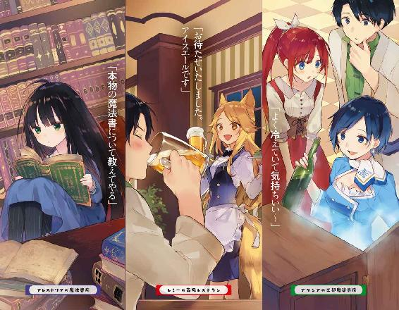
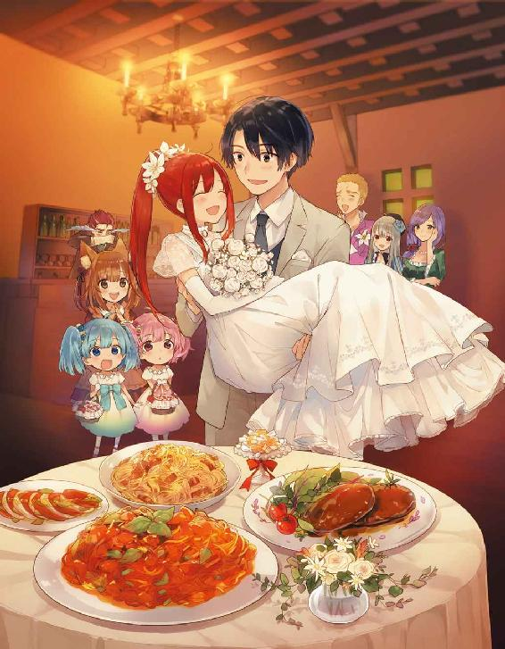
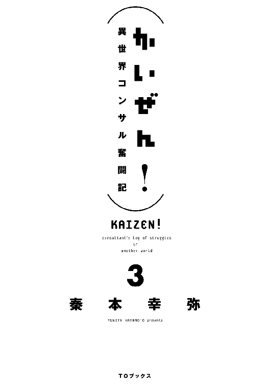
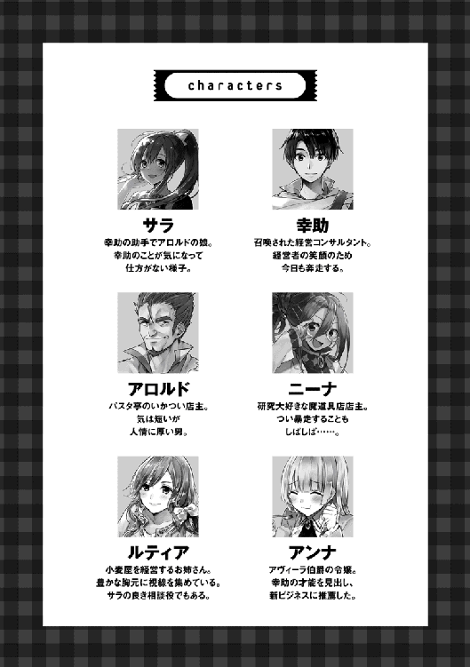
ＣＯＮＴＥＮＴＳ
● ● ●
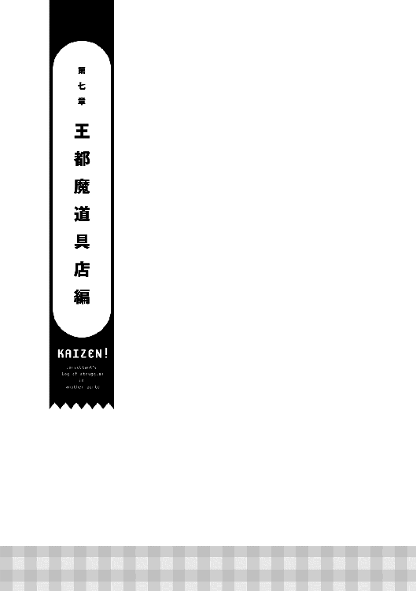
経営コンサルティング会社で深夜残業中、突然異世界に召喚されてしまった松田幸助が、アヴィーラ伯爵領に来てから一年が経った。季節は一周巡り、木々の緑はその濃さを増しつつある。今日も多くの人々がメインストリートの石畳を踏みしめ、西へ東へと向かっている。そんな通りの様子を、宿屋から見下ろしている男──幸助の姿があった。
（もう一年経つのか。それにしても濃い一年だったなぁ）
幸助は部屋から外をぼうっと眺めながら物思いにふけている。頭の中には、この一年間で起きた様々な出来事が巡っている。
サラとの偶然の出会いがきっかけで『アロルドのパスタ亭』の経営改善に携わった。その後も人との縁が続き、小麦店を営むルティア、武器屋を営むホルガーの店を立て続けに改善した。その幸助の活動は町を治める領主の耳にも入った。その実績を買われ、領主令嬢であるアンナから直々に、魔道具店の経営改善を依頼されることとなった。平民である幸助が貴族からの依頼をこなすというのは異例の出世である。
幸助が魔道具店へ初めて行った時、店長のニーナは役に立たないガラクタの魔道具ばかり開発していた。魔道具とは、魔力をエネルギー源にして稼働する道具のことである。技術はある。しかし売れていない。そんな中、幸助は既存の魔道コンロに着目。貴族や業務用のため過剰だった性能を、一般家庭向けに絞ったことで本体を安価に。エネルギー源となる魔石を専用設計とすることで継続的な収益を確保できるようにした。結果、魔道コンロは大ヒット商品となった。現在も競合相手である薪のシェアをどんどん奪っている。
魔道具店の次に、靴屋を経営するアラノの店の改善を行った。アラノの店は、競合する大型店の価格競争に巻き込まれ、売上を減らしていた。アラノのような個人店は、他にはオーダーメイドで製造する職人の店ばかり。アラノだけが、その技術を持っていなかった。しかし、幸助は顧客へのアンケートから、アラノはフィッティング技術で支持を得ていたことを見抜く。そこで、皆で協力しチラシを印刷。それを配ることで、足に合う靴がなくて困っている人の集客に成功。見事に改善を成し遂げたのだ。
そしてつい最近。隣町で魔道コンロを販売するということで、幸助はその販売方法の説明役に任じられた。その隣町でも経営に行き詰まり、困っている商売人と出会った。造船工房を営むウィルゴだ。話を聞けば、造船組合から脱退したことが、そもそもの原因であった。だが、本人は組合に戻ることをかたくなに拒んだ。どうやって改善しようか悩んでいた時、事件は起きた。サラが幸助を追い、配達を忘れた器具を届けに来たのだが、折悪く、魔物の襲撃に遭遇。乗っていた船を囲まれ絶体絶命のピンチに陥ってしまったのだ。幸い、冒険者ランディの活躍で間一髪難を逃れたサラは、幸助と一緒にウィルゴの店の経営改善に加わった。だが、サラの「子供みたいに意地張ってる方が悪い」というひと言で、組合に戻るという方針に決定。組合長に直談判の末、無事、組合に戻ることが決まった。今後、順調に売上を戻していくであろう。
（最初は食品関係でやりやすかったけど、この世界ならではの業種もあったりして大変だったよなぁ。ま、就職してから初めて任されたスーパーマーケットのプロジェクトと比べたらどれも楽だったか。あれは本当に参ったもんなぁ、トラブル続きで）
幸助がコンサルティング会社に就職してから初めて担当したプロジェクトは、スーパーマーケットの業務改善だった。就職後、約一年経った頃のことだ。
まだコンサルタントとして半人前の幸助が、先輩社員に助けられながら取り組んだのだが、トラブルの連続で徹夜続きだった記憶がある。それに比べると、今は遥かに充実感に満ち溢れている。何かあった時にかばってくれる上司や、最終的な責任を負ってくれる会社という組織はない。しかし、それ以上に得られるものが大きい。自分が考え、取り組んだことがダイレクトに成果となって返ってくる。相手の生活が懸かっている仕事だ。責任は重大だが、成功した時の達成感ほど心を満たすものはない。だから幸助はサラリーマン時代以上にこの仕事にやりがいを感じている。
（そういえば、この世界で多くの人の役に立つって決めたんだよな）
幸助はこの世界で初めて取り組んだ仕事──アロルドの店の改善が成功した後に、自分に誓ったことを思い出す。宿へ帰る道すがら、夜風の中、立てた誓いだ。
この世界に召喚されてから初めて人の役に立てた。突然召喚されたことによる絶望の中、初めて見えた光である。その時のことはまだ心に強く残っている。
（順調な滑り出し、いや、順調すぎる滑り出しだよなぁ）
今でも時おり、家族や上司のことを思い出すことがある。それでも以前のような悲観はもうない。サラやアロルドを始めとする新しい仲間ができたからだ。
「みんなに感謝だな。さて、そろそろ時間か」
そう言うと幸助は窓を閉め、出かける用意をする。向かう先は魔道具店だ。新製品ができたという話を聞き、見に行くことにしたのだ。この時代には数少ないハイテク製品である。胸を躍らせつつ、足を進める幸助であった。
◇
「ニーナさん、お久しぶりです」
「フフッ、待ってたよ」
久しぶりに訪れる魔道具店。店構えは以前と変わっていないようだ。ただし、人の出入りは以前よりも激しくなっている。
「順調そうですね」
「おかげさまでね。隣町から追加の注文もあったし、笑いが止まらないよ。フフフフフッ」
ニーナの黒い笑みに磨きがかかったように感じた幸助は、引きつった笑みを浮かべる。
「そ......それはよかったです......。それで、新製品というのはどれですか？ すごく楽しみにして来ました」
「フフッ、よくぞ聞いてくれたね」
ニーナの眼鏡がキラリと光る。
立ち話もなんだからと促され、幸助はいつものソファーに腰かける。テーブルには何やら魔道具らしきものが置かれていた。形状からすると魔道コンロのようだが、幸助の見たことのないサイズだ。しかも、ゴテゴテと趣味の悪い装飾が施されている。
「新製品って、これ......ですか？」
「うん？ ああ、これも新製品の一つだよ。魔道コンロの改良型。これ、すごいんだよ」
そう言うとニーナはコンロを手に取り、自信たっぷりに声を上げる。
「見たまえ──魔石の三・連・装！」
でーんとニーナが示す先には、確かに真っ赤な魔石が三つ装着されていた。眼鏡の奥の目からは自信がありありと窺える。ゴトリとコンロをテーブルへ置くと、ニーナは更に言葉を続ける。
「家庭用と同様にエネルギー交換効率は高く、最高出力は当社比五倍。しかも魔石の三連装により交換サイクルも長くなった大型魔道コンロ。どうだい？」
どうだいと言われても、どう反応してよいか分からず固まる幸助。魔石の三連装は良いアイディアだと感じた。業務用に出力を大きくすればエネルギーの消費量も多くなる。当然、必要とする魔石の量も増える。三連装にすることで交換サイクルが長くなれば手間も減る。問題はそこではない。幸助はゴテゴテでギラギラの装飾が気になって仕方ないのだ。シルバーをベースに、ゴールドの文様と色とりどりの石が散りばめられている。まるで成金趣味だ。
「あ、あの......」
「うん、何だい？ 感動して言葉にもならないのかい？」
「いや、そうではなくてですね。魔石の三連装は良いアイディアだと思います」
「でしょ。もっと褒めてくれてもいいんだよ」
「はい。とてもすごいです......。とてもすごいと思います。でも！」
「でも？」
次第に言葉が強くなる幸助。次を言おうか少しだけ悩むが、言わずにはいられない。
「この趣味の悪い装飾は何ですか！！！」
趣味が悪いと言い切ってしまった。これがニーナの好みだったらどうしようと、言ってから気付く幸助。今まではコストをかけられなくて武骨な製品しか開発できなかった。だが本当に開発したかったのは煌びやかな製品だったのかもしれない。そうであればニーナを否定してしまうことになる。だがもう遅い。言葉は既に放たれている。発言の撤回などという都合の良いことはできない。幸助はドキドキしながらニーナの反応を窺う。
「フフッ。この装飾が気になったんだ。これは貴族向けのカスタマイズだよ。もちろん普通の厨房向けは家庭用と同じシンプルなデザインだから安心して」
「そうですか。それを聞いて安心しました......」
ニーナの言葉に幸助は胸をなでおろす。幸いなことにニーナの趣味でもなく、一般に市販されるものでもなかったようだ。
「でも趣味が悪いだなんて、これをデザインした子が聞いたら泣いちゃうよ」
「す......すいません」
やはり失言だったようだ。幸助は即座に謝る。サラリーマン時代に培ったこの能力は、異世界生活一年以上の今でも反射的に作動する。
「フフッ、新製品は次のが本命なんだ」
「他にもあるんですね、新製品！」
魔道具についてのアイディア交換は、既に何度もしている。その際幸助は、日本で使っていた便利な家電製品などをよく例に挙げて話していた。その中のどれが製品化されたのか、期待感が高まる。
「魔道コンロに次ぎ、我が店での二つ目となる製品化......それはね」
「それは......？」
ニーナは立ち上がると部屋の隅に置かれている箱のような物体へ近づく。幸助もその後に続く。その箱は、大きさが幸助の腰の高さくらいある、縦長の直方体だ。外装は木を地味なグレーで塗ったもののようだ。前面には取っ手がついている。幸助にとって既視感のある形状だ。コンロ同様、日本では間違いなく必需品の一つである。
「冷却庫、ですか？」
「正解！」
やはり冷蔵庫、いや、冷却庫であった。以前は効率が悪いと出来損ない扱いされていた魔道冷却庫。ルティアの店で見た物よりも数倍大きい。見た目以外にどのような改善をしたのだろうか。それが気になった幸助はニーナへ質問する。
「効率の問題は解決できたんですね？」
「もちろん。コンロを高効率化したのとほとんど同じ術式で行けたからね」
「なるほど......」
熱を扱う魔道具は、温めるか冷やすかで技術的な差は少ないようである。といっても魔道具の技術はちんぷんかんぷんな幸助。ニーナに対して、頷くだけのリアクションにとどめる。以前、迂闊にも技術的なことを質問したところ、乗りに乗ったニーナに数時間拘束された経験がある。それ以来、幸助は技術面で掘り下げないと決めているのだ。
「あと一つ工夫したところがあるんだ。何だと思う？」
嬉しそうな顔をしつつ、ニーナは幸助にそう聞く。やはり魔道具の話をしているニーナは活き活きしている。
「うーん、分からないですね。大きさですか？」
「フフッ、はずれだね。これはコースケには分からないかな。ここ、触ってごらん」
言われるがままに冷却庫に触れる幸助。特に何も感じるものはない。ただの塗装された木だ。率直な感想をニーナへ伝える。
「特に......何も感じません」
「でしょ！ 凄いと思わない？」
何も感じないと言ったのに、テンション高く喜ぶニーナ。意味が分からないが幸助は取り敢えず頷く。
「外は冷たくも何ともないのに、中はキンキンに冷えてる。これは革命だね」
そう言うとニーナはドアを開け、中から飲み物を取り出す。それを幸助の頬へ当てる。
「わっ、冷たっ！」
「でしょ。冷却庫の箱部分を今までと違う素材にしたら、同じ魔石の量でも長く冷やせるようになったんだ」
「そういうことですか。断熱材がなかったから、輪をかけて効率が悪かったんですね」
「そうそう、飲み込みが早いね」
一通りの説明を聞くと、幸助はしげしげと冷却庫を観察する。容量は一人暮らし用の冷蔵庫よりも少なそうだ。だが、冷やすことは魔法か冬の氷に頼っている世界では、大きな需要が期待できそうである。しかもこれから季節は夏へ向かう。夏に冷たい飲み物などほとんど出会っていない。一度だけルティアの店でほんのり冷えたお茶をもらっただけだ。
「ニーナさん、これ、僕も欲しいです」
「フフッ、お目が高いね。量産品が完成したら真っ先に納品しようじゃないか。王都の店にも置く予定なんだ」
「是非！」
二人は会話しながら再びソファーへ腰かける。幸助は冷却庫から出された冷えたお茶で喉を潤す。久しぶりの冷たい飲み物が、喉を通り胃へと流れるのを感じる。
「王都の店は順調ですか？」
「好調な滑り出しだよ。もともと魔道コンロの話題も流れてたからね。情報に敏感な人はすぐに買ってくれたよ」
「やっぱり王都は違うんですね」
「うん。人の数も動くお金も桁違いだね。王都は行ったことなかった？」
「いや、あるにはあるんですが、ほとんど通過しただけでじっくりは滞在してないんです」
幸助はこの世界に召喚されてから約半年を、旅という名の無目的な移動に費やしていた。王都も通過したのだが、あまり印象は残っていない。しかしニーナの話を聞き、俄然興味が湧いてきた。以前滞在した水の街も、新鮮な体験を数多くできた。きっと王都にも新たな発見があるに違いない。そう思った幸助は、ニーナへ訊く。
「王都の店、見に行ってもいいですか？」
「うん？ もちろんいいよ。突然どうして？」
「店を見てみたいのはもちろんですが、王都の雰囲気も味わってみたいなと思いまして」
あごに手を当てるニーナ。数秒の後、幸助に視線を合わせると口を開く。
「ちょうど良いや。ついでに王都の店で魔道冷却庫の販促もお願いしてもいいかな？ 価格が高いから工夫も必要そうだしね」
今は何の案件も抱えていない幸助。ただの観光の予定がついでに仕事もできる。思ってもないオファーに幸助は二つ返事で引き受けることにする。
「もちろん、喜んで引き受けさせていただきます！」
◇
「という訳で、王都へ行くことになりました」
ニーナの店での用事を済ませると、幸助はその足でアロルドの店へ向かった。そして店に入るや否や王都行きのことを伝える。時刻は夜の営業が始まる直前。至る所にランプが灯り、薄暗い店内を淡く照らしている。その店内のテーブルで三人が幸助の話を聞いている。アロルドとサラ、そしてサラの母ミレーヌだ。
「私も一緒に行く！ マルコ君も仕事任せられるようになったし、いいでしょ？」
サラはそう言うと両親の顔を交互に見る。マルコとはアロルドの店で修行中の見習いのことだ。サラが店を空けることが多いため、最近来るようになった。調理は少々、ホールならばすべてを任せることができる。
「いいんじゃないサラ、行ってきなさいよ」
そう言ったのはミレーヌだ。サラと視線を合わせると、二人でにっこりと笑顔を作る。
「えっ？ ミレーヌ。お前......」
その二人とは対照的に戸惑った表情をしているのは、もちろんアロルドだ。確かに見習いはいる。サラがいなくても店は回る。だから店が回らないという反対意見は使えない。それでも必死に行ってはいけない理由を探し、並べたてる。
「そんな話、突然言われても」
「行くのは二週間後ですから、ゆっくり準備できますよ」
「足手まといにならないか？」
「仕事に関しては逆に僕が助けられているところもありますからね」
「そうだよお父さん！ 私、足手まといなんかじゃないもん！」
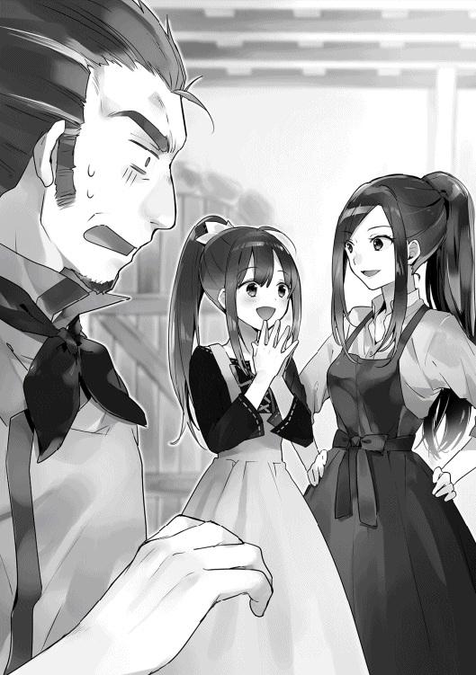
二人の言葉にアロルドはどんどん小さくなっていく。
「王都は危険だぞ」
「何かそういうデータはあるんですか？」
「......そんな気がするだけだ」
「では、それだけでは危険という理由にはなりませんね」
「そうよ。王都の方が整備されててここよりも安全じゃないの」
「それでも......」
「ねぇお父さん、いいでしょ？」
「......」
アロルドはここで口を噤む。必死に言葉を探すが何も出てこない。
「反対意見もないみたいだし、決定ね」
「ぐぬぅ......」
迷えるアロルドに止めを刺したのは、妻ミレーヌだ。アロルドもこれ以上反対はしなかった。愛娘サラは十五歳。既に成人している。アロルドもそろそろ子離れしなければならないという自覚はある。
「やったぁ！」
店内にサラの声が響く。こうして二人の王都行きが決まったのだった。
◇
「コースケさん、すごい！ 大きいよ！」
「うん。さすが王都だね」
馬車で移動すること数日、幸助とサラは王都のすぐ近くまでやって来た。小高い丘を移動しているため、馬車の車窓からは王都が一望できる。まず目に入るのは、町の中央に所狭しと並ぶ石造りの建物だ。どれも三階建て以上の高さがあり、統一された濃いオレンジ色の屋根が美しい景観をつくっている。その建物の群れを高さ十メートルほどの城壁が囲っている。更にその周りには、納まりきらなかった住宅が無秩序に広がっている。一説によると人口は三十万人。幸助が訪れた町の中では最大である。
そして何よりも目を引くのは北にそびえたつ城だ。山を背に一段高いところに建っているので、距離は離れているがその姿は圧巻だ。
「あのお城の中にお姫様がいるんだね！」
「うん。きっとそうだよ」
サラは久しぶりに訪れる景色を楽しんでいるようだ。幸助も日本では味わえない景色をしばし堪能する。
翌朝。二人はニーナに紹介された宿で一泊すると、目的の場所へ向かう。
「ここかな？」
「そうみたいだよ」
まっすぐ整備されたアヴィーラ伯爵領と違い、細く入り組んだ道を歩くこと十数分。幸助とサラはニーナに教えられた魔道具店へ到着した。場所は住宅街の中でも貴族街に近い場所に位置する、比較的富裕層が多いエリアだ。五階建ての建物の一階部分が店舗となっていた。事前情報では、ここで販売と修理を行っているとのことだ。
「こんにちは」
ドアを開け店内に入ると二人は声をかける。店内に待機していた一人の女性がそれに気付き、近づいてくる。
「いらっしゃいませ」
「幸助と申しますが、ニーナさんからの紹介でアリシアさんに会いに来ました」
「はい。お話は伺っております。こちらにかけて少々お待ちください」
幸助は案内された椅子に座ると店内を見回す。すぐ横には幸助たちがかけているものと同様のテーブルが二セットある。商談や実演販売をするコーナーだろうと幸助は推測する。
「コースケさん、お洒落な店だね」
「うん。僕もそう思う」
この店はアヴィーラ伯爵領の店とは違い、カジュアルな造りだ。コンビニほどの広さの店内には白で明るい印象の棚が並び、そこには二サイズの魔道コンロが陳列されている。
将来を見据えてなのだろう、棚は広い。しかし今あるのはコンロのみで、冷却庫はまだ並んでいなかった。従って、売場はスカスカだ。水を温めたり冷やすことのできるポットも、もうすぐできると聞いていた。様々な商品が並ぶ将来が待ち遠しい。
店内を一通り見回したところで、奥から一人の女性がやって来た。幸助は反射的に立ち上がりつつ、女性の様子を窺う。紺色のショートヘアーに少し垂れた紺色の目。年の頃は幸助よりも少し若いくらいであろうか。背はサラよりも高く、すらっと細い。しかも出ているところはしっかりと出ている。ブルー基調の制服が、そのサイズを強調している。
「お待たせいたしました。私が店長のアリシアです」
自己紹介をするアリシアの声は、透き通るようだった。見た目だけでなく声も麗しい。幸助は鼻の下が伸びそうになるのをぐっと堪え、自己紹介する。
「ニーナさんから紹介していただきました幸助です」
「サラです」
「話はニーナさんより伺っております。魔道コンロを人気商品にのし上げた立役者ですってね。何度もお話を伺っておりますので、初めてお会いしたようには思えません」
アリシアはそう言うとにっこりとほほ笑む。前評判はかなり高いようだ。
「ありがとうございます！ 何より製品が良いですから。これからの展開が楽しみです」
「はい。これから少しずつ新製品が増える予定ですから、私も楽しみです」
アリシアは花の咲いたような笑顔でそう答える。幸助の心拍数は高まる。口はだらしなく開いたままだ。幸い、サラからの肘鉄は飛んでこなかった。
二人はアリシアに促され再び椅子へかける。まずは互いのことを知るための雑談からだ。
「アリシアさんもニーナさんみたいに、小さな頃から魔道具に触れてらっしゃたんですか？」
「いいえ、魔道具に触れたのはここに来てからなんです」
そう言うとアリシアは、ここに勤めることになった経緯を説明する。
アリシアは商家の次女として育ち、最近まで家業を手伝っていた。しかし、商売はいずれ長男が継ぐことが決まっている。長女はとっくの昔に嫁いだ。家督を継ぐことのできないアリシアも、いつまでも家にいる訳にはいかなかった。そのような状況の中、たまたま魔道具店が求人していることを知った。商売については心得ている。魔道具といえば今トレンドの成長産業だ。この大きな波に乗れるかもしれない。そう考えたアリシアは、迷わず応募したそうだ。同じように考えるライバルは多かった。しかしアリシアは持ち前の賢さを活かし、試験をくぐり抜けた。結果、採用が決まり、更にはニーナの代わりに店長へと大抜擢されたのだった。
「へぇ、そんなに人気だったんですね。魔道具店」
「すごいです！」
「はい。ですので両親とも大喜びで。採用が決まった日はお祝いに鶏の丸焼きが出たくらいです」
日本で言えば勢いのあるベンチャー企業か、はたまた公営の事業なので公務員的な感覚なのか。幸助にはアリシアの両親の気持ちは分からなかった。だが、魔道具店がそれほど喜ばれる存在になったというのは嬉しいことである。
「それにしても、アリシアさんのような方が店長で安心しました。前回はみんな技術畑で大変でしたので」
「うふふ、お世辞でも嬉しいです」
幸助はそんなやり取りをしながら、数ヶ月前のことを思い出す。当時のメンバーの中には、営業ができる人間はいなかった。結果、幸助は体重を削りつつ代理店政策に奔走することになったのだ。
「そういえば、王都内で魔道具を売っているのはここだけですか？」
「ええ。そうですよ？」
そう答えながら小首をかしげるアリシア。その可愛らしさに幸助は一瞬ドキッとするが、おくびにも出さない。いや、出せない。
「ということは、小売店には卸してないんですね」
「はい。その通りです。コンロの性能については認知されておりますし、今後商品が増えてくると兼業ではお店に負担がかかってしまいます。ですので改めて商品ラインナップが充実した時に、魔道具専門の代理店を募ることにします」
「なるほど。それは確かにそうですね」
具体的な回答が返ってきたことで幸助は安堵する。ならば仕事は冷却庫の販売プランを一緒に考え、実績を作ることに絞られる。これなら王都観光もしっかりと楽しめそうだ。
「では本題ですが、アリシアさん。冷却庫はもう届いてますか？」
「はい。倉庫に試作品があります。ご覧になりますか？」
「私、見たことないから見てみたいです！」
まだ冷却庫を見たことがないと言うサラの言葉で三人は席を立つ。倉庫には大量のコンロと魔石が保管されていた。しかし店頭と同様、スペースにはまだまだ余裕がある。幸助はその倉庫の一角に、見覚えのある箱と見たことのない小さな箱があるのを見つける。
「へぇ、小さいサイズも作ってたんですね」
「はい。暫定ですが大きい方が金貨五枚になってしまいますので、手が出しやすいよう小さなものも作ってもらいました」
幸助は小さな冷却庫に近づくとドアを開ける。外観以上に中は狭かった。しかし冷やすものを限定するならば必要にして十分。ビジネスホテル備え付けの冷蔵庫もこのくらいのサイズであった。宿の部屋に置くのは、この小さなものでもいいなと考える。
「小さなのも便利そうですね。こっちの価格はどのくらいになりそうですか？」
「こちらは金貨二枚です」
小さな方でも金貨二枚。ということは、魔道コンロの倍以上である。
「結構するんですね。ただ、大小で比較ができるから小さいのがあってよかったです」
幸助のこの言葉に、興味深そうに冷却庫を観察していたサラが声を上げる。
「オリーブオイルの時と同じだね、コースケさん！」
「そうだね、サラ。比較するものがあればオリーブオイルの時と同じで、アンカリングの効果が期待できるんだ」
「アンカリング......ですか？」
アリシアの頭上にはハテナが浮かんでいる。
アンカリングの手法は多くの店で用いられている。千円の価格を赤線で取り消し、五百円と表示するのもアンカリングを活用した手法だ。こうすることで商品そのものの価値に加え、割安だから買おうという別の動機が発生する。
ルティアの店でオリーブオイルを販売した際は、その品質に応じて松竹梅三種類の商品を用意した。今までの相場は「梅」商品の価格だったが、「松」商品があることで「竹」商品を安く感じてもらうことができた。もちろん相応の品質あってこそである。そして冷却庫のようにまだ馴染みのない商品は、最初に見た価格が冷却庫の「基準価格＝アンカー」となる。基準価格に対して小さなものが割安と感じれば、それが購入動機にもなり得る。
「──という訳ですので、大きな冷却庫を一番目立つところに置き、奥に小さな冷却庫を陳列すると良いと思います」
幸助は二人へ説明すると、そう締めくくる。それを聞いていたアリシアは、感心しきりの表情で幸助を見つめている。
「なるほど。さすがはコースケさんです。早々にお知恵を拝聴でき光栄です」
「ありがとうございます」
とはいえ店内に商品を並べただけでは冷却庫のような高額品は売りにくい。冷却庫を使うことで生活にどんな素晴らしい変化が訪れるか。それを表現し、興味を持ってもらわなければアンカリングも意味がない。しかも、コンロは消耗品である魔石のコストは薪と置き換えられた。だが冷却庫の場合、魔石のコストが他の何かに取って代わることはない。運用コストは純粋に家計の負担増につながる。現状を踏まえたうえでしっかりと販売プランを練る必要がある。そのことを告げると幸助とサラは店を後にする。
「お店、好調そうだったね」
「うん。私たちがいる間にも何人もお客さん来てたもんね」
「アリシアさん、いい人だったからなぁ。これからどんどん流行るんじゃないかな」
「うん。きれいな人だったよね。コースケさん、ずっと嬉しそうだったもん」
サラの言葉に棘が含まれている。だが、その目は決して怒っていない。以前ルティアと相談したことで、幸助に対する心の余裕ができたようだ。しかしそうとは知らない幸助は、慌てて取り繕う。
「そ、そう？ い......いつもと変わらなかったと思うけど」
「何でどもるの！」
「さて、早速冷却庫の販売プランを考えないとね」
「ちょっと、コースケさん！ もう......待ってよ！」
足早になる幸助の後を、サラは慌てて追いかける。
◇
「さて、夕飯の準備をしなきゃね。今日は何を作ろうかしら」
ここは王都内のとある住宅。台所では女性が鼻唄交じりに夕食の準備を始めるところだった。今ある食材を一通り回し見すると、パチンと手をたたく。
「よし、決めた！ ポテトサラダにしましょう」
鍋をコンロにかけること数分。鍋の水は一度は沸騰したものの、すぐに勢いが弱くなり沈黙してしまう。
「あら、魔石切れかしら。交換用は......あったあった」
女性はコンロのスイッチを切り、使い切った魔石を取り外すと、新しい魔石をカチリとはめる。もう何度も交換している。その作業は慣れたものである。
「さてと、気を取り直してもう一度」
そう言いながらコンロのスイッチを押した瞬間──。
バンッ！！！
コンロが突然大きな音を立て爆発し、部品や熱湯が飛び散った。
◇
「うん。これで出来上がりだ」
「いい感じにまとまったね。コースケさん！」
ここは宿屋の一室。机に置かれた書類を前に、幸助とサラはパチパチと拍手をする。王都の魔道具店を訪れてから約一週間後。冷却庫の販売計画が完成したのだ。
当初はランチの開拓や王都の観光などを挟みつつ、のんびりと行うつもりだった。だが残念ながら、天気が良かったのは最初の三日間だけ。そのためここ数日は、宿に篭りっきりで販売計画を立てていたのだ。結果、予想よりも大幅に早く計画書が完成した。
計画書を作成したのはサラだ。もちろん幸助が全面的にサポートしたうえではあるが。
今までの改善案件は、極端にひどい状況を何とか立て直すことが多かった。近い将来、潰れるのが目に見えている状況ばかりだった。だからサラへ計画の立て方など教える暇がなかった。かといって目の前に案件がない暇な時には計画は作れない。これは主に幸助のやる気の問題からである。
しかし今回は時間に余裕がある。純粋に冷却庫の販売だけに集中できるというチャンスが到来した。サラが今まで得てきた知識でも対応が可能そうな案件だ。そう考えた幸助は、サラへ販売計画の立て方を教えつつ冷却庫の計画を作成してもらったのだ。
「何だか懐かしいなぁ」
「うん？ 何のこと、コースケさん？」
「あ、いや。ただの独り言」
幸助はサラリーマン時代のことを回想していた。幸助もこうやって先輩から教えられ、必死に徹夜で計画書を作った記憶がある。残念ながら幸助より後に新入社員が入社することはなかったため、会社で教える立場になることはなかった。だが今、世界は違えど先輩である幸助が後輩のサラへこうして教えている。先輩社員の気持ちが少しだけ分かった気がする幸助であった。
「コースケさん、今すぐお店に持っていく？」
「いや、持っていくのは明日にしよ。また明日見直すと、何だこれって所が見つかるかもしれないからね」
「ふーん、そうなんだ。それじゃあ、また夕食の時間にね！」
そう言うとサラは計画書を手に、部屋の外へ出る。ここは幸助が借りている部屋だ。サラの部屋は隣。こうして計画を練る時は、サラが幸助の部屋を訪れることになっている。
「今頃みんな何してるんだろうなぁ」
部屋に一人残った幸助は、そうつぶやきながら再び過去のことを思い出す。幸助が召喚されてから一年半。当初のような悲観はもうないが、それでも時おりこうやって何かのきっかけで思い出すことはある。
「そろそろ僕のことは忘れられてるのかな......。もう一年半だもんな。ま、あんまり考えてても仕方ないや。明日が本番。頑張らなきゃ」
特にアポを取っている訳ではない。アリシアがいなければまた後日となる。そのあたりの感覚は日本と大きく違うが、幸助はもう慣れている。また日を改めて行けば良いだけだ。
◇
企画書ができた翌日。幸助とサラは再び魔道具店へ向かう。
「この企画、受け入れてもらえるといいね」
「良い企画だし、現場と乖離してない限りは大丈夫だと思うよ」
サラは企画書の入ったカバンをキュッと胸に抱く。初めて一から考えた企画だ。どのような反応になるのか気になって仕方ない。空を見上げると、昨日と変わらず今にも雨が滴り落ちてきそうな色をしている。しかし石畳を踏みしめるサラの足取りは軽い。その足取りに合わせ、真っ赤なポニーテールが左右に揺れる。
歩くこと十数分。あっという間に魔道具店へ到着する。幸助がドアを開けようとしたその時、店内から勢いよくドアが開く。
「おわっ！ びっくりした」
店内から出てきたのは見たことのない女性だ。上気した顔からは怒りの成分が窺える。
「もう、何なのよいったい！ 二度と来ないからね！」
店内に捨て台詞を投げつけるとバン！ と勢いよくドアを閉める。幸助とサラは呆気にとられながら、足早に去っていく女性の背中を見送る。
「コースケさん、何があったんだろうね？」
「良いことじゃないことは確かだ。店で話を聞かなきゃ」
「うん！ 早く行こっ」
幸助は不安を胸に店へ入る。そこで目に飛び込んできた光景。それは、お通夜のような雰囲気の店内だった。肩を落としているアリシアに、俯いている従業員。二人からは全く生気が感じられない。
「大丈夫ですか!?」
「何があったんですか？」
矢継ぎ早に問いかける幸助とサラ。その声でようやくアリシアは二人が来たことに気付く。
「こ、コースケさぁん」
力なく二人のもとへ寄るアリシア。その目には隈が浮かんでいる。寝る時間が取れないくらい大変なことになっているのかと、幸助の不安は更に高まる。
「アリシアさん、どうしたんですか？ さっきの方、かなり怒ってたみたいですけど......」
「............うっ......うっ」
アリシアの瞳からは大粒の涙が溢れてきた。相当辛いことがあったようだ。
「まずは座ってから落ち着いて話しましょうか」
「アリシアさん、あちらに行きましょう」
サラに肩を抱かれながらようやくテーブルへたどり着くと、椅子へなだれ込むように座る。アリシアの隣にサラが。そして正面に幸助が座る。
「店長、これ飲んで落ち着いてください」
気を利かせた従業員が冷たい飲み物を持ってきた。アリシアはそれを一口飲むと、声を絞り出す。
「ばく......はつ......」
「爆発がどうしたんですか？」
「......ば、爆発してしまったのです。魔道コンロが！」
「えっ!?」
想像だにしなかったアリシアの言葉に幸助は目を見開き、サラは口へ手を当てる。爆発、それは即ち事故だ。怪我人だって出ている可能性は高い。これが事実なら大問題である。
「怪我人は？」
「一人......」
「幸いなことに命に別条はありませんでした」
アリシアの言葉に従業員が補足をする。死者は出ていない。そのことで少しだけ安堵した。
幸助は、以前研究室を見学した時のことを思い出す。開発中の何かが爆発したのを目撃した。あくまで研究中の過程でのことだが、ニーナは「よくあること」と言っていた。だが爆発は爆発だ。潜在的な欠陥があったのかもしれない。
「爆発の原因は何だったんですか？」
「............」
アリシアは何も答えない。沈黙しているアリシアの代わりに再び従業員が答える。
「それがまだ分かっておりません」
「ということは、また起こる可能性があるんですね」
「はい。既に三件の事故があったという報告が入っていますので......」
「三件も!?」
状況はかなり悪いようだ。既に三件も発生しているということは、それ以上に増えると考えるのが妥当だ。
「もっと早く知らせてくれればよかったのに」
「町中の掲示板に注意を喚起する知らせが掲示されてしまいまして、不安になったお客様が一気に押し寄せてしまったのです。その対応で精いっぱいでした」
幸助はここ数日宿に篭りっきりで、町の様子はほとんど把握していなかった。それに初めての王都だ。そのような掲示板があること自体も初めて知った。アリシアや従業員たちは幸助と出会って間もない。だから幸助へ相談が行かなかったのは致し方ないことである。
「事故品の回収はしてありますか？」
「はい、お待ちください。一つだけ持ち込まれたものがありますので持って参ります」
そう言うと従業員は店の奥から破損したコンロを持って来る。テーブルに置かれたコンロの姿に、幸助とサラは息をのむ。
「コースケさん、これ......」
「うん。これはひどいね」
事故を起こしたコンロは、一応原形をとどめている。しかし外装がえぐれて内部が丸見えの状態だ。特に魔石部分の損傷が激しい。爆発の衝撃は相当なものだったであろう。
「これを検証しても原因は分からなかったんですよね」
「ええ。詳しい技術者がいないため、ニーナさんの到着を待つまでは......」
「ニーナさんはいつ頃到着の予定ですか？」
「もともと六日後にはいらっしゃる予定でしたので、その頃には」
「うーん、そうですか。困りましたね......」
初めて訪れる試練に幸助はどうしたら良いのか分からず、次の言葉が浮かんでこなかった。水を打ったように店内は静まり返る。
（まずいなぁ。目の前の客に対応していただけで根本的な対策が何もなされていない状況か。こういうのは初動が大切なのにな。ニーナさんが到着するまで六日間。それまでにできることを探さないと）
原因が分からなければ対策は打てない。それまでにできることは何があるのか。幸助が考えを巡らしていると、突然アリシアが両手で頭を抱え、早口でまくしたてる。
「あーー、もうどうしたら良いのでしょうか。このままでは店が潰れてしまいます。せっかく順調にいってたのに。せっかく入社できたのに。せっかく店のことはすべて任せてもらえたのに。このままでは首ですよ、クビ。これではお父様とお母様に見せる顔がありません。せっかく喜んでもらったのにどんな顔して帰ればいいのでしょうか。きっとお兄さんにもお姉さんに笑われてしまいます。そして言われるに違いません。一族の恥さらしって。もしかしたら私のせいで実家の商売までダメになってしまうかもしれません。うーーー、もうどうしたら良いか分かりません！」
そう言い切るとアリシアはプシューと力が抜けたようにテーブルへ突っ伏す。難関をくぐり抜けての入社、そして店長への大抜擢。喜び、応援してくれた両親。そして目標を共にする店の仲間......。アリシアはすべてを裏切ることになってしまいそうな恐怖に襲われる。
だからといって、何もしない訳にはいかない。まずは原因を追究し改善策を立て、速やかに実行する必要がある。安全が確認できるまで販売はできない。
信用を積み重ねるには時間がかかる。しかし積み重ねた信用は、一瞬で失われてしまうこともある。魔道具店は、今まさに急速に信用が失われつつある状況だ。
早く解決しないとアヴィーラ伯爵領での販売にも影響が出る可能性がある。せっかくここまで成長した事業を潰す訳にはいかない。製品開発からこの事業に関わってきた幸助。自分のアイディアがこうして製品として形になっている。だから魔道具には愛着がある。
解決までどれだけ時間がかかるかは分からない。だが幸助には、この問題解決に取り組まない理由などなかった。サラや従業員が心配そうに見守る中、幸助は口を開く。
「アリシアさん。ニーナさんが到着するまで待っていたら手遅れになるかもしれません」
「............」
「それまでにできることもあるはずです」
「......」
「こんなことで諦めたくないですよね？ せっかく縁のあった魔道具店なのに」
「......はい」。かすれるような声でアリシアは答える。
「トラブルは解決できる人の前に現れるものです。アリシアさんなら大丈夫。絶対に解決できますよ。きっと店が発展するためのほんの小さな試練に過ぎません。僕も精いっぱいお手伝いします。だから一緒に頑張りましょう！」
その言葉にアリシアは顔を上げ、幸助と視線を合わせる。その顔は、涙や隈でひどいことになっている。
「お店は......潰れないで済みますか？」
「もちろんです」
「私は、クビにならないのですね？」
後ろ向きになっている弱気なアリシアに対し、幸助は「はい」と力強く答える。
「なら......またいっぱいお客さん、来てくれるようになるのですか？」
「きっとそうなります。いや、そうなるようにします」
正直、幸助は解決方法の見当がついていない。不安で仕方なかった。だから先ほどアリシアへ伝えた言葉を自分自身にも言い聞かせる。問題は解決できる人の前に現れるものだ。絶対にこの問題は解決できる。そして以前のように、いや、以前以上の人気店にすることができる、と。
「アリシアさん」
「はい......」
幸助は力強く宣言する。
「あなたのお店、僕が流行らせてみせます！」
幸助の宣言を聞いたアリシアは、戸惑いとも期待感とも取れる表情を浮かべている。
今まで、あまり人を頼ることがなかったアリシア。魔道具店へ就職を決めたのも、店長の座を勝ち取ったのもすべて自分で決め、自分で行動した結果だ。問題が起きてからも、自分が魔道具店の責任者だ。だから自分で何とかせねばと考えていた。だからこんなに安易に人を頼ってよいものかと迷っているのだ。
だが、焦りだけが先行して何もできていなかったのも事実。魔道具事業をここまでの規模にした幸助ならば何とかしてくれそうである。大先輩であるニーナだって幸助を頼ったのだ。ならば私も頼ってみよう。そう心の整理がついたアリシアは口を開く。
「お願い......してもよろしいのでしょうか？」
「もちろんです。問題を解決するだけではなく、今まで以上の繁盛店にしましょう。皆で力を合わせて」
「是非とも......よろしくお願いいたします」
力強い幸助の声に、アリシアの顔にも色が戻ってきた。幸助へ深々と頭を下げる。
「私にとって、この仕事は生きがいです。悪いことばかりが頭をよぎり、気を取り乱してしまいました。申し訳ありません」
「誰にだって不安になる時はありますよ」
アリシアは店のすべてを任されている。その権限はかなり大きい。判断を仰ぐにもニーナとの距離は離れているため時間がかかってしまうからだ。限りない不安がアリシアの心を満たし続けていた時、やって来たのが幸助だ。溜まった不安が溢れ出してしまったのは仕方ないのかもしれない。
「まだ何の対策もできておりません。私はつくづく仕事のできない女なんだなと思ってしまいました」
「不安に駆られたお客さんの対応は神経の磨り減る仕事です。それも立派な仕事ですよ。アリシアさんは頑張ってます」
結果はどうであれ、今まで仕事をさぼっていた訳ではない。最善の行動でもなかったが、誰もが経験したことのない状況だ。行動したことそのものを認めることは大切である。
「ありがとうございます」
「これから新製品がどんどん増えていきそうです。こんなところで躓いている場合ではないですからね。明るい未来を想像しつつ、最善の結果になるようにしましょう！」
「はい！」
ここでようやくアリシアの顔に笑顔が戻る。やはりアリシアには笑顔が似合うと感じる幸助であった。
数分後。短い休憩を挟むと幸助とアリシア、そしてサラがテーブルに着きミーティングを始める。アリシア以外の従業員たちは来店客対応のため待機だ。
「では、始めましょう」
「コースケさん。まだ爆発の原因も分からないのに、どうやって解決するの？」
最初に質問したのはサラだ。確かにまだ原因は不明だ。しかも三人とも技術者ではない。だから幸助も具体的なことは全然イメージできていない。
「うーん、そこなんだよなぁ。まだ圧倒的に情報が少ないから、まずは情報収集かな」
そう言うと幸助はテーブルに置かれたコンロに目を落とす。爆発と聞いて真っ先に疑ったのは偽物なのだが、これはどう見ても本物にしか見えない。ただし精巧な偽物は地球にも存在している。だから偽物かどうかの判断はニーナの到着を待たなければならない。
「まずはアリシアさんの知っている限りの情報を教えてもらってもいいですか？」
「はい。もちろん」
アリシアの話はこうだ。最初に事故があったのは幸助たちが魔道具店を訪れた二日後。城壁の外側にある一般的な家庭で起きたとのことである。その翌日に立て続けに二件の事故が発生。こちらも事故の現場は城壁の外。無秩序に住宅が立ち並ぶ住宅街である。テーブルに置かれている事故品は、そのうちの一つだ。それが持ち込まれて初めてアリシアは事故の発生を把握した。
そして一昨日、町中の掲示板に事故の記事が貼り出された。記事にコンロの使用を控えるメッセージもあった。残念ながら一方的な情報ばかりで、魔道具店の見解は載せられていない。とは言っても、現状では何の見解も出せない状況である。
記事が掲載されると、それを見て不安を感じたユーザーが魔道具店へ押し寄せた。しかしアリシアたちは具体的な状況がまだ把握できていないため、記事と同様しばらく使用を控えてとしか言えなかった。そのため先ほどの客のように、怒りをぶつけてくる人もかなりいたそうだ。
「以上が私が把握している経緯です」
幸助は腕を組みうーんと唸りながらアリシアの情報を整理する。事故は三件。そのいずれも城壁の外で発生している。ここに何らかの突破口があるかもしれない。そう考えた幸助はアリシアに視線を送ると口を開く。
「どれも城壁の外で起きた事故なんですね」
「ええ、今のところそのようです」
「というと、こういう言い方はあれですが、決して裕福ではない家庭が多いエリアですよね？」
「はい。エリア的にはそのように考えても問題ありません」
「ちょっと気になる共通点ですね......」
このエリアだからこそ起きているのか。それとも、たまたまなのか。まだ母数が少ないので何とも言えない幸助。再び腕を組んで悩んでいると、サラが口を開く。
「文字が読めなくて何か間違った使い方をしたのかな？」
「間違った使い方か......。操作自体は全然難しくないしなぁ」
「魔石をはめたら出力に応じたスイッチを押すだけです。小さなお子さんでも間違えることはないと思うのですが......」
コンロのスイッチは火力の大中小と停止のみ。文字が読めない人のために表記は絵となっている。アリシアの言う通り、この操作を間違えることはないだろう。
「操作で間違えようがないならば、運用方法に原因があるのか？ そういえば......」
ここで幸助はかなり前に見た新聞記事を思い出す。家庭用のカセットコンロを二個並べ、その上に鉄板を渡して使用した際に発生した事故の記事だ。燃料となるカセットボンベが加熱され、爆発してしまったという事故である。
「どうしたの？ コースケさん」
「コンロ自体が加熱されて爆発してしまった可能性はないでしょうか？」
「加熱？」
サラもアリシアもきょとんとした表情をしている。幸助は具体的な例を補足する。
「例えば何かを焼くためにコンロを複数並べて、その上に鉄板を置くとします。鉄板が加熱されるとコンロ本体も加熱されることになります」
「何台も買えるのかなぁ？」
幸助の言葉に疑問を呈したのはサラだ。確かに、高価なコンロを複数所有するとは考えにくい。持ちよりの可能性もあったが、幸助は話の方向を変える。
「では複数でなく、一台でも可能性としては考えられないですか？」
「鉄板を置くのも鍋を置くのも変わらないような気がします......。それに使用中に一番熱くなるのはもともとコンロですよ？」
アリシアはあごに人差し指を当てながらそう言う。その指摘はもっともである。
「魔石が加熱されたら爆発するとか......？」
「それは絶対にありません。魔石そのものは非常に熱に強いものですので」
「そうですか......」
アリシアは、そうきっぱりと言い切る。熱源がガスと魔力では根本的に違う。ここは異世界。自分の常識が通用しないこともある。だから幸助はそれ以上粘るのを諦める。
その後もああだこうだと話し合いは続くが、これといった原因は見つからなかった。時間がかなり経過した時、幸助は話題が脱線していることに気付く。
ミーティングのテーマは情報収集だ。それがいつしか原因の究明になっていた。それはそれで大切だが順序が違う。少ない情報の中であれこれ考えていても無意味だ。
事件は現場で起きている。どこかで聞いたことのあるフレーズが幸助の頭に流れる。思い立ったらすぐ行動だ。幸助はダンッとテーブルに手をつき立ち上がると、声を上げる。
「よし、決めた！」
二人の視線が幸助に注がれる。幸助はアリシアに視線を送ると、言葉を続ける。
「アリシアさん、現場を見に行きましょう！」
「現場......ですか？」
「はい。事故があった家を見に行くんです。使用状況を見たり使っていた人の話を聞けば、何か掴めるかもしれません。場所は把握してますか？」
「はい。把握はしておりますが......」
思いつきでテンションの高くなった幸助。しかし、対照的にアリシアの顔に影が差す。
「アリシアさん、どうしました？」
「あのですね......また怒られてしまうかと思うと気が重くなってしまいました......」
「そういうことですか......。怒られるかどうかは僕たちの対応次第です。これも先延ばしにすると、更に状況が悪くなってしまいますよ」
幸助はアリシアの目をまっすぐ見て「だから今すぐ行きましょ」と続ける。
「そうですね。では、参りましょう」
◇
魔道具店から歩くこと一時間。王都の西門を出て、更に一時間以上歩いた先に幸助とアリシアはいた。空模様は相変わらずどんよりしているが、雨はまだ落ちていない。
城壁を出ると建物の高さは少しずつ低くなる。この界隈まで来ると、ほとんどが二階建てだ。サラにはアリシアの代わりに接客要員として店に残ってもらった。クレームの対応を押しつけたことに幸助は心が痛んだが、接客が得意なサラの「任せて」という言葉に甘えた。そして幸助はというと......。
「はぁ、まだ到着しないんですか。王都ってやっぱり広いですね」
「あら、コースケさん。これくらいでへばっていたら王都民にはなれませんよ」
王都は広い。しかも城壁の外側へ行くのだから、移動は馬車が理想だ。だが残念ながら、急遽都合よく借りられる馬車はなかった。時間に余裕があれば後日でもよかったのだが、性急な解決を要する問題である。だから徒歩で向かうことにしたのだ。
「何だか僕が足手まといみたいになってしまいましたね」
「はい、その通りですね」
「うぅ、アリシアさんひどいです......」
「うふふ。冗談です。さ、あと少しです。頑張りましょう」
そう言いつつアリシアは幸助の背中を押す。歩きつつも数時間ずっと他愛もない会話をしてきた。二人はだいぶ打ち解けてきたようだ。それからしばらく歩くとアリシアはとある建物の前で足を止める。
「最初に事故の起きたお宅はこちらです。怒ってなければいいのですが......」
二階建てで、一つの建物に玄関がいくつもついている、長屋のようなスタイルだ。アリシアは不安そうな顔を浮かべつつ、右端のドアをノックすると声を張る。
「こんにちは。魔道具店の者です！」
待つこと数秒。恰幅の良い女性が二階の窓から顔を覗かせ、二人を見下ろす。幸助が事前に聞いた情報では、この家では事故はあったが怪我人はいないらしい。
「誰だって？」
アリシアは上を向き、大きな声で答える。
「魔道具店のアリシアです！」
「ああ、アンタか。今更何しに来たんだ？」
「先日の事故の調査に参りました」
「ふんっ、何を今更！」
女性は腕を組みアリシアをキッと睨み付ける。
「原因調査のため、事故を起こしたコンロを見せていただけないでしょうか？」
「それがあれば問題解決につながる可能性もあるんです」と幸助もアリシアの後に続く。話が聞けなかったとしても、事故品を持ち帰ることができれば今後の調査に使える。
「ゴミなんかとっくの昔に捨てたよ！」
「へっ......ご、ゴミ......。す、捨ててしまわれたのですか!?」
そう言葉を漏らすとアリシアは、ガクッと下を向く。女性の言葉が刺さったようだ。幸助はそんなアリシアの姿を横目に声を張る。
「では事故を起こした時の状況だけでも教えていただけないでしょうか？」
「んなもん目を離した隙にドカンだよ。それ以外に何を言えと？」
「そうですか......」
「絶対便利になるってっから買ったのに、とんだ災難だよ。あたしゃもう用はないんだ。帰った帰った！」
そう言うと窓の木戸をぴしゃりと閉める。幸助とアリシアは呆然とその場に立ち尽くす。通行人は何事かと二人の背中をちらっと見つつ通り過ぎていく。
「アリシアさん、全く話ができなかったですね」
「............あ、はいっ。そうですね。やはり早急に訪問すべきでした」
「過ぎたことを悔やんでも仕方ありませんよ。気を取り直して次の家に行きましょう」
迅速な対応ができていたら、こうならなかった可能性もあると考える幸助。だが「たられば」はない。現状はこうなのだ。
黒く厚い雲からはいよいよ雨が滴り落ちてきた。二人は否応にも足早になる。雨用の外套を羽織りつつ、足を進めること三十分。二件目の家へ到着した。
この家で事故を起こしたコンロが、魔道具店に持ち込まれたものだ。不運なことに怪我につながってしまったが、治療代は魔道具店が負担したとのことである。先ほどの家とは違い、既に一次的な対応は済んでいるため、門前払いとなることはなかった。
だが、残念ながら目新しい情報を収集することはできなかった。客の話では、新しい魔石に換えてスイッチをつけた瞬間の出来事だったそうだ。
時刻はもう夕方。ここは城壁の外。今から宿へ帰っても完全に日は暮れてしまうだろう。最後の一軒は翌日に持ち越すことにし、幸助とアリシアは引き上げることにする。
◇
翌日の早朝。幸助は宿を出るとアリシアと合流し、事故を起こした最後の家庭を訪れる。家に上がりキッチンへ行くと、食器棚に置かれたあるものに目を奪われる。
「アリシアさん、これって......」
「まあ、何ですの。それは？」
幸助の手に取られていたもの。それは魔石だ。形はいつも見慣れた魔道具用の魔石に間違いない。だがその魔石に明らかな違和感を覚える二人。本来であればルビーレッドに輝いている魔石。しかし幸助の手の上に置かれたそれは、輝きが弱く、濁っていたのだ。
「アリシアさん。この魔石、偽物かもしれませんね」
幸助の言葉にアリシアは目を真ん丸にし、開いた口を両手で覆い隠す。
「あわわわわ......。ど、どうしましょう。魔石が偽物ですって？」
そう言うと、アリシアは狭い室内をパタパタと行ったり来たりする。普段は冷静で知的だが、想定外の事態に陥ると混乱するタイプのようだ。その姿に苦笑する客。幸助はそれを横目に、客へ話しかける。
「この魔石、どちらで手に入れたものですか？」
「えっとね......言いにくいことなんだけど......」
客は目を伏せる。何か事情があるようだ。ここで正しい情報が引き出せれば調査は大きく進む可能性がある。そう感じた幸助は穏やかな口調で客へ問いかける。
「これ以上事故を出さないためにも、本当のことを教えていただいてもよろしいですか？」
「......ええ、そうね。これはね、あのね、近くの市場で買ったのよ」
「市場、ですか？」
代理店制度はまだ行っていないとアリシアは言っていた。しかも、魔道具店で加工した魔石しか動作しない設計になってる。なぜ魔石がそんなところで売っていたのか。なぜ動作したのか。幸助の頭の中は疑問で満たされていく。
「専用の魔石でないと動かないって説明は、購入時にありましたか？」
「ええ。聞いていたわ。でも、ここから魔道具店って遠いでしょ。だからついつい近くの市場で済ましちゃったの。価格も安くて半信半疑だったんだけど、いざ使ってみたらちゃんと動くでしょ。だからそれからは......」
確かに魔道具店は、城壁内の富裕層が住むエリアに立地している。ここから徒歩で片道二時間以上かかる場所だ。しかも価格が安いとなると、偽魔石を買ってしまうのは仕方なかったのかもしれない。
消耗品は常にコストが発生し続ける。少しでも安いに越したことはない。日本でも立地の近いガソリンスタンドは、一円単位で価格競争することも珍しくない。だが、完全に「安物買いの銭失い」どころか、怪我にまでつながってしまっている。偽魔石の撲滅はもちろん、正規品の魔石を買いやすくする工夫も必要だと幸助は考える。
「そうですか。ありがとうございます。解決に向けて大きなヒントが得られましたよ」
「そう。それならいいんだけど......」
「この魔石、お借りしてもいいですか？」
「もちろん。原因究明、よろしく頼むわ」
その後、幸助は市場の店の場所など詳細を聞くと、空気が抜けたように床にへたり込んでいたアリシアを再起動させ、市場へと向かう。
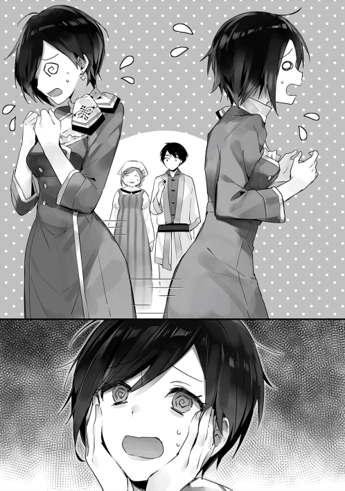
◇
コンコン。
幸助が宿泊している部屋の前で、今日、何度目かの音が響く。ドアをノックをしているのはサラだ。しかし、幸助が部屋にいる気配はない。
「もう、コースケさんったらどこ行ってるんだろ」
昨日から何度も幸助の部屋を訪れた。早朝や夜に時間を変えてみても結果は同じ。
「えっ、もしかして私を置いてどこかに行っちゃったとか？ そんなことはないよね。それとも......」
幸助が水の街に行った時に似た不安感がサラを襲うが、ブンブンと首を振ってそれを否定する。宿の従業員に確認したところ、ちゃんと出入りはしているとのことだった。だから事故には巻き込まれてないはずだ。幸助が帰ってくるのを待とう。サラはそう決める。
昨日は気分転換に宿の周辺をウィンドウショッピングをした。だが、今日はそんな気も起きない。二人一緒であれば知らない土地でも探検気分で楽しいが、一人では寂しかったからだ。やることがない。そして寂しい......。
しかし時が経ち夜になると、寂しさから訪れる不安は次第に怒りへと変換されていく。
「もう、私をほっぽり出して！ 夜になっちゃったよ！」
結局この日も幸助と会うことはできなかった。
◇
（ようやく見通しが立ってきたなぁ。問題の解決はさっさと終わりにして、早く前向きな冷却庫の販売をしたいや）
偽魔石を見つけてから三日が経った。この間、幸助とアリシアは偽魔石の調査に走り回っていた。久しぶりに日が昇っているうちに宿へ帰ることができた幸助は、ベッドに横になりながらここ数日のことを思い返す。
（それにしても、あの国が関わってたとはなぁ）
偽魔石は、隣国フレン王国産だったのだ。フレン王国といえば、幸助が召喚された国でもある。アリシアの話では、王都で流行った商品は、時経たずしてフレン王国から模倣品が流れてくることは多いとのこと。無責任に召喚されたことに加え、模倣品の登場。フレン王国に対する心証が悪くなる幸助。
何はともあれ情報は揃った。一刻も早く公式の見解を出したいところではあるが、幸助たちに魔石が原因と断定する判断はできない。コンロの使用を控えるようにというお触れは出回っているが、情報伝達が確実でないこの世界。徹底されているとは思えない。だから既に出回った偽魔石で事故が起きないとも限らない。ニーナの到着が待たれるところだ。
（ニーナさんが来るまでやれることはないから、久しぶりに王都観光が再開できそうだなぁ。今日もこれから暇だし、サラとおいしい食べ物屋の開拓に行こっかな。まだアロルドさん以上の味に出会ってないんだよなぁ。王都は店も多いし、アリシアさんにお勧めの店、聞いておけばよかった）
コンコンとドアをノックする音で幸助は思考から戻る。ベッドから起き上がりドアを開けると、そこにはサラの姿があった。
「あっ、サラ。ちょうどよかった。これから」
「ちょうどよかったじゃないよ！」
これからご飯に行かない、と言おうとした幸助の言葉を遮り、サラはそう強く言った。
「......サラ。どうしたの？」
「コースケさん、毎日朝早くから夜遅くまで、どこに行ってたの？」
「どこって......事故のあったお客さんの家や市場での調査だけど。サラはどうしてたの？」
「ずっと待ってたんだよ」
「えっ、何を？」
ここ数日間、ずっとアリシアと共に事故原因の調査に奔走していた。待っていたと言われてもピンとこない幸助。
「コースケさんに決まってるでしょ！」
「僕を......？ てことは何、もしかして今日までずっと部屋にいただけ？」
「そうだよ！ コースケさん、朝は早く行っちゃうし夜はノックしても出てくれないんだから」
確かに事故が起きたと分かってから、幸助はずっと朝から晩まで出っ放しであった。事故現場や市場は宿から遠く、移動には時間がかかる。だから朝早くに出て、日が暮れてから帰る日が続いていた。疲れて帰り、バタンキューで寝る毎日を過ごしていたのだ。
「ちょっとちょっと、サラ。僕がいなかったことで怒ってるの？」
「そうだよ！ ずっと魔道具店のことばっかで、私のことほっぽり出してさ」
「ほっぽり出してた訳じゃないんだけどなぁ」
初日こそサラへ店番を頼んではいたが、それから顔すら合わせていない。だが、サラも困っている魔道具店のために、何かしら忙しかったのではないか。幸助はそう思っていたため困惑の表情を浮かべる。
「ほっぽり出してじゃん！ 何で私にもやること言ってくれなかったの！ 何で一緒に連れってくれなかったの！ 私だって魔道具店の力になりたかったのに......」
サラは事故という特殊な状況下で、何をしてよいのか分からなかったようだ。だが幸助自身、怒る客の対応や慣れない土地での調査に神経をすり減らしていた。サラの言葉がどうにも我儘に感じ、声を荒らげる。
「危機的状況だったんだから一から十まで指示なんてできないよ！ 僕だって想定外のことで必死に走ってたんだから」
「............」
無言になるサラ。ヒートアップしてきた幸助は、畳みかけるように言葉を続ける。
「何で自分でできることを探さなかったのさ。暇だったんでしょ。言われなきゃできないの？ そういうのを指示待ち人間っていうんだよ」
ここでサラは俯く。固く握りしめた手は、プルプル震えている。更に幸助が言葉を続けようとした時、サラは声にならないような声でつぶやく。
「バカ......」
「何？ 聞こえない」
「コースケさんのバカ！！！」
そう言うとサラはバタン！ と勢いよくドアを閉め、部屋から出て行った。怒りが収まらない幸助は、部屋備え付けの椅子を蹴っ飛ばす。乾いた音を立て、椅子が机とぶつかる音が部屋に響く。
「くそっ、何だよサラ」
一緒に食事に行く予定が大きく狂った幸助。ベッドへ荒々しく身を投げる。
「まさか何もせずに部屋にいただけとはな。それは百歩譲ったとしても、何なのさ。あの逆切れ」
頭の中に、先ほどのことがグルグルと駆け巡る。自分が必死な時に暇を持て余していたということも気に食わなかったが、それを棚に上げて自分が指示しなかったから何もできなかったと言われたことが許せなかった。イライラした時間だけが経過していく......。
しかし夜も更けると、幸助は自責の念に駆られる。ここ数日間で溜まったストレスを、怒りに任せてサラへぶつけてしまったように感じたからだ。
（言いすぎちゃったかなぁ。しかもあの言葉を言ってしまうとは。僕もまだまだ未熟だな）
幸助はサラリーマン時代に先輩から教えられたことを思い出す。「何でできないの？」とか「言われなきゃできないの？」は社内では禁句だった。そのようなことを言っても相手は萎縮するだけで、物事の解決にはつながらないからだ。個々の能力を見据えて、自発的に行動できる環境を用意してあげることも、上に立つ者の役割であった。知識としては知っていたし、今までも使ったことのなかった言葉だ。疲れていたとはいえ、感情が高ぶりついつい言ってしまったことを幸助は悔やむ。
（明日、サラに謝らなきゃな）
眠れぬまま夜は更けていく。
◇
数日後、ニーナが到着したということで幸助は魔道具店へ向かう。ケンカした日以来、サラとは顔を合わせていない。サラが呼び出しに応じてくれないからだ。魔道具店に着くと、既にニーナは回収した偽魔石を調査しているところだった。テーブルの上には何個もの魔石が置かれている。幸助に気付くと調査の手を止めたニーナは、口を開く。
「フフッ、大変だったようね。いろいろとご苦労様」
「はい。王都観光のはずだったのが、本当にいろいろ大変なことになっちゃいましたよ」
最初の数日こそゆったりと過ごせたが、事故を知ってからは目の回るような日々だった。挙句の果てにはサラとケンカまでしてしまった。それもこれもテーブルに置かれている偽魔石のせいだ。その魔石を睨み付けると幸助は続ける。
「それで、この魔石は偽物で間違いないですか？」
「うん。間違いないね。事故は偽魔石が原因だよ。この大雑把な術式、見てごらん」
そう言うとニーナは幸助へ魔石を見せる。それを凝視すると、電子回路のような、しかしそれとは違う文様が見える。
「こっちはまだマシなんだけど、こっちの魔石見て。ここがおかしいでしょ。たぶんこの魔石は爆発するよ」
幸助の目には何がどう違うのか分からなかったが、取り敢えず頷く。
「これを精巧に真似るなんて土台無理なんだよ。私たちの技術の結晶なんだからね」
「はぁ、そうですか......」
「早速実験をしてみたいとこだけど......ここじゃマズイね。どこか広い場所に行こうか」
幸助とニーナ、アリシアは連れだって河川敷へ繰り出す。王都内にある数少ない広いスペースのある場所だ。爆発すると分かっていたので、実験にはここが最適とニーナが判断した。この川は王都の北西から城の前を通り、南西の市民街へと抜けるように通っている。王都の大切な水源の一つだ。
「うーん、気持ちのいい場所ですね」
透き通った声でアリシアは空を仰ぎ見、そう言う。数日前までとは違い、空は晴れ渡っている。真っ青な空と所々浮かんでいる白い雲が、アリシアの紺色の髪を引き立てている。
「確かに。気持ちいい場所ですね」
そう返す幸助だが、言葉には気持ちがこもっていない。爽やかな表情をしているアリシアとは対照的に、心ここにあらず、という感じである。
「ほら、ぼーっとしてないで、実験するよ。用意はいいかい？」
「あ、はい。大丈夫です！」
幸助たちはコンロから少し離れた場所に移動する。ひもを引っ張るとスイッチが入る仕組みに改造されたコンロに、例の爆発するであろう偽魔石を装着している。
「フフッ。では、スイッチを入れるよ」
ニーナがひもを引っ張る。カチリとスイッチの入った音が聞こえる。その様子を不安げに見守る幸助とアリシア。だが、何も変化がない。スイッチを入れた途端に爆発したと言った客もいた。ちゃんとスイッチが入ってないのか心配する幸助。
「ニーナさん、反応ないですね」
「そう焦らないで。もう少し待っててごらん」
ニーナに窘められ、幸助は再びコンロへ視線を移す。そして観察すること約五分。魔石の色が明るくなり始めたと感じた次の瞬間──。
パァーン！
大きな音を立て、コンロは爆発してしまった。四散する部品。その様子を呆然と見つめる幸助とアリシア。二人とは対象的に、嬉しそうに不敵な笑みを浮かべるニーナ。
「爆発......してしまいましたね」
「あわわわわ、本当に爆発してしまいました」
「フフフフフッ。やっぱりそうでしょ。あの腐った術式じゃこんなもんよ」
コンロを見てみると、確かに以前見た事故品と同様、魔石を中心に大きく破損している。これで事故は偽魔石が原因であることが確定した。この事実を早急に市民へ伝達する必要がある。事故の際は、黙っていてもその事実が広く掲示されていた。今度は魔道具店としてその情報を発信せねばならない。だが、幸助はその術を知らない。
「ニーナさん」
「何だい？」
「町中の掲示板に、魔石のことを貼り出してもらいたいんですが、誰が管理してるのか分かりますか？」
「フフッ。それなら任せておいて。発行所は知ってるから早速行ってくるよ」
「ならばニーナさんにそこはお任せしますね」
さすがは貴族子女。技術だけでなく、このような場合にも頼りになる。取り敢えず今回の爆発事故に関してはこれで解決だ。アリシアはホッとした表情を浮かべている。
だが、幸助の表情は晴れない。これだけ早く偽魔石が登場するということは、相手は商魂たくましいに違いない。だから、将来に渡って偽物による問題が起こらない仕組みを構築する必要がある。それに何より、まだサラとの関係修復ができていなかった。
◇
コンコン。
部屋をノックする音と共に、サラを呼ぶ幸助の声が聞こえてきた。
（コースケさんだ。どうしよ、今日こそ出なきゃ！）
幸助と言い合いになってから何日も経つ。当初こそやり場のない気持ちで心が満たされていたが、今は後悔ばかりが残っている。幸助に対してバカと言ってしまったことを謝りたい。あの日の態度は寂しさの裏返しだったと言い訳したい。できることならばあの直前に戻りたい......。幸助は毎日来てくれている。今日こそは出よう。そして謝ろう。気ばかりは焦るが、体が動かない。
（でも、今更......どうやって......）
間違いなく自分が原因だ。疲れていた幸助のことを全く考えず、あんな言葉を言ってしまったのだから。しかもサラは商売上は見習いの立場だ。近すぎて感覚がずれていたが、幸助はコンサルティングの師匠でもある。それなのにあんな態度を取ってしまった。
幸助だって怒っているかもしれない。いや、あの日は確実に怒っていた。普段は温厚な幸助。サラに対して怒ったことなど一度もなかった。ドアを開けないといけないという理性を体が阻止する。そうこうしているうちに足音が遠ざかる。
（はぁ、今日も仲直りできなかった......。本当にどうしたらいいんだろう）
普段であれば相談相手になってくれる母親もいない。サラはベッドに仰向けになったまま、無機質な天井をぼうっと見つめる。
◇
河川敷で偽魔石の実験を行った翌日。幸助は晴れない気持ちを引きずりつつも、今後の話をするため再び魔道具店を訪れる。店に入ると、店内の雰囲気が明るくなっていると感じる。ぐるっと見渡してみるが、内装など昨日と変わったところは特にない。そんな幸助の姿に気付いたアリシアが、幸助のもとへやって来る。
「コースケさん、こんにちは」
「こんにちは。アリシアさん......。あっ、夏服に衣替えしたんですね」
青を基調とした従業員たちの制服が、夏服になっているのに気付く。紺髪のアリシアには、相変わらずよく似合うデザインだ。
「はい。もうすぐ夏ですからね」
「アリシアさん、よく似合ってますよ」
「うふふ。ありがとうございます」
そう言うとクルッとひと回りして見せるアリシア。フワッとスカートの裾が広がる。
激しい競争を勝ち抜いて射止めた魔道具店の店長という仕事。一時はクビになるどころか、魔道具店が潰れてしまうことすら覚悟していた。問題解決の進展に伴い、心も軽くなっているようだ。店内にはニーナもいた。ちなみにニーナはというと、相変わらずヨレヨレの白衣である。だが、それが似合っていると感じる幸助であった。
「ニーナさん、掲示板の件はどうでした？」
「明日までにはコンロは安全ってことと、偽魔石に注意って記事が貼り出されるよ」
掲示板へ貼り出すだけでは情報の伝達は不十分かもしれない。だが、王都ではこれが一番強力な情報の周知方法と聞いている幸助は、ホッと胸をなでおろす。
「これで今回の事故は一応解決ですね」
「ようやく日常が戻ってくるのですね」
事故の発生以来、アリシアたちはこれまでにないほど忙しく、辛い時間を過ごしてきた。発生直後は、不安に駆られた客たちが怒涛の如く押し寄せてきた。今でも毎日数名は訪れる。その度に「使用は控えるように」と伝えることしかできなかった。「ウチのは大丈夫なのか」「いつから使えるか」といった質問にも答えることができなかったのだ。
だがそれも昨日まで。市民の中にくすぶる魔道具そのものに対する不安感を、すぐに払拭することはできないかもしれない。それでも、「ウチの魔道コンロと魔石は安全です」と胸を張って言うことができる。これは大きな進展だ。
だが、事故により明るみになった問題は、これで完全な解決とは言えない。先ほど幸助は「今回の事故は一応解決」と言った。それは即ち、また同様の事故が起こる可能性があるということだ。幸助は真剣な表情になると、二人へその話題を切り出す。
「ニーナさん、アリシアさん」
「うん？ 何だい」
「どうされたのですか、コースケさん？」
二人は改まった幸助の様子に不思議そうな顔を浮かべ、訊き返す。
「事故の件はこれで一応解決です。ですが、今後もまた偽魔石が流通する可能性があります。今回よりも巧妙に、色まで同じものが出回れば、市民の方々には判別がつきません。それに、魔石に限らず見た目そっくりな偽コンロ本体が出てこないとも限りません」
そもそもの原因は、隣国フレン王国から偽魔石が流入したことだ。この根本的な問題を解決せねば、将来また事故は発生してしまうであろう。幸助の言葉にアリシアの顔は固くなり、ニーナは不敵な笑みを浮かべる。
「確かに......そうですね」
「フフッ、その可能性はあるね。魔石の色なんて、採掘する場所で変わるから」
「だからこれから、この根本的な問題を解消するためのミーティングをしませんか？」
「もちろん」
三人はテーブルに着く。従業員が「冷たいうちにどうぞ」とお茶を持ってきてくれた。カップの表面に細かな水滴がついている。見るからに冷たそうだ。幸助は早速カップを手にすると、喉へ流し込む。
「すごく冷えてますね！」
「コンロみたいに出力を調整できるように改良したんだ。出力を高めれば氷だって作ることもできるのだよ。フフフフッ」
ニーナの眼鏡がキラリと光る。魔道具は日々進化し続けているようだ。一刻も早くこの便利な魔道具も販売したいものである。
「では始めましょうか。今回の問題は、隣国から偽魔石が入ってきたこと。そしてその魔石が使えてしまったことが原因です」
「術式はお粗末なものだったがね」
幸助の言葉にニーナはすかさず突っ込みを入れる。そもそも他の魔石で動いてしまったということが、技術者として許せないようだ。センスのかけらもないなどとブツブツ文句を続けるニーナを無視し、幸助は続ける。
「あとは、魔石が安かったということと、魔道具店が遠いため市場で買わざるを得なかったという事情もありました。そのあたりを踏まえて、今後の改善策を練る必要があります」
幸助の言葉にアリシアはあごに人差し指を当て、何かを考えているようだ。ニーナは相変わらずブツブツと何か言っている。幸助自身もアイディアを考えつつ、二人のどちらかが発言するのを待つ。数秒後、最初に口を開いたのはアリシアだ。
「ニーナさん。術式をもっと高度にして、今度こそ真似されないようにすることは可能でしょうか？」
「............」
「ニーナさーん」
ニーナからは何の反応もない。完全に自分の世界に入ってしまっているようだ。腕を組み、遠い目をしている。困った表情を浮かべるアリシア。見かねた幸助がニーナの目の前で手を上下に振ると、ようやくそれに気付き幸助へ視線を向ける。
「うん、何だい？」
「アリシアさんから、魔石の術式をもっと複雑にできないかという質問がありました」
「フフフフッ。ちょうどそのことを考えていたよ。もちろん今よりも高度に、そしてより複雑な術式を組み込むことは可能だよ」
ニーナの言葉にアリシアの表情はパッと明るくなる。しかし、幸助の表情は変わらない。
「ニーナさん、複雑にすることで魔石の加工時間は変わりますか？」
「そうだねぇ。今の倍くらい加工時間はかかるかな」
「ということは、販売価格も高くなりそうですね。それではコンロの大きな魅力の一つがなくなってしまいます......」
製造コストが高くなるということは、ランニングコストも上がってしまう。コンロの魅力の一つは、薪とほとんど変わらないランニングコストだ。下がるならともかく、上がる可能性があるならばそれは避けたい。
「しかも今の術式が曲がりなりにも真似できたということは、いたちごっこに陥る可能性もありますし......」
「それは確かに可能性がありそうですね」
「うっ......。今度こそは......。今度こそは......」
術式を特許で守ることもできない。今の術式を真似できたのだから、新しい術式も真似される可能性が高い。ニーナは悔しそうな顔をしているが、現実はそうだ。
まだミーティングは始まったばかり。他に良いアイディアが出るかもしれない。そう思った幸助は一旦この案は保留にして、自分の考えたアイディアを提案する。
「コンロに安全装置をつけることは可能ですか？ 偽魔石を検知して異常があれば停止するような仕組みです」
「それは無理だね。魔力はちゃんと流れてるから異常は検知できないし、そもそも爆発したのは出来の悪い魔石そのものだよ」
「そうですか......」
ニーナにあっさりとアイディアを否定され、無言になる幸助。確かに爆発したのは魔石であってコンロではない。ニーナでも無理と言うならば検知はできないのであろう。それからもいろいろとアイディアは出るのだが、有効なものは出てこなかった。
領主権限で偽物を取り締まるというアイディアは、王都では効力を発揮できないのでボツ。最初から大量の魔石を内蔵し、交換は魔道具店でないとできないというのは不便すぎてボツ。魔石を使わず使用者本人の魔力を注ぎ込むのは、現実的でないのでボツ。魔石でなく幸助になじみ深いガスコンロにするのもボツ。ボツになったアイディアばかりが山のように積み重なる。
「はぁ、なかなか良いアイディアは出てきませんね......」
ミーティングを始めてから二時間が経過した。ぬるくなったお茶を流し込むと、幸助は大きなため息をつく。技術的な解決をすればコストがかかり、運用面での解決は実現の可能性が低いことばかり。いずれも完全に偽魔石の使用を防止することはできない。
（困ったなぁ。今後よその魔道具で事故が起きても、アヴィーラの魔道具は安全って示したいし。もっと決定的な何かが欲しいよなぁ。コストがかからず、なおかつ強力な効果のある何かが。だいたい偽物なんて作る国があるからいけないんだよ。まるで日本とお隣の国との関係みたいだ。偽物はすぐに出てくるし爆発はするし。でもそんな人たちもお金があれば日本のブランドをこぞって買ってたし......。うん？）
ここで幸助はあることに気付く。ブランドだ。各メーカーはもちろんのこと、日本という国にも強力なブランド力があった。日本製といえば高品質という言葉がすぐに結びつくくらい強いものだ。ここ数日固まっていた幸助の脳みそが俄かに活性化する。もしかしたらこれで一気に解決できるかもしれない。この世界ならではの強力なブランドを構築できる可能性がある。そう考えた幸助は声を上げる。
「そうだ！ もしも可能でしたら......ですが、領主であり事業主でもあるアヴィーラ伯爵家の紋章を、魔石と魔道具本体に刻むことは可能でしょうか？」
鷲をモチーフにデザインされたアヴィーラ家の紋章。幸助のアイディアは、それをアヴィーラ製の魔道具および魔石のすべてに刻み込むというものだ。
「それは領主様に聞いてみないと分からないが、そんなの意味があるのかい？」
「はい。大きな意味があります」
アヴィーラ伯爵は相当の資金と労力を投入し、事業を軌道に乗せた。しかも日本でのコンサルティング知識を持っている幸助の力を借りて、ようやくである。だから魔道具事業は新規参入障壁が高い事業といえよう。だが、成功事例は公然の事実となっている。間違いなく追従者は出てくるはずだ。そうなるとやはり今のうちに第一人者として、「高品質」「最先端」「安全」といったブランドイメージを構築しておくのが良い。ブランド力が高まれば多少高くても売れるし、「アヴィーラ印だから」ということが購入動機にもつながる。
ブランドはもともと、牧場で自分の所有する家畜を見分けるため押した焼印が始まりと言われている。今回提案したのはそれに近い原始的なブランディングだが、それだけでも効果は大きいと幸助は考える。なぜなら、この世界ならではの理由が隠されているからだ。
「貴族の紋章を勝手に使ったら、牢屋送りは確実ですよね？」
その瞬間、ニーナとアリシアの表情は一変する。この世界での貴族の紋章の扱いは重い。伯爵家のものを勝手に使おうものならば重罪は免れない。だからこそアヴィーラ家の紋章入りの魔道具は絶対に真似できないことになる。だが、それを商品に使うなど前代未聞だ。この世界の慣例にとらわれない幸助だからこそ発想できたといえよう。
「フフフッ、相変わらず面白いことを考えるね」
「貴族様の紋章を製品に刻むだなんて、誰も思いつきませんよ」
「ありがとうございます。欲を言うならば、術式そのものが紋章の形になりませんか？ そうすれば魔石も絶対に真似できないですよね。あ、もちろん製造コストは据え置きで」
明るい場所で魔石を見ると、表面ではなく少し奥に術式の文様が見て取れる。どう加工しているのか分からないのだが、その文様自体が術式になれば完全に真似は不可能だ。
「伝統ある紋章を簡単に使わせてくれるとは思えないが、早速領主様に掛け合って実現してみせようじゃないか。フフフフフッ」
「では方針も決まりましたし、今日はこんなところですね」
片づけて宿へ帰ろう。幸助がそう思った時、アリシアが徐に幸助へ質問する。
「そういえばコースケさん。サラさんを最近お見かけしませんが、お元気ですか？」
「あ、サラはですね、元気だと思うんですが......いろいろありまして」
言い淀む幸助。まだサラとの関係は修復できていない。それを察したのか、ニーナが会話に割り込む。
「フフッ、ここ最近様子が変だったし、ケンカでもしちゃったのかい？」
「ご、ご名答です......」
「原因は何だったんだい？」
よかったら聞こうじゃないかとニーナは続ける。幸助は一瞬とまどったものの、話せば少しは気がまぎれるかと思いニーナへざっと経緯を話す。
「フフッ、それは責任を感じるね」
「いや、ニーナさんは全然悪くないですから......」
「あのね、良い物があるよ」
「良い物って何ですか？」
ニーナは自分のカバンから小さな箱を取り出す。お洒落な彫刻が施された木の箱だ。
「王都で行列のできる人気店のクッキー。おいしいよ」
「......？」
きょとんとする幸助に対し、ニーナは更に続ける。
「フフッ。あげるから、これで仲直りしなよ」
「あっ、そういうことですか。ありがとうございます！」
◇
コンコン。
宿に帰った幸助はサラの部屋をノックする。だが反応はない。まだ怒ってるのかもしれないと不安になる幸助。
「サラ。幸助だよ」
呼びかけてみるが、様子は今までと同じだ。部屋からは物音一つ聞こえない。もしかしたら食事などで出ている可能性はある。いつもであればこれで引き下がっていたが、今回は違う。
コンコン。
再度ドアをノックする。今度はニーナからもらったクッキーのことを言ってみる。
「王都で人気の甘いお菓子、持ってきたよ。一緒に食べない？」
部屋の中から人が動く音がする。ガサガサという音を立てること数十秒。
ガチャリ。
ドアが少しだけ開き、狭い隙間からサラの顔が覗く。ようやくドアを開けてくれた。緊張のせいか、久しぶりのその姿に幸助の胸の鼓動は高鳴る。
「お菓子って、何？」
「クッキーだよ。王都で行列ができるくらい人気店の」
ほら、と言いながら幸助はその箱を見せる。サラの視線はその箱に注がれる。
「あの時は僕も言いすぎちゃったし、仲直りしたいなって思って......。一緒に食べない？」
少し間が空く。サラは幸助の顔をじーっと見ると、ゆっくりと口を開く。
「......うん」
ドアを大きく開け、サラは幸助を部屋へ招き入れる仕草をする。促されるがままサラの部屋へ入る幸助。小さな丸テーブルにクッキーを置くと、サラと向き合う。
「サラ、この前はごめんね」
「ううん。私の方こそゴメンナサイ」
サラの口からも謝罪の言葉が出てきた。これで和解成立だ。全身から緊張感が抜け落ちると共に、ホッと胸をなでおろす幸助。
「あのね。あの時、びっくりしちゃって」
「びっくり？」
「うん。コースケさんでも怒ることがあるんだなって」
「あぁ、確かにサラの前では初めてだったかも」
サラの前でなくても、感情に任せて声を上げることなどほとんどなかった。直前の仕事によるストレス、そして幸助自身の未熟さなど複合的な要素が絡まり合った結果である。
「でね。反射的にコースケさんに『バカ』なんて言っちゃったから。コースケさんが大変だったなんてこと全然考えずに。だから、どんな顔で会えばいいか分からなくなっちゃって。それで......」
「そっか。それでなかなか会ってくれなかったんだ」
黙って頷くサラ。そして下を向きながら口を開く。
「私も謝りに行こうとも思ったんだけどきっかけが掴めなくて。コースケさん、何回も来てくれたでしょ。それなのにずっと応えなかったからもう嫌われてるかもしれないって思ったの。だから今日も会いにくいなぁ。怒られるんじゃないかなって思ったんだけど......」
「甘いお菓子の誘惑には勝てなかった訳だ」
「ち、違うよ！」サラはバッと顔を上げると両手をぶんぶんと振る。
「あはは。冗談だよ」
もう！ と言いながらもサラの顔は笑顔だ。幸助からも自然と笑みがこぼれる。
「ねっ、仲直りもしたんだし、早くこのクッキー、食べよ！」
「うん。そうしよう」
サラはいつものサラだった。幸助にとってサラの存在は大きい。この世界での自分自身の存在価値を認められる原点となっているのだから。そのことを改めて感じる幸助。
「うわぁー、おいしそう！」
中には、すべて違う色、形のクッキーが十数枚入っていた。濃い色薄い色。四角いもの丸いもの。どれもおいしそうで目移りしそうである。サラは早速その中の一つを手に取ると口に放り込む。
「うーん。おいしい！」
さすがは王都の名店。普段、凄腕アロルドのスイーツを食べているサラでも、おいしいと感じられるものだったようだ。
「あっ、これもおいしそう！」
そう言いながら別なクッキーを手に取る。赤い果実のジャムらしきものが載ったものだ。
「あっ、それ僕が狙ってたのに」
「そうなの？ じゃあ、半分ずつね」
そう言うとパキッとクッキーを割るサラ。かなり歪に、三対一くらいの大きさでクッキーが分裂した。その片方を幸助へ渡す。サラの手元に残っているのは、当然大きな方だ。
「うん。おいしいや！」
「でしょ！ おいしいね。でも......せっかくだからおいしいお茶と一緒に食べたいよね」
「確かに。そしたら残りは取っておいてまた後から食べよ」
「うん！」
幸助はクッキーのふたを閉じる。そこで壁際のデスクへ視線を移すと、あるものに気付く。そこには、以前サラが幸助の指導のもと作成した冷却庫の販売計画書が置いてあった。側にはペンが置かれている。何やら編集しているようだ。幸助の視線に気付いたようでサラは口を開く。
「あのね、冷却庫の新しい販売計画を考えてたんだ。コンロの事故があったからやり方を変えなきゃなと思って」
元々は潤沢な予算に合わせて、派手に宣伝やイベントをする予定だった冷却庫の販売プラン。だが、コンロの事故があった今、そのような切り口は市民の反感を生むかもしれない。掲示板に貼り出された内容が周知されるのには時間がかかるはず。だから幸助もそれは考え直さないといけないと思っていた。愛弟子の成長っぷりに頬が緩む。
「へぇ、偉いじゃないか！ やっぱりサラはできる子だよ」
久しぶりにサラの頭をポンポンとする幸助。サラも、えへへとご満悦のようだ。
「でもね、コースケさん」
「うん？ 何？」
「ここまでは考えたんだけど、この先がどうしたらいいか分からないんだよなぁ」
「どれどれ」
計画書を覗き込む幸助。それから二人は仲睦まじく新しい計画を練るのだった。
◇
翌日の午後。幸助は再び魔道具店を訪れる。もちろんサラも一緒だ。
「こんにちはー」
店内にはニーナとアリシアがいた。ニーナは幸助の姿を認めると側に寄り、小声で話しかける。
（その様子だと、うまくいったみたいだね）
（クッキー、効果てきめんでした。ありがとうございます）
幸助も小声でニーナへそう返す。ニーナの機転が利かなければ、まだここにはいなかったはずのサラは、きょとんと二人の姿を眺めている。ネタバレするような野暮なことはしまいとばかり、ニーナは話題を変える。
「そうそう。紋章の件、使ってもいいって」
「えっ、もう領主様に話をつけてきたんですか？」
ここからアヴィーラ伯爵領までは片道一週間かかる。電話のないこの世界。どうやってこんな短期間で話をつけてきたのか。伝書鳩ならぬ伝書魔物でもいるのかと推察する幸助。
「うん？ あぁ、領主様は今、王都にお見えなんだよ」
「あっ、そういうことでしたか」
至極簡単な理由であった。ガクッと肩を落とす幸助。伯爵ともなれば王都での仕事も多い。アヴィーラ伯爵領の領主であるアルフレッドも例外に漏れず王都に屋敷を所有し、一年の半分はここで過ごしている。
「それにしても、よくあっさりと許可してくれましたね」
「フフッ、魔道具事業は領主様の人生をかけてるからね。これで偽物を排除できるならば安いものだってさ」
「そんなに気合が入ってるんですか......」
確かにアルフレッドは個人的にも魔道具好きだ。騎士団の武器調達にしわ寄せが行くくらい資金も投下していた。人生をかけていると聞き、責任重大なことをしているのだと改めて身を引き締める。
「そういう訳で私は新しい術式の開発に戻るから、後はよろしくね」
「あ、はい。いろいろとありがとうございました！」
ニーナは新しい術式の開発がしたく、うずうずしているようだ。幸助たちに見送られ、そそくさと魔道具店を後にする。
「ニーナさんのおかげでとんとん拍子で話が進みましたね、アリシアさん」
「あっという間に物事が進んでしまいましたね。感謝してもしきれないくらいです。もちろん、コースケさんにも感謝です。私たちだけでは偽魔石までたどり着けませんでしたから」
そう言うとアリシアは幸助に頭を下げる。幸助は、いえいえと謙遜しつつも、ここ一週間の間に起きためまぐるしい日々を思い返す。
事故があったと知ってから顧客の家、そして市場へと走り回った数日間。待ちに待ったニーナの到着、そして河原での実験。その間に起きたサラとの言い合い、そして仲直り......。マイナスになった状況を元に戻すのはこれでお終いだ。ようやく前に進むことができる。お楽しみはこれからだ。幸助は力強く切り出す。
「さて、今後の話をしましょう。冷却庫の販売について、サラといろいろ考えてきました」
「はい。是非お願いします」
立ち話していた三人はテーブルへと場所を移す。幸助の隣にサラ、向かいにアリシアがかける。
「アリシアさん、お店はもう通常営業に戻りました？」
そう言うと幸助は店内の陳列棚に視線を移す。そこには既に本日のテーマである冷却庫が陳列されていた。以前幸助が説明した通り、入り口近くに大型のものが。そして奥にひっそりと小型のものが置かれている。最初に幸助が訪れた時に言った、アンカリングの効果を活かすための陳列が実践されている。
「はい。掲示板には偽魔石のことが掲示されました。ですから本日より販売を再開します。ただ、ニーナさんからの指示で、領主様の紋章入り魔道具ができるまでは納品は控えることになりました」
「ということは、実演しかできないということですか？」
「はい。残念ながら......」
寂しそうに目を伏せるアリシア。紋章入りの魔道具が完成するまでどれだけかかるか分からない。ニーナが戻り、即座に完成させたとしても二週間はかかる。
ここで幸助とサラは顔を見合わす。二人とも、もともと大々的な販売はできないと考えていた。だから用意していた計画も、当面はデモンストレーションに徹するという内容だった。自分たちの予測と店の方針が一致したことでニコリと笑顔を作る。
「......？ お二人とも、どうされましたか？」アリシアは交互に二人の顔を見る。
「実は、この状況を見越して販売計画を立ててきたんです」
「えっ、そうなのですね。納品ができない中、どのようなことができるのでしょう？」
「はい、いろいろあるのですが、詳しくはサラから説明があります」
そう言うと幸助はサラの背中をポンとたたき、説明を促す。今回はサラの教育も兼ねている。だからアリシアへプレゼンするのは幸助ではなく、サラだ。
サラはカバンから計画書を取り出すと、アリシアへ向ける。大きめの紙一枚でシンプルにまとめられた計画書だ。大きく息を吸い、ふーっと吐き出すとサラは始める。
「え......えっとでしゅね......」
初っ端から噛んだ。緊張しているようだ。仕切りなおしてサラは再び説明を始める。
「えっとですね、冷却庫もコンロと同じで体験してもらうのが一番です」
それからサラは計画の概要を一気に説明する。ただの会話と、企画を説明するのでは勝手が違う。時々言葉に詰まったり、同じことを何回も話したりするサラ。幸助は自分にもこんな時期があったなぁと懐かしく思い返す。おおよその内容は実演販売と変わらない。ただし、コンロの場合はコストが薪に置き換えられたが冷却庫はそうはいかない。だからまずは富裕層を相手に、ゆったりとした体験会を催すといった内容だ。
その富裕層も、既にコンロを購入しており顔の分かる客に限定。コンロの安全性についての話も兼ねる予定だ。だからイベントとしては、こじんまりとしたものになる。
ちなみに貴族に対しては、コンロの時と変わらず出入りの商人を仲介するため、今回のプランからは外されている。
「──という訳で、『モノ』ではなく『体験』を売るんです」
サラのプレゼンは終了した。最後の説明が少し分かりにくかったため、幸助が補足説明を入れる。
「コンロの時もそうでした。お客さんは『コンロを買うことにより、生活が便利になる』という体験を買ってるんです。だから冷却庫も、それがあることで得られる生活をイメージしてもらえるよう、ここで体験してもらうんです」
もちろんコンロそのものが目当ての人はいましたが、と幸助は続ける。魔道具オタクや新し物好きの場合はそうだ。だが購入者の多くの台所を預かる人は、この「体験」を買っている。
「なるほど。お客様を招待し、体験会を開催し、その場で注文をいただくというプランですね」
「はい。まとめるとそういうことになります」
「では、具体的に体験していただく内容や、予約についての手順を決めなければなりませんね」
そのあたりの実務については、さすがは経験者のアリシア。実家での商売経験が活かされている。その後三人は数時間にわたり意見を交わし、ミーティングは終了となった。
「では早速私たちは準備に入ります」
「予約をたくさん取り付けられるよう頑張りましょう！」
「はい!!」
◇
それから一週間後。前日に雨が降り、じっとりとした初夏の朝。幸助は果実水を手に魔道具店へ向かう。朝とはいえ、少し歩くだけで額に汗が浮かぶ気温だ。
「体験会にはもってこいの天気だな」
幸助はそうつぶやきながら袖で額の汗を拭う。雲の切れ目から太陽の光が差してきた。昼過ぎには快晴になりそうである。時間が経つにつれて不快指数は上昇するであろう。
「おはようございまーす」
魔道具店に入ると、心なしかひんやりとした空気が幸助を出迎える。今日は魔道冷却庫の体験会の日。店内では、従業員たち数名がせっせと準備をしている。お洒落ではあったが無機質にも感じられた空間には、観葉植物が置かれることで柔らかな雰囲気を醸し出している。そして、それら観葉植物の葉が室内にもかかわらず優しく揺れ続けている。
実は、ここに幸助のこだわりが隠されている。幸助が初めて魔道具店へ行った際、風魔法を使う魔道具をニーナに見せてもらったことがある。全く実用的ではなく、幸助にガラクタ扱いされた残念な魔道具だ。それが、資金が潤沢になったことで研究が再開。扇風機のように継続的に風を送り出せるまでになった。相変わらず魔石の消耗は激しい。だから製品化までは程遠い。だが、この体験会にはお誂え向きだ。
その名前もない魔道具の前に、冷却庫五台をフル稼働させて作った氷を設置。冷風扇のようにしている。冷房のようにしっかりとは冷えないが、氷越しの風に当たれば涼しさを感じられる。氷には香草のエキスが混ざっているため、爽やかな香りも漂う。
体験会のテーマは「高原の夏」。ここマドリー王国にも、貴族が別荘を構えるような避暑地がある。その避暑地のような時間を店内で体験してもらおうという企画だ。
爽やかな緑とほんのりと涼しい風。それに冷たい飲み物の提供。短い期間で用意できたことは少なかったが、それでも普段とは違う演出ができている。ちなみに幸助は風鈴も提案したのだが、それは誰からの理解も得られず却下となってしまった。
「あ、コースケさん！」
買ってきた果実水をテーブルへ置いたところで、サラが奥からパタパタと駆け寄ってきた。今日はサラも魔道具店の従業員の一人だ。青い爽やかな制服に身を包んでいる。
「おはようサラ。制服、似合ってるよ」
「ほんと？ ありがと！」
サラはスカートの裾をつまむと、ちょこんとポーズを取る。サラの碧い目と制服の青がマッチしている。同じ仕事着でもレストランの給仕服とは違う姿に、新鮮味を感じる幸助。
「コースケさん、おはようございます」
「おはようございますアリシアさん。準備万端ですね」
「はい。ですが......どれだけの方が来てくださるか、不安で仕方ありません」
「しっかり準備してきましたから大丈夫ですよ」
「そうだといいのですが......。これでまた失敗でもしたらどうしようと、心配で夜も寝られなかったのです」
「結果はふたを開けてみないと分かりませんからね。うまくいくと信じて準備しましょう」
「......はい。そうですね！」
アリシアたちは近所の上得意客を戸別訪問し、事故で心配をかけたお詫びと合わせ体験会の案内をした。訪問先の件数はおよそ百軒。分母としてはかなり少ない。だが、ゆったりとした体験会というイベントの性質上、混んでもいけないのでこの数となった。その結果、「絶対に行く」という約束も何件か取り付けている。だから坊主になることはないと予想している。さて、幸助も準備に取り掛かろう。そう考えた時、店のドアが開く。
「もう始まってるかしら？」
「カルラさんにセリノさん。来てくださったのですね。ありがとうございます！」
本日初めての来客だ。開店時刻より少し早いが、店員たち全員で客を迎える。
「こちらへどうぞ」
アリシアがテーブルへ客を案内する。着席した客は何やらキョロキョロと店内を見回している。そして手をあちこちへかざす。
「何だか涼しいわね」
「はい。冷却庫で作った氷に風を送っております」
「まぁ、氷を作るくらい冷やせるのね」
「気持ちいいな」
二人の客は顔を見合わせながら言葉を交わす。掴みはオッケーのようだ。
「冷たいおしぼりをどうぞ」
おしぼりを渡したのは給仕のベテラン、サラだ。青い制服の上から白いエプロンをしている。
「まあ、よく冷えてること。気持ちいいわね、あなた」
「ああ」
男性客はお絞りで手を拭くと、今度は顔を拭きだした。おしぼりを置くと、さっぱりとした顔をしている。気持ちよかったようで何よりだ。
「お飲み物のサービスもあります。果実水かお茶、どちらがよろしいですか？」
二人とも注文は果実水だった。注文を受けるとサラは客から見える場所で冷却庫から細かく砕かれた氷を取り出しグラスへ入れ、果実水を注ぐ。これも計画したデモンストレーションの一つだ。二人の客は興味深そうにその様子を見ている。
「お待たせしました。果実水です」
サラはそれぞれの前に手作りのコースターを置くと、その上にグラスを置く。奮発して用意したガラスでできたグラスに氷が当たり、カランと涼しげな音を立てる。
「ありがとう。早速いただくわね」
女性客はグラスの中をしげしげと眺め、果実水を口に含む。その途端、驚きの表情が広がる。
「暑い日に冷たい飲み物が飲めるなんて、素敵ね！」
果実水は持ってきたばかりだが、ちゃんと氷で冷えていたようだ。一方、男性客のグラスは既に空になっていた。その様子を遠巻きに見ていた幸助は手ごたえを感じる。ちなみに幸助の役割は裏方だ。すぐに切れる送風機の魔石を取り換えたり、溶けた氷を交換したりと意外に忙しい。せっせと作業しつつも、来店客との会話に耳を傾けることは忘れない。
「便利な魔道具だなぁ」
男性客はそう言うと席を立ち、興味深そうに冷却庫を前から、横から、後ろから眺める。女性客もその後に続く。
「ドアも開けてみてください。手前に引くだけで開きますので」
男性客はその言葉を聞くとドアを開ける。中の様子が見えると同時に、冷気が男性客を撫ぜる。この冷却庫は氷を保存しているため、出力は最強だ。
「すごいな......これは」
冷却庫からこぼれ出した冷気は周りの空気を冷やし白くなり、床へと降りていく。男性客はその冷気を両手で掬いながら、氷の詰まった冷却庫の中を眺める。
「これは、いくらするんだ？」
「金貨五枚です」。アリシアは笑顔で答える。
金貨五枚は王都での二ヶ月分の生活費に匹敵する。富裕層であるこの客であれば一ヶ月分かもしれない。だがそれにしてもポンと買うには抵抗のある金額だ。
「贅沢のために金貨五枚は使えないよなぁ」
その意見には女性客も同意のようで、そうねと相槌を打つ。やはり高額品。欲しいと思ってもらえても、買えるかどうかの壁は決して低くないようだ。
「それでしたらこちらの小さな冷却庫もございます」
「えっ、小さいのもあるの？」
「はい！」
そう言うとアリシアは、シナリオ通りに店舗奥に設置している小さな冷却庫へ客を案内する。缶ビールであれば六本くらいが入るサイズだ。
「小さいので冷却できる量は減ってしまうのですが、こちらでしたら金貨二枚です」
使う魔石の量も減りますよとアリシアは続ける。その言葉に男性客の目が少年のように輝きだす。
「小さいけど、ちゃんと冷えるのか？」
「もちろんです。お茶を冷やすのも氷を作るのもお任せください」
「おい、これなら買ってもいいんじゃないか？」
財布のひもは女性客が握っているようだ。男性客は必死に冷却庫があると便利になるであろうことを並べたてる。
「これであなたが仕事を頑張れるなら安い投資......なのかな。でも金貨二枚よねぇ」
製品としては気に入ってもらえたが、まだ決め手に欠けるようだ。可能ならば幸先の良いスタートを切りたい。アリシアは「今日決めるべき理由」を客へ説明する。
「本日決めていただけましたら、魔石をサービスで三個お付けしますよ」
「えっ、そうなの？ 主人の様子だと今日決めなくてもいずれ買ってしまいそうだから............それなら買うわ」
「ありがとうございます！」
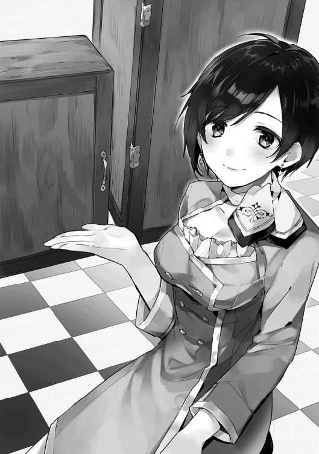
その後もパラパラと客の来店は続いた。体験会の案内をした人数は少なかったが、そもそも今まで信頼関係が構築できていた客を中心に案内したのが功を奏したようだ。
最終的にこの日の来店客は二十名。大型の冷却庫一台に、小型の冷却庫三台の予約を取ることができた。かなりの成約率である。今日決められなかった客も、いずれは注文してくれる可能性がある。体験会は大成功といってよいだろう。
◇
「かんぱーい！」
グラスのエールを一気に流し込む幸助。これもキンキンに冷えてたらなと思いつつも、飲み慣れた味に笑顔を浮かべる。幸助とサラ、そしてアリシアたち従業員は、王都のレストランに来ている。もちろん体験会成功の打ち上げのためだ。店はアリシアのお勧めという店に決めた。テーブルには色とりどりの料理が並んでいる。幸助が普段行くことのない格式が高めのレストランのため、器や盛り付けは小洒落ている。
だが、メニューはサラダに肉を焼いたものやピザなど、アヴィーラ伯爵領と大きな違いはない。幸助は空になったグラスをゴトリと置くと、アリシアへ話しかける。
「体験会、うまくいきましたね」
「はい。こんなに喜んでくださるとは思いもしませんでした。コースケさんとサラさんの考えてくださった計画あってこそです」
体験会のテーマである「避暑地の夏」はすべての来店客が楽しんでくれた。やはり夏なのに涼しいという体験は刺激的であったようだ。夏は始まったばかり。定期的に行えば、手堅く注文をもらえそうである。
「アリシアさんが、開店から今までお客さんと良い関係を築いてきたからこそです」
「そうなのですか？」
「はい。でなればこれだけのお客さんは来てくれませんよ」
「うふふ。ありがとうございます」
もちろん事故後の初動が悪く、信頼を失った客もいる。だがここは労いの場。暗くなりそうな話題は一切口にしない。
「サラもよく頑張ったよ。一日立ちっぱなしで疲れてない？」
「コースケさんとは違うもん！」
「そ、そうだったね......。体力がないのは僕の方だったよ」
試食販売の時もそうだったが、先にバテるのは必ず幸助の方だった。これでは労いになっていない。
「でもやっぱりサラは接客のプロだね。昼過ぎに混んだ時も、サラがいたからスムーズに回せたと思うよ」
「ありがと！」
それから幸助は他の従業員たちにも言葉をかける。ここ数週間、苦楽を共にした仲だ。話題はいくらでも出てくる。
それからワイワイと宴を楽しむこと二時間。あっという間に楽しい時は過ぎていった。皿の上にまだ料理が残っていたが、皆、満腹のようだ。幸助はここで打ち上げを締めることにする。
レストランの外に出る幸助たち。昼間の蒸し暑さはだいぶ和らいでいる。もう日が暮れたというのに、人の往来が絶えない。至る所にかがり火が焚かれ、通りを淡く照らしている。
「それでは、私たちはこれで失礼いたします。いろいろお世話になり、ありがとうございました」
「こちらこそ、ありがとうございました」
お互いに軽く頭を下げると、アリシアたちは幸助に背を向け歩き出す。徐々に小さくなる背中を見送りつつ、幸助は王都で体験した様々な出来事を思い返す。特に印象深かったのは、やはり魔石の爆発事故だ。事故の対応はまずまずだったが、自分のことばかり必死になりサラのことを全く考えていなかった。マーケティングの経験は豊富だったが、人のマネジメントは本を読んだ知識のみで、経験がなかった。経験不足が故の過ちだ。だが、失敗したと認識できたのならば、次に生かせばよい。そうやって人は成長していくものだ。
サラの教育を通して自身の成長も感じる幸助。王都での経験がこれからどのような出来事につながるかは分からない。だが、この経験が無駄になることは決してないだろう。
アリシアたちの姿が見えなくなると、幸助は隣にいるサラへ声をかける。
「さて、僕たちも帰ろっか」
「うん！」
肩を並べて歩き出す幸助とサラ。足取りは軽やかだ。満天の星が二人を優しく見守っている。
◇
「ありがとうございました」
冷却庫の体験会から数週間後。アリシアは王都に届いた量産品を、最初の客へ納品し終えると、ふぅと息とつく。
「ようやく納品ができました」
アリシアは魔道具店に戻ると店舗裏の倉庫で冷たいお茶を飲み一息つく。
通常の配達であれば、専門の配達員だけで済ませるのだが、今日訪れた先は上得意客。アリシアも挨拶がてら同行したのだった。
「新しい魔石も無事に届きましたし、これでコンロの納品も再開できます」
そうつぶやきながらアリシアは、たくさん並べられた魔石を眺める。
魔石にはうっすらとアヴィーラ家の紋章が認められる。術式の都合か、実際の紋章と比べるとややシンプルになっている。だが、誰が見てもアヴィーラ家のものと分かる。
魔石は、術式をアヴィーラ家の紋章の形にするため、加工の手間が増えてしまった。それは即ち原価が上がってしまったということだ。だが、売価には転嫁することがないよう幸助から釘を刺されていた。だから価格は据え置きだ。それにもかかわらず、使用済みの魔石を十個魔道具店へ持ち込むと、新品の魔石一個と交換するサービスを始めた。
なぜ原価が上がったのにもかかわらず、魔石をプレゼントするのか。それは、再生品のめどが立ったからだ。ニーナの話では、魔石の術式を加工するよりも、使用済みの魔石に魔力を充填する方が遥かに楽らしい。回収を促進して全体の原価を下げていこうという算段だ。魔道コンロを新魔石へ対応させるための部品交換もしなければならない。王都での代理店を募集する話も進行中だ。
「さて、やることはたくさん。頑張らなきゃ」
両手を胸の前でぐっと握ると、アリシアは再び仕事に戻る。
かいぜん！用語集 第７章
アンカリング【あんかりんぐ】
最初に体験したことがアンカー（船の錨）のように思考の範囲を制限することから生まれた言葉。アンカリングという言葉自体は、様々な場面で使われている。本章では、価格の基準が全くない新製品に出合った時、最初に見た価格がそれ以降の判断をする場合の基準となる、という意味で使用。
普通サイズの冷却庫が金貨五枚に対し、小型ならば金貨二枚。金貨二枚でも高いのだが、先に金貨五枚を提示されることで、購入を検討する際に「金貨五枚と比べると安いから」という判断に傾く。
言われなきゃできないの？【いわれなきゃできないの？】
この言葉に対する反論は、「何で言われなくてもできるような環境を用意してあげなかったの？」だ。指示待ち人間が増えたと感じているならば、その人たちでもちゃんと仕事がこなせるよう環境を整備してあげるのも、上に立つ人の役割。
ブランディング【ぶらんでぃんぐ】
企業や製品または人について、顧客にとっての価値を高めていくこと。ブランド価値が高くなれば、同じカテゴリの競合他社に対し優位に立つことができる。幸助は貴族であるアヴィーラ家の紋章を製品に導入することで、アヴィーラ産の魔道具は「高品質」「最先端」「安全」といったイメージを高めようとした。
参入障壁【さんにゅうしょうへき】
同じ事業へ新規参入する際に立ちはだかる壁のこと。高ければ高いほど、競合が出にくい。たとえば、一から自動車を製造するメーカーを立ち上げるのは難しい。だから参入障壁が高いといえる。
体験を売る【たいけん・を・うる】
「炊事をする」というニーズは、薪の窯があれば満たすことができる。だが、魔道コンロがあればメンテナンスが楽になり、炊事が便利になる。冷却庫があれば夏でも涼しい思いができる。顧客は商品そのものではなく、商品を買ったことにより得られる体験を買っている。もちろんその度合いは商品によりけりだが、第５章で説明した「ウォンツ」の高い商品の場合、この傾向が強い。
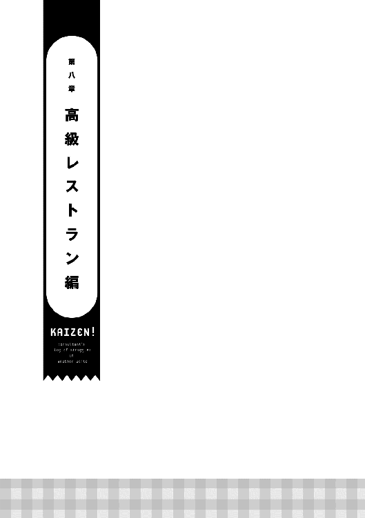
「もう、どうして誰も分かってくれないの!!」
誰もいない店内に、女性の悲痛な声が響いた。
ここは王都のとあるレストラン。渋みの出た一枚板のテーブル。彫刻が施された工芸品のような椅子。そして壁に掛けられた数々の絵画。それらがこの店の格式を物語っている。
女性の名はレミィ。このレストランのオーナーだ。営業が終了し、従業員たちが帰ったところでレミィのイライラは最高潮に達した。
「言うことは聞いてくれないし、すぐに楽しようとするし。何で決められたことができないの！ 何で？ どうして？」
レミィの問いに答える者はいない。百席はあろうかという広い店内は、静寂に包まれたままだ。レミィは力なく客席の一つに腰かけると、再び愚痴をこぼす。
「もう、みんなバカばっか！ バカバカバカ............バカ」
はぁと大きなため息をつく。ゆらゆらと揺れているランプの灯まで自分をあざ笑っているように見える。
「何のためにやって来たんだろ......」
おいしいと王都でも評判だったこの店を、レミィが継いだのは今から五年前。二十歳の時だ。経営の経験はなかったが、店を継ぐことになったのは理由がある。
それまで店を経営していたのはレミィの祖父だ。料理の腕はなかったものの、その人柄で有能な料理人や客からも慕われていた。オーナーでありながら給仕長も務め、一代にして「名店」と言われるまでに育て上げた立役者である。しかし、寄る年波には勝てなかった。足腰を患い出勤もままならなくなったため、一線を退くことになった。
本来であればレミィの父が店を継ぐのがこの国の慣例だ。だが、父は同じ場所に留まるのは性に合わないと、世界中を放浪しつつ行商人をしている。今、どこにいるのかも分からない。必然的に長女であるレミィがその大役を担うことになったのだ。
レミィは祖父からアドバイスをもらいつつ、張り切って店の経営に取り組んだ。だが経験のないレミィは、祖父のようにうまく立ちふるまうことができなかった。そして客は、今までとの違いを敏感に感じ取っていた。それが「売上」という数字に少しずつ反映されてきたのだ。
このままではいけない。焦ったレミィは新しいことにも取り組んだ。地方で流行っている料理があるという噂を聞けば、すぐに飛んでその味を調査し、自分の店にも導入した。酒商からとびきりのワインが入荷したと聞けば、迷わず仕入れた。何でも経験とばかり、給仕だけでなく厨房にも立ってみた。他にも従業員の待遇を見直したりと、その取り組みは多岐に渡る。それが原因で、祖父とケンカしたことが何度もあった。だが、レミィは自分は正しい。きっと良い店になると信じ、取り組みを推し進めた。
一年が経った頃、ようやく右肩下がりだった業績が横ばいに近づいた。これでようやく安心できる。そう思った矢先、店に激震が走った。祖父と共に歩み店の成長を支えてきた料理長が、競合店に引き抜かれてしまったのだ。
それでもレミィは何とかなると思っていた。むしろレミィの新しい方針に反対ばかりする古い考えの人が一人いなくなり、人件費も浮いてラッキーと感じていたくらいだ。それに料理人は何人もいる。料理長一人がいなくても調理はできる。
しかし、現実は甘くなかった。それからというもの、売上の減少は加速してしまったのだ。レミィの店は格式の高い高級レストランだ。当然グルメな客が多い。味の微妙な変化を感じ取った客は、次に来てくれることはなかった。
それでも、来店客がゼロになる日はなかった。祖父が築いた信頼関係が残っていた客もいたからだ。「若いのに頑張っているね」と応援してくれる客もいる。
昨日は珍しく団体客が来てくれた。レミィの友人が主催する宴会だ。何でも、店で企画したイベントが成功したらしい。そんなめでたい宴会に自分の店を選んでくれたことは嬉しかった。
しかし今日、とうとうやって来てしまった。売上がゼロという屈辱的な日が。
辛い中、前向きに頑張ってきたレミィだが、その脳裏を初めて「廃業」の文字がかすめた。
「はぁ。あたしがやって来たことは間違いだったの？」
自分は正しいと信じ、様々なことに取り組んできた五年。店の定休日は自己研さんの時間に費やした。だから休みなんて取れた記憶がない。それくらい頑張ってきた。店を守るためにはやむを得ないと、リストラだってした。首を切った従業員の、店を去る際のあの表情は今でも鮮明に覚えている。
その結果がこれだ。祖父が経営に口出ししなくなってから久しい。もう諦められたのかもしれない。従業員とは視点や価値観が違いすぎて話が合わない。友人とは久しく遊べていない。せいぜい来店してくれた時に二言三言交わすくらいだ。
孤独だ。孤独で仕方ない。その思いがレミィの心を締め付ける。
「こんなはずじゃなかったのに......」
悔しさと寂しさから、不意に涙がこぼれてきた。いつも気丈にふるまってきたレミィ。つい弱音が口から出てしまった。
袖で涙を拭い立ち上がると、店内のランプを消して回り厨房から裏口へ抜ける。途中、使われることのなかった食材が放つ悪臭に顔をしかめる。季節は初夏。食材の劣化が激しい季節だ。食べられることなく捨てられる量も増えてきた。来客人数に波があるため仕入量の調整も難しい。
「もう、どうしていいのか分からないよ......」
裏口を施錠すると、店に背を向けトボトボと家路につく。その背中から漂うのは寂しさだけだ。自慢の大きな尻尾も、力なく揺れている。
◇
王都の魔道具店で冷却庫の体験会を開催した数日後。幸助とサラは、アルフレッド・アヴィーラ伯爵が王都に構える屋敷に来ている。魔道コンロの事故対応のお礼がしたいと、ランチに招待されたからだ。
市役所の役割も兼ねている領主の館と比べると、建物の規模は小さい。だが、この屋敷の方が内装は豪華だ。貴族たちをもてなす頻度が多いからであろう。だが、豪華すぎて趣味が悪く感じる幸助。何かとギラギラ光沢を放っている。
「それにしてもすごい部屋だなぁ。さすが貴族様の応接室」
「うん。すごいよね。私がここにいるなんて今でも信じられないよ」
「緊張してる？」
「もちろん！ 領主様なんて普通に会える方じゃないもん」
「僕も初対面の時は緊張したなぁ」
幸助の初対面は、アンナに招待されて初めて領主の館に行った時だ。思いがけずアンナと一緒にやって来た領主アルフレッドに対し、慌てて名刺入れを取り出そうとしたのは懐かしい思い出だ。
それから数分間、他愛もない会話をしていると応接室のドアが開いた。現れたのはアルフレッドとアンナだ。
「こんにちは。ご無沙汰しております」
「ここここ、こんにちは！」
立ち上がり挨拶をする幸助と、それに続くサラ。互いに挨拶を交わすと、ソファーへ腰かける。手際よくメイドがお茶を配膳する。夏にぴったりなよく冷えたお茶だ。
「コースケ、我が領地での魔道コンロ普及に留まらず、王都での危機まで救ってもらい、感謝している」
「とんでもありません。できることをしたまでですから」
「相変わらず謙虚だね。それでも感謝してるよ。あのまま事故の対策ができていなかったら、振出しに戻る、いや、最悪は魔道具事業そのものを諦めなければならなかったからね」
使って怪我をする道具は、たとえ便利でも使いたくない。事故が広がれば、アルフレッドの言う通りになっていた可能性もある。意義のある仕事ができたと納得する幸助。
「ささやかだけど、これは私からのお礼だよ」
そう言うとアルフレッドは懐から小袋を取り出し、テーブルへ置く。袋の中身が重たそうにジャリッと音を立てた。中身は金貨だろうと推測する幸助。すぐにでも受け取りたい衝動に駆られる。だが、今回の報酬はニーナからもらえる約束だ。お礼といっても食事会だけだろうと考えていた幸助は、その小袋を押し返す。
「こ、これはいただけません」
「遠慮はしなくてもいいんだよ」
「ですが、ニーナさんから報酬をいただけることになってますし......」
「それはそれ。これは僕からの気持ちだから受け取っておいてよ」
そう言われては受け取るしかない。小躍りしたい気分を押さえつつ、幸助は落ち着いた口調で「ありがとうございます」と言うと、小袋を手に取る。
ずっしりと重い。十中八九金貨だなと判断する。それが十枚は入っている。数ヶ月遊んで暮らせる額だ。幸助が小袋をカバンにしまうと、令嬢のアンナが口を開く。
「サラさんも、ありがとうございます。冷却庫の売り方を考えてくださったんですよね」
「は、はい！ ありがとうございます！」
厳密には幸助の指導のもと一緒に考えたものだが、店へのプレゼンや準備はサラ主導で行った。体験イベント以来、冷却庫の予約も順調に重ねている。これから更に暑くなる季節だ。量産態勢が整うのが待ち遠しい。
「紋章の件もよく考えついたものだよ」
「貴族様の紋章を使うのは失礼にあたるかなと悩んだのですが、快諾してくださりありがとうございます」
「もちろん、大事な事業だからね。それに事故の対応から紋章の使用まで、コースケの働きは国王陛下も大注目だったよ」
アルフレッドが今、王都に滞在しているのは、領主会議のためだ。マドリー王国では、定期的に国中の主要な領主が一堂に会し、領地運営についての会議を執り行っている。もちろん国王であるマドリー十三世も参加している。突然アルフレッドの口から飛び出した「国王」という言葉に、幸助は固まる。国王といえばもちろん国のトップである。自分の活動がそこまで届いていたとは想像だにしていなかったのだ。
「うん？ どうしたの？」
「こ......国王陛下......ですか？」
「そうだよ。魔道具事業は最初から陛下に注目していただいてたからね」
「は......はぁ」
「我が領地でのコンロの普及から今日までのこと、すべて陛下はご存知だよ」
「そうなんですか」
「国の主要産業としての成長を期待されてるんだ」
そう言うとアルフレッドは誇らしげな顔をする。
当初は成り行きを心配されていた。事業停止直前まで追い込まれていた時期もあった。だが、今では事業は順調そのもの。だから領主会議でも鼻が高いのだ。町おこしのために始めたというのはアルフレッドから聞いていた幸助。だが、まさかそれほどの規模で行われていたとは思ってもいなかった。改めて自分のしていることの大きさを感じる。
「責任重大ですね」
「もちろん。これからも世話になりたいから、よろしく頼むね」
「こちらこそ、よろしくお願いします」
そう言いながら頭を下げる幸助。魔道具事業は幸助にとっても愛着があるし、関わりも深い。もちろん今後もずっと携わっていきたい事業の筆頭だ。
「それに、コースケさん。今年のマドリー褒章にコースケさんが推薦されてるのですよ」
そう言うとアンナはにこりとほほ笑む。対して幸助はというと、間の抜けた表情を浮かべている。マドリー褒章と言われてもピンと来ないからだ。幸助の代わりにその価値を十分に理解しているサラが声を上げる。
「すごいよ！ コースケさん!!」
「えっと、サラ。マドリー褒章って何？」
「えっ、知らないの？ 国王陛下から表彰してもらえるんだよ」
「はい。サラさんのおっしゃる通りです。国王陛下が直々に、その年の功労者に対し褒章を授けられるのです」
アンナの説明を聞き、幸助は唖然とする。
「そ、そこまでですか......」
「もちろん。陛下の中では、お隣フレン王国からの経済攻撃をはね退けたと評判だからね」
「......」
「偽魔石が流通すると困るとこだったんだよ。事故だけじゃなくて経済的にも」
「............」
「ちなみに私とニーナも一緒に候補に挙がってるんだ。毎年十何人は受章されるから気張らなくてもいいよ」
「は、はい。ありがとうございます」
言葉とは裏腹に、浮かない顔をする幸助。受章する可能性があるということは素直に嬉しいことである。だが、強烈に引っかかることがあった。
それは、意図せずフレン王国を敵に回した可能性があることだ。
この世界で生きていくと決めた幸助。だが、心のどこかで日本に帰る可能性があるのではと思っていた。時が経てば召喚だけではなく送還魔法も見出されるかもしれない。
だがそれもこれも、幸助を召喚したフレン王国の魔法研究者がいてこそだ。フレン王国と対立してしまっては、たとえ送還魔法が見つかったとしても、日本へ還してもらえる可能性は限りなく低くなるだろう。
だが、まだ敵に回したとは限らない。たったこれだけのことで敵に回しただなんて、考えすぎだと幸助は自分に言い聞かせる。そもそも、送還魔法なんて見つからない可能性もある。それに受章だって、可能性があるだけで決まった訳ではない。
「伯爵。お食事の用意ができました」
そう言った使用人の一声で、幸助の思考は中断された。
「そうか。では、場所を移して食事にしよう。今日は飛び切りの食材があるからね」
◇
領主アルフレッドとの食事会が終わると、幸助とサラは馬車で魔道具店へ向かう。王都の古い石畳を踏みしめ、馬車はカタカタと揺れる。
「コースケさん、料理、すっごくおいしかったね！」
「うん。やっぱり貴族様は違うよね。またあの味が楽しめるとは思わなかったよ」
二人をもてなした料理は、海鮮料理のフルコースだった。王都はアヴィーラ伯爵領と同じく内陸部に位置するため、保存加工されていない海鮮料理の希少価値は高い。
普段食べられないものを提供するのが、この国の最上級のもてなしのようだ。だがアンナの言葉では、高性能な冷却庫ができたため、運搬に氷魔法を使える者の手を借りなくてもよくなった。屋敷での冷凍保存もできる。だから以前よりも手軽になったとのことだ。
「いずれ冷却庫を活用して、海の幸を販売する商人が出てくるかもしれないね」
「でもここまで運ぶのに魔石をいっぱい使うから、高くなりそうだよ」
「だね。貴族とかお金持ち向けになるだろうね。僕たちには縁のないことだよ」
幸助のカバンの中には、アルフレッドから受け取った金貨十枚が入っている。やはり報酬は銀貨でなく金貨だった。今まで関わった仕事で相応の報酬は得ている幸助。一般市民と比べたら十二分に稼いでいる。だが、元はしがないサラリーマン。食事も高級レストランより赤提灯の方が落ち着くタイプだ。
「ねえ、コースケさん」
「うん、何？」
「褒章が受けられるかもしれないってのは嬉しくなかったの？」
「えっ......」
突然話題が変わり、戸惑う幸助。先ほどは、一度に様々な情報がもたらされ混乱していた。特にフレン王国を意図せず敵に回してしまった可能性があることは大きかった。
だが、それをサラへ話す訳にはいかない。この世界に召喚されたことは、諸条件と引き換えに内密にすることになっている。それについさっき幸助の中でも褒章の件については折り合いをつけた。大きな流れに乗せられているのだから、それに身を任せるしかないと決めたのだ。
「そりゃ嬉しいに決まってるよ」
「でも難しそうな顔をしてたよ」
「そう？ まだ受章できるって決まってないからね。決まったらぱっと喜べるのかも」
「ほんとに？」
「ほんとに」
「そっか。ならいいんだけど......」
気まずい空気が流れたところで馬車が停まった。魔道具店に着いたようだ。ドアを開けた御者に促され、二人は馬車を降りる。
魔道具店へ入ると、店内には数名の客とその接客をしている従業員の姿があった。それぞれの客のテーブルには汗をかいたグラスが置かれている。イベントの開催日のような大掛かりな仕掛けはしていないが、冷たい飲み物のサービスは今でも続けている。
「コースケさんにサラさん。こんにちは」
店の奥から透き通るような声が聞こえてきた。姿を現したのはアリシアだ。紺髪にブルーの制服が今日もよく似合っている。
「こんにちは、アリシアさん」
「こんにちは！」
「お待ちしておりました。どうぞ、こちらへおかけください」
アリシアに促され、幸助とサラは空いてる席に着く。
「お店、順調そうですね」
「体験会の翌日以降も、こうして毎日お客さんが来てくださるのです」
笑顔でアリシアはそう返事した。事故が起きた時とは比ぶべくもない笑顔だ。この笑顔のためなら、また大変な仕事も頑張れると感じる幸助。
「それは良かったです。それで、これからのことですが──」
それから三人は今後の予定を話す。量産品のことや紋章の入った魔石が話題の中心だ。そして情報交換も十分に行い幸助が切り上げようとした時、アリシアが真剣な表情になり幸助へ視線を送る。
「コースケさん。別の相談をよろしいでしょうか？」
「はい。構いませんよ」
「先日、私たちが行ったレストランのこと、覚えてらっしゃいますか？」
「もちろん」
打ち上げをしたのはつい先日のことだ。幸助はその時のことを思い返す。店の格式は高かったが、残念ながら味の印象は残っていない。次に行くことはないなと感じていた店だ。
「レストランのオーナー、レミィさんは私の友人なのですが......」
それからアリシアは、レミィから聞いた店の状況を幸助へ説明する。若くして祖父から店を継いだこと。身を粉にして働いているのに業績は下がる一方ということなどだ。
「──といった具合で、とても困っていらっしゃる様子でした。魔道具店の調子がよさそうだからと相談してくださったのですが、私ではどうしたらよいのか分からず......。コースケさん、力になっていただけないでしょうか？」
アリシアからの相談とは、改善案件の紹介であった。本来であれば久しぶりの紹介に喜ぶべき状況だが、なぜか心が沸き上がらない幸助。この話を請けるべきか一瞬悩む。
しかし、魔道具店の仕事が落ち着いた今、幸助は特にすることがない。そろそろアヴィーラ伯爵領へ帰った方がいいとは感じてはいたが、それは話を聞いてから決めてもよい。そう考えた幸助は、アリシアへ返事をする。
「分かりました。一度話を聞いてきますね」
「ありがとうございます！ コースケさんに相談するということは伝えてありますので、どうぞよろしくお願いいたします」
二人は魔道具店を後にすると、早速問題のレストランへ向かう。
「サラ、あの店どうだった？」
「何だかちぐはぐだったよね」
「そうそう。そういえばそうだったね」
高級レストランにもかかわらず、庶民の味の代表格である串焼きもあったことを思い出す幸助。価格帯も幅広く、高いものは一皿で大銀貨一枚以上のものもあった。日本でいえば、肉じゃがと数万円の霜降りステーキが同じメニューに並んでいるようなものだ。
「また行きたいとは思わなかったなぁ」
「だよねぇ......」
サラも幸助と同じ感想を抱いていたようだ。もっとも、二人ともアロルドの味が基準だ。「おいしい」の基準が王都民とは違う可能性もある。二人の味覚だけで判断してはいけない。
「もし流行ってない原因が味だったら困ったなぁ」
「えっ、どうして？」
「味の改善は僕の領域じゃないからね」
「お父さんの新メニューを作ったりしたのに？」
「僕の食べたい料理をリクエストしただけだからね。味を作ったのはアロルドさんだよ」
幸助が今まで改善してきた店は、味や商品、技術力が高いというのが大前提だった。商品の提案はしたことがあるものの、開発などには関わっていない。だがアラノの靴屋のように、改善活動の中で強みが見つかることもある。幸助が食べたものは、比較的安いメニューばかりだった。高額品は価格相応においしいのかもしれないと考える。
「ま、話を聞いてみないと何とも言えないから、考えるのはそれからにしよ」
「うん！」
それから歩くこと約二十分。二人は目的の店へ到着した。まだ外は明るいが、人が落とす影はだいぶ伸びてきている。幸助はドアを開けると店へ入る。
ここに来るのは二度目だ。入り組んだ構造になっているが、迷うことなく奥へ進む。待合室のようになっている空間を抜けるとバーカウンターがあり、その先に客席が広がっている。幸助は、カウンターの奥で作業をしている女性へ声をかける。
「あの、すみません」
「あっ、いらっしゃいませ！ 営業はあと一時間ほど先となりますが......」
「えっと、食事ではなくてですね、アリシアさんの紹介で来た幸助といいますけど、レミィさんはお見えでしょうか？」
「はい。少々お待ちください」
そう言い残すと女性は店の奥へと姿を消す。こんな立派な店のオーナーはどんな人だろうと考えながら待つこと少々。先ほど声をかけた女性に連れられ、別の女性が店の奥からやって来た。
「お待たせ。あたしがレミィだよ」
女性の姿を窺う幸助。黒を基調としたタイトスカートタイプのウェイトレス服に蝶ネクタイ。ブロンドのロングヘアーに、ツンと立った耳。パロと同じく獣人のようだ。
（おっ、犬耳ちゃんだ。ん？ でも、ちょっと違うぞ）
獣人自体は既に何人も目にしてきた幸助。だからそれだけであれば、もう何も感じることはない。だが、今まで会ってきた獣人とは決定的に違うことがあった。レミィの背後には、チラチラと見え隠れするフサフサしたものがある。尻尾だ。レミィは大きく立派な尻尾を持っていた。それは狐獣人の特徴でもある。長さは床に届きそうなくらいだ。否が応でも幸助の視線はそこに吸い込まれる。
「気になる？ あたしの尻尾」
そう言うとレミィは軽く尻尾を振りながら、栗色の瞳を幸助へ向ける。完全にバレていた。幸助はしどろもどろになりながら対応する。
「あっ、いや......すいません。ちょっとぼうっとしただけです」
人は初対面の印象が大切だ。「人は見た目が九割」なんて言う人もいる。尻尾を凝視することと、胸を凝視することの違いがあるのかは分からない。いずれにしろ、幸助のこの行動は減点だ。サラに背中をつつかれた。幸助はごまかすように笑顔で自己紹介をする。
「こんにちは、アリシアさんから紹介していただいた幸助です」
「サラです！」
「開店前の忙しい時間に来ちゃいましたけど、大丈夫ですか？」
「スタッフもいるし、あたしが店にいない日も多いから平気だよ。それに残念だけど、お客さんなんてほとんど来てくれないから」
自虐的なことを言いつつ、あははと笑うレミィ。やはり業績は良くないようだ。
「では、少しだけお話をさせていただいてもよろしいですか？」
「もちろん。コースケのこと、ずっと待ってたからね。こっちに来て！」
レミィがくるっと回れ右をすると、尻尾がフワッと浮き上がる。正面からでは気づかなかったが、尻尾の直径が太いところではウェストほどもあり、とても柔らかそうだった。モフリストならイチコロであろう。初めて出会うその姿に興味を隠し切れない幸助。奥まった場所にある個室へ通されるまで、その視線は尻尾に釘付けだった。
「従業員たちに聞かれたくない話だからね」
そう言いつつ通されたのは、二十人は会食ができそうな大きなテーブルが置かれた部屋だ。そのテーブルの端の席にレミィと向かい合って腰かけると、幸助は始める。
「早速ですけど......アリシアさんから伺いましたが、お店、大変な状況なんですってね」
「そうなの。売上はずっと下がるばかりでね。何をやっても効果がなくって......」
「いろいろ取り組んでたんですよね。どんなことをされてきたんですか？」
「地方の名物料理を取り入れたり手頃な価格のメニューを入れてみたり。あとは腕のいい料理人を雇ったりスタッフの研修もしたし、客引きに集客を頼んだりもしたよ」
幸助の想像以上にレミィは努力していた。今まで携わった店では技術や商品ばかりで営業面が手つかずという店が多かったが、レミィの店はそうではなかった。
「バランス良く経営に取り組んできたんですね。それでも状況は良くならなかったんですか？」
「うん。新しいことに取り組むって従業員とのミーティングで決めても、それが実行されないことがしょっちゅうだし。実行されてもお客さんの反応がなかったりでね」
「そうですか......」
「そういえば、コースケも一度来てくれたんでしょ。どうだった、ウチの店？」
「えっと......」
突然の質問に、正直に伝えてよいものか、ぼかした方がいいのか回答に悩む。少し間が空くと、幸助の答えを待たずレミィが苦笑しながら続ける。
「むぅ、いいよ。その表情だけで何となく分かったから。他のお客さんだってそうだし」
そう言うとレミィは小さなため息をつく。明るかったその表情に初めて影が差す。
「先代が経営されてた頃はどうだったんですか？」
「毎日すっごく賑やかだったよ。おじいちゃんはね、お客さんの顔と名前をほとんど覚えててさ。それだけじゃなくって、食べ物の好き嫌いも覚えててね。すごいでしょ」
レミィの話に黙って頷く幸助。ホテルのドアパーソンにも常連の顔と名前をすべて覚えている人がいたなと思い出す。とても幸助にはできない芸当だ。
「おじいちゃんが足腰悪くしたから、あたしが店を継いだの。みんな、あたしもおじいちゃんと同じように切り盛りしてくれるって期待してて......。でも、あたしはあたし。そんなことはできなかったし、店にいないおじいちゃんにあれこれ指示されるのもイヤでたまらなかったの。何だか決められた道をただ進むだけって感じがしてね。だから......」
「自分のやり方で新しい道を切り開こうとしたんですよね」
幸助のこの言葉で、レミィは目を大きく見開く。
「む、分かってくれるの!?」
「もちろん。レミィさんは頑張ってきたと思いますよ」
血がつながっているとはいえ、先代とレミィとは全く別の人格を持った人間、いや、獣人だ。コピーロボットのように同じことはできるはずもない。
「ですが、自分で道を切り開いていくのは大変でしたよね。頼りにしていた先代の右腕とか、他の従業員もたくさん入れ替わっちゃったんじゃないですか？」
幸助の言葉に驚嘆の表情を浮かべるレミィ。しかしそれも長続きせず、すぐに俯くと、力なくつぶやく。
「むむぅ......何でそんなことまで分かるの......」
「レミィさんと同じく、商売を継いで苦労した人を見てきましたからね。今の状況は、先代の商売を継いだ人が陥りやすい状況なんです」
幸助はサラリーマン時代、経営者が親から子の代へ替わる事業継承そのものの取り組みはしたことがなかった。だが、事業継承後ある程度時間が経過し、救いの手を求めてきた経営者には何人も会ってきたし、改善もしてきた。だから二代目、三代目が陥りやすいパターンはよく知っている。
「お店を継いでから今までのこと、詳しく教えていただいてもよろしいですか？」
幸助に促され、レミィはポツリ、ポツリと話し始めた。店を継いですぐ売上が下がり始めたこと。一年くらい経った頃、料理長が別の店に引き抜かれたこと。それからというもの、客だけでなく従業員の流出も止まらなかったこと。先代が経営している頃から今も勤めているのは、たった二人であること。そして今までに行った取り組みの数々......。
「──という訳なの。もう、何のためにやってるのか分からなくなってきちゃったよ......。こんな店でも、何とか、なるのかな......」
そう弱々しく言ったレミィ。語尾がかすれて聞き取れないくらいだ。その話を聞いた幸助は悩み込む。
（これは難しそうだぞ......。継いで五年でこの状況ってことは古くからの常連はほとんどいなさそうだし、腰を据えて時間をかけないと改善できそうにないぞ。それにレミィさん、我が道を行くタイプみたいだし、大丈夫かな......一緒に取り組んでも......）
店の状況もそうだが、レミィ当人に対しても難しそうだという判断をした幸助。どうしようか悩んでいると、サラが幸助へ視線を送る。
「コースケさん、何とかならないのかなぁ」
「うーん......」
腕を組み悩み込む幸助。いつもであれば即決してきたが、今回はそれができない。下を向き黙ること十数秒。沈黙に耐えかねたレミィが立ち上がり、声を上げる。
「お願い！ 今まであたしのすべてをつぎ込んでやって来たの。もし廃業しないといけなくなったら、何のためにやって来たか分からなくなっちゃうよ。コースケが忙しい人ってのは知ってるよ。でも、コースケと出会ったこのチャンスを逃したら............。このチャンスを逃したら本当にダメかもしれない......」
懇願ともいえる言葉を発するとテーブルに手をつきレミィは俯く。その手は小刻みに震えている。状況はかなり逼迫しているようだ。それを見かねたサラもレミィに続く。
「そうだよコースケさん。困った人の力になるのが私たちの仕事でしょ！」
「困った人の力になる」。サラの言葉が幸助の頭にガツンと響く。
（そうだった！ 僕は困った商売人の力になりたいからこの仕事をするって決めたのに、難しそうだからって逃げてちゃダメだったよ。商売を投げ出した人ならまだしも、レミィさんは頑張ってるじゃないか。そうだ。これはレミィさんのためだけでなく僕のためにもやるべきだ！）
領主の屋敷での出来事が引っかかり、消極的になってたのかもしれない。将来のことなど神のみぞ知る。だから今できることに全力で取り組めばいいのだ。自分がこの世界で生きる目的を再確認した幸助の目に、いつもの自信が戻ってきた。
「レミィさん」
立ち上がる幸助。レミィと視線が交差すると、いつものセリフを高らかに宣言する。
「あなたのお店、僕が流行らせてみせます！」
サラの顔にパッと笑顔が咲く。対してレミィは、きょとんとした表情を浮かべている。幸助は貴族からの依頼もこなしていると聞いていた。忙しいに決まっている。だから請けてもらえる確率はゼロに近いと思っていたのだ。実際の幸助は、魔道具店の案件も落ち着き、暇人になる寸前だったのだが。
「い......いいの？」
「もちろんです、レミィさん」
「お客さん、一人も来ない日もあるんだよ。それでも手遅れ......ではないってこと？」
相当なテコ入れが必要だと幸助は感じている。だが、経営者に改善したいという意思がある以上、何らかの手段があるはずだ。
「今、レミィさんが置かれている状況は厳しいものです」
「うん......」
「ですが、レミィさんの想いはよく分かりました。僕もその想いと今までの努力を無駄にしたくありません。無駄な努力なんて絶対にないんです。今までの努力はきっとこれからの役に立ちます。だから、一緒に頑張りましょう！」
無駄な努力などない。結果がどうであれ、すべての経験は次に活かせるものだ。本人が諦めさえしなければ。幸助はそう信じている。
幸助自身、子供の頃の家業の手伝い、学生時代のアルバイト、そして徹夜続きのサラリーマン時代。これらがあったからこそ今の仕事ができているのだ。
「ありがとう............」
レミィはホッとした表情を浮かべる。自分の気持ちを理解してくれる人が誰もいない孤独な環境で、突き進んできた五年。もうダメかもしれないと諦めかけた時、初めて自分の気持ちに共感してくれる人に出会えた。暖かいものが心の中に満たされていくのを感じる。
「では、早速ですが具体的な話に──」
「あっ、ごめん。ちょっと待っててね」
レミィは幸助の言葉を遮ると、もう開店の時間だからと言葉を残し個室から外へ出て行った。ドアが閉まると、サラは幸助へ笑顔を向ける。
「やっぱりコースケさんはこうでなくちゃ」
「ありがとう、サラ。やっぱり僕、ちょっとおかしかったのかも」
「うーん。何で今日のコースケさんはいつもと違うんだろう」
「そろそろアロルドさんの味が恋しくなったな......って」
「嘘っぽいなぁ。何か隠し事をしてるんじゃない？」
そう言うとサラは真実を見抜くべく、キリッとしたその碧い瞳で幸助を捉える。
「隠し事って？」
「えっとねぇ、実は......」
「実は？」
「フレン王国から追われる身だったりして」
声を低くし、そう言うサラ。フレン王国という言葉で一瞬ヒヤッとした幸助だが、予想が外れたことでホッとする。
「あはは、それはないよ」
「そっか。そうだよね、よかった。なら、おいしいお菓子を隠してるとか？」
そう言うと今度は悪戯っぽい表情をする。その姿にドキッとする幸助。サラはこの秋で十六歳になる。顔も仕草も出会った頃と比べ、大人っぽさが増している。
「し、してないよ」
「ほんとに？」
「ほんとだよ」
昼間と似たようなやり取りを交わす二人。じーっと幸助の目を見つつ「ほんとに？」と繰り返しながら顔を近づけるサラ。堪らず幸助が視線を逸らそうとした時、お茶を手にしたレミィが戻ってきた。
「お待たせっ......て、あれっ？ あたし、お邪魔かな？」
傍から見たら、口づけ寸前のシーンに戸惑うレミィ。サラは慌てて幸助から離れると、高速でブンブンと手を振り全力で否定する。その顔は真っ赤だ。
「えっと......お店の営業は大丈夫でしたか？」
「忙しくなったら声をかけてもらうようにしたから......大丈夫だよ」
そう言うレミィの目は「仲のよろしいことで」とでも言ってそうだ。部屋に流れる微妙な空気を打ち消すべく、幸助は仕切り直す。
「で、では早速始めましょう」
レストランに限らず、繁盛店になるには商品力が高いことが大前提だ。しかし残念なことに、幸助が食べた限り、商品力は高いと感じられなかった。まずはそれを解決しなければならない。サラがパタパタと手で顔を仰いでいるのを横目に、幸助は続ける。
「まずメニューについて教えてください。新しいメニューを導入する際は、どのような基準で決めていますか？」
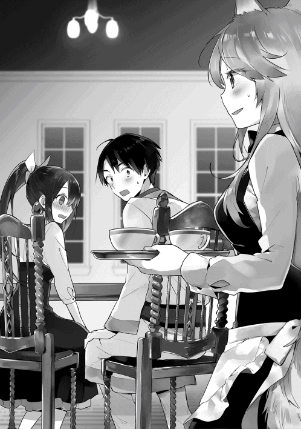
「えっとね、今は国中のおいしいものを揃えるって決めてやってるよ。ちなみに三ヶ月前にはパスタを二十種類揃えて、その前は色んな魔物の肉を取り揃えてもみたの」
「すごいでしょ」と言わんばかりにレミィは胸を張る。その後ろには揺れる尻尾がちらちら見え隠れしている。メニューのチョイスには、かなりの自信があるようだ。だが、この言葉で幸助はメニューのちぐはぐさの原因を把握する。品揃えの軸はあったものの、その軸がずれていた。そしてその軸はコロコロ変わってもいた。
「レミィさんの店は高級レストランですよね」
「うん、そうだよ」
「それなのに、屋台でも食べられるような串焼きもメニューに入ってました」
「む、そのことね。あれはブルゴ地方独特の味付けがされてて、王都で食べられるのはウチだけなの。すっごくおいしいよ」
自信を持ってレミィはそう答えた。やはり努力はしているものの、その方向がずれているように感じる幸助。
「確かにおいしいのかもしれません。ですが、店の格式にはふさわしくないような気がします。他にも屋台でも売ってそうな料理もありましたし」
「うむー、そうかもしれないけど、今までのメニューが受け入れられなくなったからね。あれこれ工夫してる最中なの。これでも多少は今までと違うお客さんも来てくれるようになったんだから」
「その工夫の結果、今があるってことですね」
「むぅ......。それはそうだけど......」
幸助のストレートな言葉に、背中で揺れていた尻尾が力を失い、だらんと床へ垂れる。
「ではレミィさん。常連のお客さんはどのくらいいますか？」
「あんまり把握してないけど......」
そう言うと指を折り始めるレミィ。両手の指がすべて折れる前に、その動きが止まってしまった。想像以上に厳しい数字を自分で確認し、苦笑しながらレミィは続ける。
「常連って言えるお客さんは......かなり減っちゃったみたい」
「では今来てくれるお客さんの多くが、初めて来店するお客さんってことですか？」
「そうなるのかな。その人数も寂しい状況だけどね」
レミィの店にはリピーターがごく少数しかおらず、新規客で何とか回している状況だった。
何度も繰り返し来店してくれる顧客であるリピーターの存在は大切だ。リピーターが増えなければ、常に新規客を追い続けなければならなくなる。それではいずれ経営は行き詰まる。なぜなら、新規客を獲得するには、既存客に再来店してもらうよりも多くのコストがかかるからだ。七倍のコストがかかると言う専門家もいる。もっともこれはメールやＤＭを打つことができる日本での話なので、ここ異世界でそのまま通用する話ではない。だが、新規客獲得のコストが高いことに変わりはない。
リピーターを増やすためには、まずは店の方向性をしっかりと決めなければならないと判断した幸助。その重要性をレミィへ説明すると、問題の本質へ切り込む。
「レミィさん、常連さんの存在が大切ってこと、分かっていただけました？」
「うん。すっごくよく理解できたよ」
「それでレミィさんがこれだけの工夫をしてるにもかかわらず、常連さんが増えないのは何でだと思います？」
「............ぜんっぜん分かんない」
少し間が空いた後、そう答えたレミィ。普段の幸助であればここから少しずつ質問をして、相手から正解の言葉を引き出す。だがレミィはあれこれ挑戦をして工夫を凝らしてその果てに、どうしようもなくなり幸助を頼っている状況だ。だからそれも酷だと判断し、そのまま答えを説明する。
「それはですね、メニューと空間の一貫性がないからです」
「いっかんせい？」
首をかしげ、きょとんとした表情でそう答えたレミィ。サラもピンときていないようだ。
「はい。この空間が居心地のいい人とそうでない人がいるんです。串焼きをよく食べて、酒場の喧騒が好きな人にとっては、この空間は居心地があまり良くないんです。逆に普段から高品質なものに触れている人にとっては、居心地の良い空間のはずです」
そう言うと幸助は室内を見渡す。壁に掲げられた絵画に、高そうな骨董品の数々。なんでも鑑○団に部屋ごと鑑定してもらったらどれだけの金額になるのだろうと、余計なことを考える。
「それを踏まえて、どうしたらいいと思いますか？」
「どちらかというと酒場向けのメニューを増やしてるから......。店を酒場っぽく改装するのはどうかな？」
「それはそれで多少は効果があるかもしれませんね。ですが、この辺りは裕福な方が多く住んでる地域です。それにお店の改装にはお金がかかりますよ」
「むぅ......。ならやっぱりメニューを考え直すしかないってことか」
そう言うとレミィは小さなため息をつく。無理もない。メニューについては今までさんざん工夫してきた。それにもかかわらず、結果が出なかったのだから。
「その通りです。味、空間、そして接客。これらが統一されてこそ、『次にまた来たい』と思ってもらえる店になるんです」
空間を構成する要素には、内外装以外にも照明の明るさや香り、ＢＧＭなども含まれる。ＢＧＭに関しては選曲だけでなく音量も大切な要素となる、奥の深い世界だ。
「なるほど。専門家から言われるとそんな気がしてきた。でもメニューなんて、できそうなことはやり尽くしたよ。今いる料理人は当てにならないし、もうアイディアなんて枯れちゃったし......」
「そこなんですよね、問題は......」
幸助はそう言うとうーんと唸りながら腕を組む。
「どうしたの、コースケさん？」
「僕には高級店のメニューなんて考えられないからどうしようかなって思ってさ」
「それならお父さんに相談してみようよ」
「アロルドさんに？」
アロルドの店は市民街にある。価格はやや高めのものもあるが高級店ではない。それが最適な策なのか幸助は一瞬悩む。だが、貴族の子女が来店するようにもなったアロルドの店ならば、高級レストランにふさわしい味は既に出せているのかもしれない。それに宮廷料理人にならないかと誘いを受けたと聞いたこともある。アロルドなら何とかしてくれるかもしれない。幸助はそう思い直す。
「うん。それがいいかもね。レミィさん、アヴィーラ伯爵領に『アロルドのパスタ亭』ってパスタレストランがあるんです」
「あっ、それ聞いたことある！ カルボナーラって変わったパスタがある店だよね？」
アロルドの店の名は王都まで伝わっていたようだ。思いがけずもたらされた事実にサラの顔がパッと明るくなる。
「知ってるんですね。その店、私のお父さんの店なんですよ！」
「えっ、そうなの？ すごいね！ レストラン関係者の間ではおいしい店って有名だよ。名前を聞いたのはつい最近だから、まだあたしは食べに行けてないんだけどね」
名前が知れているだけでなく、評判もかなり良いようだ。
「そこへ厨房の方を修行に出すことは可能ですか？ 貴族の令嬢さんもお忍びで食べに来てるくらいの味なんですよ。きっと王都でも通用するはずです」
アロルドが受け入れると言ってくれなければ成り立たない話ではある。だがきっとアロルドなら受け入れてくれるだろうという根拠のない自信を持つ幸助。
「うむー。その提案は嬉しいけど、厨房には二人しかいないの。だから一人でも抜けるのはキツイかな」
「ではレミィさんが行くというのは？」
「あたしはダメ。料理のセンスがないからね」
「そうですか......」
さすがにアロルドに店を空けてもらってまで王都へ来てもらうことはできない。いい手はないものかと幸助が考えていると、何かに気付いたようでレミィが口を開く。
「でも待ってよ。店に来た時にコースケが声をかけた女の子いたでしょ。もともと厨房にいたんだけど、今はウェイトレスをしてもらってるんだ。調理の仕事が減ったけど首を切るのが忍びなくってね。その子、セリカって言うんだけど、ちょっと聞いてみる」
レミィは待っててねと言い残し部屋を出る。隣町とはいえ片道一週間の場所だ。修行も含めれば相当な期間王都を離れなければならない。本人の承諾を得るのは大変だろう。幸助がそう思っていたところ、一分と経たずしてレミィが戻ってきた。
「行くの、大丈夫だって！」
「えっ、そうなんですか!? 即決ですね」
「店のためになるならって言ってくれたよ」
「そうと決まれば早速、今後の予定を決めちゃいましょう。レミィさん、何ヶ月以内に黒字化を達成したいという目標はありますか？」
幸助の質問は、言い換えれば廃業まであと何ヶ月の猶予があるかということだ。この回答次第で幸助たちの行動は大きく変わる。
「実はね、先代がため込んだこの調度品や骨董品の数々がなかったら、もう店は畳んでたとこなの」
「えっ!? そこまでの状況だったんですか......」
レミィの店は幸助の想像以上に逼迫していた。骨董品だって数に限りがある。それに何より、コツコツと増やしていっただろう祖父が悲しむはずだ。メニュー以外にもやるべきことはたくさんある。一刻も早く動かねばと危機感を抱いた幸助は、サラへ提案をする。
「サラ。今回は二手に分かれよう。サラとセリカさんだけでアロルドさんのところに行ってもらえないかな？」
「えっ、コースケさんは一緒に帰らないの？」
「最初はそう思ってたんだけど、状況も逼迫してるしメニュー以外のことでも取り組まないといけないことがあるんだ。サラなら状況を伝えることもできるしアロルドさんの説得もできるでしょ。だから任せてもいいかな？」
幸助と一緒にアヴィーラ伯爵領へ帰りたかったサラ。魔道具店の事故が判明して数日間、孤独を経験したサラは悩み込む。できることなら片時も離れたくない。だが、我儘ばかりも言ってられない。それに何より幸助の足手まといにはなりたくない。早々に自分の心を整理すると、笑顔で幸助の言葉に応える。
「そっか......。うん。分かったよ！」
「助かるよサラ。頼りになるから嬉しいよ」
「えへへ。ありがと！」
その後、細かな条件を詰めると軽い食事をとり、二人は店を後にする。
◇
レミィの店を訪れてから三日後。サラとセリカは魔道具店の荷馬車に便乗し、アヴィーラ伯爵領へ旅立った。片道一週間の旅路は、これが一番安心だと幸助がアリシアへ手配したものだ。それからの幸助は、形の揃った紙を調達したり酒商との打ち合わせをしたりと、毎日を忙しく過ごしていた。
日が傾くと幸助は日課となったレミィのレストランへ、夕食を食べに行く。いつものバーカウンターへ腰かけると、顔なじみとなったウェイトレスが幸助へ声をかける。
「本日もお疲れ様です。例のお飲み物、飲み頃となりましたがいかがでしょう？」
「えっ、もうできたんですか!? もちろん飲みたいです！」
「かしこまりました。今日のメイン料理は、メニューにはない特別な料理もご提供できます。よろしければいかがですか？ 料理長の特製です」
味見しましたがおいしかったですよ、とウェイトレスは笑顔で続ける。おいしいという言葉は敏感に反応する。
「へぇ、どんな料理ですか？」
「フィオッポのクエンカ煮です」
「えっ？」
「フィオッポの肉をクエンカ風に煮たものです」
「............」
全く聞いたことのない単語に固まる幸助。幸助に食べ物の好き嫌いはない。レミィの店はメニュー構成こそちぐはぐだが、それぞれ単品で見るとそれなりの味のものが多かった。一瞬悩むが、好奇心が幸助の背中を押す。人生何事もチャレンジだ。
「では、それをください。どんな料理か楽しみです」
「かしこまりました」
ウェイトレスが奥へオーダーを通しに行くと、幸助は広い店内を見渡す。まだ時間が早いため、幸助以外に来店客はいない。ここ数日間の来店客数は、ゼロから五組程度だ。日によりばらつきが大きい。
毎日こうしてレミィの店に通っているのには、二つの目的がある。来店客の動向を見ることが表向きの目的。従業員たちとコミュニケーションを取り、レミィの口から聞くことのできない実態を調べるのが裏の目的だ。雑多なメニューの中でもおいしかった料理を褒めたり、気を遣いながら雑談をすること数日間。メニューに載っていない料理を作ってもらえるくらいの関係になると、従業員たちの本音が少しずつ露わになってきた。
目新しいことをどんどん取り入れコロコロと変わるレミィの方針。それに振り回される従業員たち。しかしどれだけ行動しても売上アップという成果にはつながらなかった。当然のごとく給料は下がり続ける。新しい取り組みは、もはや従業員にとって面倒以外の何物でもなかったのだ。だから幸助の登場に「また余計な仕事が増えるのか」という空気が流れたそうだ。
レミィの取り得は、判断の速さや行動の身軽さだ。アロルドの味を取り入れることも即決した。その時は、良いと思ったことはすぐに決められると好感を持った幸助だったが、それが悪い方向に働いてしまっていたことに気付く。
だが、希望も見えてきた。先代の頃より勤めている現料理長から、何とかして店を立て直してほしいと懇願されたのだ。レミィは料理人は当てにならないと言っていたが、店のことを真剣に考えている料理人もいたことに幸助は安堵した。
もちろんモチベーションの下がりきった従業員もいる。自分たちの仕事がオーナーからも客からも評価されないのだから仕方ない。こればかりは今後の改善活動を経て、小さな成功体験を少しずつ積んでもらうしかない。
我が道を行くレミィにモチベーションの下がった従業員たち。メニュー以外の問題も山積みだ。どうしたら良いものかと幸助が悩んでいると、目の前にそっとグラスが置かれる。
「お待たせいたしました。アイスエールです」
思考の世界から帰ってきた幸助は、目の前に置かれたグラスへ視線を落とす。
うっすらと汗をかいた、透明ですらっとしたお洒落なグラス。少し濁った黄金色の液体にふたをするように載っている、きめ細かな泡。オレンジの液体と泡の比率は七対三。黄金比率になっている。どこからどう見ても生ビール。恋い焦がれていた生ビールだ。
「これ、本当に楽しみにしてたんです！ 入れ方も完璧ですね」
「ほんとですか？ ありがとうございます！」
嬉しそうな顔を浮かべるウェイトレス。幸助から「完璧」と評価されたのが嬉しかったようだ。といっても幸助が褒めたのは泡と液体の比率だけなのだが、これも立派な成功体験だ。
「では......いただきます」
待ちに待った瞬間がとうとうやって来た。幸助はしっかりと冷えているグラスを手に取ると、ゴクゴクと喉を鳴らしながら飲みたい気持ちを抑え、店の雰囲気に合わせゆっくりと飲む。炭酸を含んだ程よく苦く冷たいエールが、幸助の喉を刺激する。
「うん。やっぱり夏は冷えたエールに限る！」
記憶の片隅に薄らと残っている生ビールの記憶がよみがえる幸助。炭酸は弱いが、それでも今までこの世界で飲んでいた生ぬるいエールとはけた違いの喉ごしだ。それに香りの豊かさはこちらの方が上回っている。さすがは高級レストランのエール。久しぶりの体験に幸助は目尻を下げる。
「事前に味見させていただきましたが、冷やしたエールがこれほどおいしいものとは思いもしませんでした」
そう笑顔で答えるウェイトレス。真夏の冷えたエールは異世界人も虜にしたようだ。
幸助がここで冷えたエールが飲めるようになったのには、ちょっとした経緯がある。
今回の改善で幸助が最初に手掛けたのは、魔道冷却庫の導入だ。理由は経費削減のためである。店では波のある来客数に対応できるよう、常にある程度の在庫を持っていた。メニューの範囲も幅広い。そのため、在庫の種類も多岐に渡る。しかし季節は夏。すぐに食材が傷んでしまうのが大きな問題だった。肉などは一日で腐臭を発するものもある有様だ。もちろんそうなったら客に出すこともできず廃棄となる。
だからこの廃棄によるロスを極力減らしたかった。赤字垂れ流しの場合、まずはそれを最小限にすることが原則だ。かといって在庫を減らしてしまえば、メインの肉料理すら客に出せなくなる可能性もある。そうなれば更に業績が下がってしまうのは目に見えている。そこで幸助は手始めに、王都へ入ってきたばかりの冷却庫を導入することにしたのだ。
あくまでもキンキンに冷えたエールは副産物である。たまたま実験に協力してくれる酒商に出会っただけだ。そのために生産数の少ない冷却庫を無理して回してもらったり、炭酸を閉じ込めるための瓶を探すために奔走なんてしていない。経費削減の過程で生まれた、副産物だ。
幸助がチーズをつまみにちびちびとエールを飲んでいると、先ほどのウェイトレスの代わりにレミィがやって来た。
「ありがとね、コースケ。高い魔道具までお世話になっちゃって......。この前も話したけど、壺、本当にいらないの？」
苦笑する幸助。レミィの言葉は、まるで怪しい占い師のようだ。
「え......えっとですね、これも改善途中の経費ですから、儲かった後にちゃんとお代はいただきますので」
今回も幸助は成功報酬で仕事を請けている。レミィの中では現金扱いとなっている骨董品をこうやって何度も勧められるのだが、その度に断ることを繰り返している。
「必要になったらいつでも言ってね」
「は、はい。でも、できるだけ減らさないようにやっていきましょうね」
「分かってるって。冗談、冗談」
そう言ってあははと笑うと、レミィは視線をカウンターのグラスに向ける。
「それはそうと、もうすぐで他にはないドリンクメニュー、できそうだね」
「ですね。冷えたエールはもう僕の必須ドリンクになりそうですよ」
そう言って幸助がグラスを傾けると、レミィから熱い視線が送られているのに気付く。
「どうしました......？」
「ねえ......ちょっとだけいい？」
「な、何をですか？」
「何をって......アイスエール」
一口だけ、と続けるとレミィは両手をゆっくりと幸助が手にするグラスへ伸ばす。だが今は勤務中。アルコールは飲めない。勤務が終わるまでの我慢だ。レミィの手が触れる直前、幸助は口を開く。
「レミィさん、今はまずいんじゃないですか？」
「むぅ......」
心底残念そうな表情で、レミィは手を引っ込める。
「アイスエール、ウチの名物にならないかな」
「最初は名物になって客寄せの効果も出るかもしれませんね。でも真似るのも簡単だからあまり期待しない方がいいですよ」
「そんなものかなぁ......」
その時、レミィは何かに気付いたようで幸助の向こうへ視線をずらす。視線の先は店のエントランスだ。
「あっ、お客さんだ！」
幸助も振り返って見ると、三人の男女が店に入ってきたところだった。本日初めての来店だ。レミィは「ちょっとゴメンね」と言い残すと、接客へ向かう。幸助は視線を前に戻しつつも、レミィの接客に耳を傾ける。
「ご来店ありがとうございます」
「珍しい食べ物が食べられると聞いてきたんだけど、この店でいいのかな？」
「はい。そうでございます。どうぞこちらへ」
接客慣れしていない人の如く、言動がぎこちないレミィ。ここ数日の観察で、幸助はレミィ自身にも問題があると感じている。関われば関わるほど、頭の痛くなる幸助であった。
◇
同じ日、アヴィーラ伯爵領にて。
黒い外壁に小さな窓が四つ並んだお洒落な建物の前に、一台の馬車が停まった。降りてきたのは、王都から帰ってきたサラと修行に来たセリカだ。
「ここだよ、お父さんの店。何だか懐かしいなぁ」
夜の営業が始まるにはまだ時間がある。営業を示す店名のプレートは裏返っている。
重厚なオークでできたドアを開けるサラ。ギィという音と共に店内に光が差し込む。
「ただいま！」
「サラ？ サラか！」
サラの元気な声が店内に響くと、猛烈な勢いで厨房からアロルドが駆け出してきた。サラが王都へ出発したのは春。季節が一つ移り今は夏だ。久しぶりの帰宅に、アロルドの鼻息は荒い。
「ただいま、お父さん！」
「遅かったじゃないか！ 何してたんだ」
「うん。いろいろお仕事が重なっちゃってね」
いろいろな仕事とは、もちろんアリシアの魔道具店とレミィのレストランのことだ。魔道具店では偽魔石による事故で滞在期間が延びた。それが落ち着いた時にレミィと出会い、目的の観光をほとんどすることなく帰ってきたのだ。
「悪い奴に捕まってなかっただろうな？」
「そんなことないよ。ずっとコースケさんと一緒だったし」
「そ......そうか」
サラはすれ違った数日を除き、幸助とずっと一緒にいた。それは安心できることでもあるが、まだ心のどこかで納得できていないアロルドは複雑な表情をする。
「で、コースケはいないのか？ それに隣にいるのは誰だ？」
「もう、順番に説明するからまずは落ち着こうよ、お父さん」
「お......おう」
愛娘に窘められ三人は客席の一つへ座る。
「まずね、コースケさんはまだ王都にいるよ」
「なんだ、あっちで仕事でも請けてるのか？」
「そんなとこ。でね、そのお仕事とも関係するんだけど、こちらの方が今日からここで修行する料理人さん」
「は？ 修行？」
「初めまして。セリカと申します」
アロルドと向かい合っているセリカはその場で頭を下げる。状況が呑み込めていないアロルドは、サラとセリカの顔を交互に見る。
「修行？ 何の話だ？」
「王都でいろいろあってね」
「何があったんだ？」
「はいこれ。コースケさんからの手紙。詳しいことが書いてあるよ」
アロルドはサラから封筒を受け取ると乱雑に封を開け、読み始める。
「『前略アロルド様』？ 何だこの変てこな書き出しは」
どうやら日本流の手紙の書き方は通用しなかったようだ。手紙にはレミィの店を手伝うようになった経緯などが綴られている。しかし、その手紙を読み進めるにつれ、アロルドの手がプルプルと震えてくる。
「人の修行だけじゃなくメニューも考えろだと。何だアイツ、完全に丸投げじゃないか！ しまいには報酬は儲かった時払いでよろしくだと？」
「ほらほらお父さん。最後まで読んで」
「なんだ『アロルドさんの味は世界一ですから、僕も早く食べたいなぁ。王都で待ってます』か......。はぁ、調子のいい奴だな」
左右に首を振るアロルド。手紙の中でも幸助の無茶振りは健在だった。
「ま、連れてきちまったもんは仕方ない。面倒見てやるよ」
「ありがとう！ お父さん！」
「よろしくお願いいたしますっ」
そう言いながら頭を下げるセリカ。これで無事に弟子入りは決定だ。ミッションの第一段階はクリアした。サラはホッと胸をなでおろす。
「腹減ってるだろう。パスタ作ってやるからテーブルで待っとけ」
「お父さんの料理、すっごくおいしいから楽しみにしててね」
「はい。楽しみですっ」
こうして王都とアヴィーラ伯爵領それぞれの地で動き出した改善への道。だが、猶予はそれほど残されていない。幸助たちと取り決めたリニューアルオープンまであと二ヶ月だ。
◇
翌日の昼過ぎ。レストランの個室でテーブルを挟み、幸助はレミィと向かい合っている。メニュー以外の対策について話し合うためだ。
「いいなぁ、セリカは。噂の店の味を直に味わえて。コースケはカルボナーラ食べたことあるんだよね？」
「もちろんです」
食べたことがあるどころか、開発にも携わった幸助。材料探しに何軒もの酪農家を回ったのは懐かしい思い出だ。
「どんな味なの？」
「チーズと卵の味がねっとりまったり絡まって濃厚で、黒コショウがアクセントになってるんです。病みつきになりますよ」
「濃厚な味かぁ......。どんな味だろう」
そうつぶやくと両手で頬杖をつきながら遠い目をするレミィ。次第に顔が緩んでいき、恍惚な表情へと変化していく。口元が緩み、よだれを垂らしそうになったところで幸助が突っ込みを入れる。
「あ、あの......」
「むっ、まだ見ぬ味を妄想してたよ。ごめんごめん」
レミィは笑顔でよだれを拭く真似をする。その仕草が妙に動物っぽく感じられるのは、レミィの容姿の影響が大きいはずだ。
「セリカさんの修行、うまくいくといいですね」
「うん。今度こそうまくいくように祈ってるよ」
「そういえば、料理ができるのに何でセリカさんは厨房からホールへ異動したんですか？」
レミィは厨房の仕事が少なくなったからウェイトレスにしたと言っていた。厨房の仕事が減ったのならば、ホールの仕事だって連動して減っているはずである。それにもかかわらずセリカはリストラ対象となっていない。何らかの理由があるはずだ。
「セリカはね、ちっちゃな頃からウチの店に家族で食べに来てくれてたんだ。春の誕生日パーティーは必ず来てくれてね。で、いつの間にかこんなおいしい料理を作れる人になりたいって憧れてくれて、勤めてくれるようになったんだ。だから仕事がないからってクビにはしにくくて」
ちょっとドジなとこがあるんだけど頑張ってくれてるし、とレミィは続ける。
「へえ、そんな経緯があったんですか。憧れがきっかけで勤めてもらえるなんて素敵な店だったんですね」
「あはは。当時はね」
「またそんな店になれますよ。きっと！」
「うん！」
話の区切りがついたところで、幸助は冷えたお茶を一口飲む。今日のミーティングの目的は雑談ではなく、商売繁盛のためだ。幸助は真剣な表情になると、話を切り出す。
「では、今日の本題ですが......」
「うんうん。今日は何をするの？」
「常連さんの大切さは前回お話ししました」
「うん。覚えてるよ」
「では常連さんが増えるために、どんなことをすれば良いと思いますか？」
「それはもうメニューを何とかするって取り組みをしてるよ？」
「はい。ですが、メニューだけでは以前のような繁盛店になるのは難しいと思います」
「うむー。なら何だろう......」
考え込むレミィ。味が良いにもかかわらず、繁盛店になれる店とそうでない店がある。立地や宣伝は重要な要素だ。だが、それ以外にも重要なことがある。それさえあれば不利な立地や品ぞろえの悪さもカバーできる。それだけの力を秘めたことが。
幸助は以前「味、空間、接客。これらが統一されてこそ、『次にまた来たい』と思ってもらえる店になる」と言った。高級感溢れる空間はそのままで良い。そして味に関しては既に動いている。だが、今の店には決定的に欠如していることがある。
「それは、接客です」
「接客？」
「はい。先代の接客力はすごかったとおっしゃってましたよね」
「あぁ......おじいちゃんのね......」
静かになる室内。祖父からはもう見放されたと言っていたレミィ。触れてほしくなかった話題のようだ。グラスの中の氷がカランと音を立てる。だが、ここを何とかせねば問題を解決することはできない。幸助はお茶を一口飲むと説明を続ける。
「レミィさんは、先代のように接客することはできないとおっしゃってました」
「うん、そうだよ」
「真似ができなかったのは仕方ありません。ですが、その先代の接客が最大の強みだったのは間違いありません」
「むぅ、それはそうだけど......。でも、真似できないものは仕方ないよ」
だから珍しい料理で勝負してたの、とレミィは続ける。レミィの祖父は類稀なる能力を持っていた。客の顔や名前、そして好き嫌いなどをほとんど覚えてしまうなど、普通の人のなせる業ではない。
「ですが、レストランとしてこれは強みですし、競合店の多い王都で競争に勝ち残るには絶対に必要なことです」
「接客だってできることは工夫してるもん。ま、それも効果がなかったから今があるんだけどね。あははっ」
乾いた笑いをするレミィ。幸助の言っていることはすべて自覚していることである。だからこそ救いの手を求めたのだ。
「レミィさんのお店に来てくれるお客さんは、定期的に来てくれる人以外にも、年に一回だけという来店頻度のお客さんも多かったと思います。セリカさんのように」
黙って頷くレミィ。その様子を確認した幸助は話を続ける。
「その時に、『誕生日おめでとう』と従業員皆でお祝いしたとか、料理にちょっとした工夫を加えることをしてたんじゃないでしょうか？」
「よく分かったね！ そういえばそんなことしてたよ」
「誰だって特別扱いされたら嬉しいものです。その嬉しい体験が『また来たい』という強い動機になります。またその接客ができる店を目指してみませんか？」
幸助の言うことは理解できるレミィ。だが、その表情はパッとしない。
「でもコースケ。それができなくなったから今があるんだよ。優秀な人は引く手数多だから雇うことなんてできないし、今更どうやって......」
そう言うと俯くレミィ。だが、幸助はその答えをちゃんと考えている。サラリーマン時代の経験を基に。
「レミィさん、安心してください。先代のように特殊な能力がなくても誰でも再現できる方法があるんです」
「そうなの!?」
パッと顔を上げ、キラキラと目を輝かすレミィ。
「それができるんだったらすっごいよ！ でも......どうやって？」
レミィには祖父の真似はできなかった。他の従業員も同じだ。期待と不安の入り混じった眼差しで幸助からの言葉を待つ。
「それは、顧客データベースを作ることです」
「顧客データベース？ それは何？」
幸助はサラリーマン時代に駆使したソフトウェアの名前を口にした。当然ながら、レミィが初めて耳にする言葉だ。
顧客データベースとは、自分の店の顧客または将来顧客になるであろう人に関する情報を収集、整理し、いつでも引き出せるようにした情報の集まりのことだ。
収集する情報は業態や経営方針によって異なる。徒に情報量が多くても役に立つ情報がなければ何の意味もない。名簿をどう活かすか決まってない場合は宝の持ち腐れになる。サラリーマン時代に幸助が見てきた中でも、何となく他の店がポイントカードをやってるからやってみたという店もあった。それでもやっているだけマシかもしれない。そもそも名簿自体を作っていない店も多かった。無料の顧客データベースソフトが溢れている日本でもそのような状況だ。それは管理する手間がかかるからである。
だが、顧客データベースほど商売において大切なものはない。
江戸時代では、店が火事になったら真っ先に大福帳を持って逃げるか井戸に投げ込んでいたそうだ。大福帳とは顧客台帳のこと。火事で店や商品がなくなっても、これさえあればまた立て直すことができるという江戸商人の知恵である。
効果のある顧客データベースを構築するには、名簿をどう活用するか決めることが肝となる。それにより収集する項目が決まってくる。レストランであれば、接客に活かすため名前、家族、記念日、食べ物の好き嫌いなどを収集するということになる。もちろん途中から状況に合わせて増やしたり減らしたりと、バージョンアップを続けることも必要だ。
「──そういう訳で、顧客データベースを作ればおじいさんがいなくても、店の接客レベルを底上げすることができるようになるんです」
「なるほどね。でも、名前と好みを記録するくらいなら知り合いの店でもやってたよ。だけど増えてくると探すのが大変で結局やめちゃったって言ってたし」
「そこは名簿の整理方法に問題があったんだと思います」
幸助は「見ててください」と言うと、カバンから何枚か紙を取り出す。紙には端に数字が書かれており、何本か罫線も引かれている。
「これは顧客シートです。この用紙一枚につき一人のお客さんについての情報を書きます」
「ここに名前を書いてここに食事の好みなんかを書くってことかな。なら、残りの欄には何を書けばいいの？」
「あとは家族構成やよく一緒に来る人などの名前。残りの欄は来店履歴です。いつ来て何を食べてくれたってことです。それを棚に名前順に並べて整理します。そうすれば名簿の数が増えても、来店時にすぐに引き出すことができますよね」
「おぉ、確かに！」
来店履歴や何を食べたかまで記載するのは大変な作業だ。紙だってそれなりの値段がする。だが、ここは高級店で客単価も高い。それくらいのコストをかけるだけの価値はあると幸助は判断した。
「それでここからがポイントなんですが、何度も来てくれると来店履歴の欄がいっぱいになっちゃいます」
「それはどうするの？」
「今度はこの紙を使うんです」
そう言うと幸助は端に色が塗られた紙を取り出す。
「この紙を最初の紙に貼りつけてページを増やします。色が塗ってありますので、棚の中でも目立ちます。一目で大切なお客さんって分かりますよね」
「む、確かに！ よくそんなこと思いつくなぁ」
「いろいろ苦労してきましたから......」
幸助がサラリーマン時代に勤めていた会社にはシステム部門があった。どうやってクライアントのデータベースを構築するかという議題で侃々諤々としたのは懐かしい思い出だ。
「ところでコースケ。何で数字がついてるの？」
そう言いながらペラペラと紙をめくるレミィ。その数字は連番になっており、重複するものはない。
「これは顧客番号です」
「顧客番号？」
「今までの話を整理すると、以前のレミィさんのお店は記念日を大切にする接客をしていたように感じました。もしこれからも記念日を大切にする......という方針になった場合に必要な工夫なんです」
「へぇ。それはどんな工夫なの？」
ここまで幸助が説明しただけでも十分有効なデータベースとなり得る。だが、それだけだと受け身の接客になってしまう。名簿が見られるのは、その客が来店した時のみとなってしまうだろう。現状はその来店客が少ない状況。だから幸助はそれだけでなく、攻めの経営ができるようなデータベースを構築しようとしているのだ。
「一ヶ月ごとに箱を作ります。えっと、今は七月ですので、七月に誕生日や何らかの記念日を迎える人の名前と顧客番号をカードに書き、そのカードを日付順に並べて箱にしまっておきます。そうすれば、今月は誰が記念日を迎えるのか、すぐに調べることができますよね。事前に分かっていれば好みの食材を切らさない注意もできますし、訪問などで『今年も来てね』という営業活動もできます。顧客番号は同じ名前の別人を取り違えないようにするための工夫です」
「むー、すごーい！ そんなアイディア全然思いつかなかったよ！」
今までできなくて避けていたことが急に現実味を帯びてきたことで興奮気味のレミィ。
「では、顧客データベースを構築するという方針でいいですか？」
「もちろん！ そうと決まったら早速準備しよ！」
それから幸助とレミィは数時間にわたり顧客データベースについて話し合う。どんな目的で名簿を集めるのか。そのためにはどんな情報を収集し、どのように接客に活かすのか......などだ。それもこれも初回の来店で「また来たい」と思ってもらえなければ意味がない。それ以前に、初回の来店をしてもらわなければならない。セリカの修行の成果が待ち遠しい幸助であった。
◇
ところ変わってここはアヴィーラ伯爵領。仕込み中の厨房にアロルドの怒声が響き渡る。
「何度言ったら分かるんだ。そうじゃない！ こうだ!!」
「ひゃっ、ごめんなさい！」
プルプルと子羊のように震えながらその場に立ち尽くすセリカ。客席からは女性二人が心配そうな面持ちでその様子を見守っている。
「サラちゃん。何だか厨房、大変そうね」
「うん......。三日前に修行が始まってからずっとこんな感じなんだ......」
「へぇ、大変そうね。でも何でまた」
「実はね──」
それからサラは、王都での出来事を、ちょうどオリーブオイルの納品に来ていたルティアへ説明する。主にセリカが修行に来ることになった経緯だ。
「そっか。王都でも切り盛りが大変な店はやっぱりあるんだ」
「うん、人は多いけどお店も多いからね。だから何とかしようとしてるんだけど......」
「もしかして、アロルドさんと相性が良くないんじゃない？」
「ルティアさんもそう思う？」
ここではぁとため息をつくサラ。修行を完遂して、レシピをレミィのレストランへ持ち帰るという任務を背負っている。うまくいかなかったら自分の責任だ。幸助の足を引っ張ることだけはしたくない。焦ってはいるものの、アロルドとセリカとの相性で問題が発生するのは想定外だった。
「ま、こればかりは本人たち次第だから。サラちゃんは気楽に構えていればいいんじゃない？」
「うん......。そっか、そうだよね！ ありがとう、ルティアさん！」
これで心配事がなくなった訳ではないが、心のスッキリしたサラは笑顔を浮かべる。
「ねえねえサラちゃん」
「何、ルティアさん？」
「厨房も大変そうだけど、大丈夫？ コースケを王都に置いといて」
もしかしたらそのレミィって人といい感じになってるかもよ、とルティアは続ける。その瞬間、サラは大きく口を開け、その口を隠すように手を当てる。
「えっ!?」
「うふふ。冗談よ」
ぷーっと頬を膨らますサラ。両手を腰に当てて怒ったぞアピールをする。
「ごめんごめん、久しぶりにサラちゃんの顔見たらお姉さん心配になっちゃって」
「もー。ルティアさんったらー」
「元気なさそうだったからさ。それじゃ、また来るね」
「はい！ ありがと、ルティアさん！」
ルティアを見送るとサラは再び視線を厨房へ向ける。様子は相変わらずのようだ。雲行きが怪しくなってきたセリカの修行。果たして笑顔で王都に帰ることはできるのだろうか。
◇
取り組みを開始してから一ヶ月が経過した。季節は盛夏となり、日差しの凶暴さは最高潮に達している。湿度は高くないので不快指数は東京より低いが、それでも暑いものは暑い。エアコンが恋しくなる幸助であった。
幸助の思い付きから始まったアイスエールは、順調に改良を重ねている。酒商の工夫により瓶内で発酵させる時間もアップ。よりしっかりとした泡と喉ごしを楽しめるようになった。メニュー入りする日も間近だ。
接客の改善も順調に進んでいる。方針が決まってからのレミィの動きは速かった。もともと行動力は誰よりもある。今回はそれがプラスに働いたかたちとなった。数は少ないながらも今いる客の顧客データベースを構築したり、他のレストランに客として行き、接客の研究を重ねている。
接客の方針は「記念日の演出」だ。客が何らかの記念日を迎えているということが分かれば、プラスアルファのサービスをすることになっている。誕生日であれば皿にソースで「おめでとう」のデコレーションをしたり、ちょっとした料理をサービスするといった具合だ。費用はあまりかからないが客の印象には残る。そんな接客を目指している。
「ップハァ！」
「やっぱりおいしいですね、アイスエール」
「うん。すっごくおいしいね！」
営業終了後の客席には、グラスを傾ける幸助とレミィの姿があった。接客面の方針が落ち着いたため、初めて二人で酒を交わしている。つまみは料理長が作り置きしてくれた、残り物のフルコースだ。幸助の隣に座るレミィは上機嫌だ。手入れの行き届いた尻尾がわっさわっさと揺れている。
「接客の練習も順調だし、あとはメニューがどうなるかってとこだけですね」
「うん！ セリカがどんな土産を持ってきてくれるか楽しみで仕方ないよ」
事あるごとに楽しみだ、楽しみだと繰り返してきたレミィ。懐かしいアロルド定番の味付けに高級レストラン向けの新メニューは、幸助も心待ちにしている。
「あと二週間くらいで帰ってきますから。僕たちはそれまでにできる準備をしましょう」
「うん！」
セリカが修行から戻ってきたら全メニューを見直し、その二週間後を目途にリニューアルオープンする予定となっている。
リニューアルオープンといっても、改装など大きなことはしない。メニューを変えることと、従業員のユニフォームを一新することが大きな変更点だ。ユニフォームを変える理由は、従業員たちの気持ちを新たにするという効果が大きいためである。
「ねえ、コースケはさ、何でこの仕事をしてるの？」
「レミィさんみたいに困った商売人の力になりたいからですよ」
「む、何だか建前くさいなぁ」
「建前なんかじゃないですよ。僕、いつも思ってるんです、商売人ってすごいよなぁって。自分の扱ってる商品に誇りを持って、必死に経営を頑張ってて。でも残念なことに、商品は良くても、レミィさんみたいに経営者が一生懸命頑張っても、売れないことがあるんですよ。もったいないですよね。せっかくの良い商品が、それを必要としている、それがあれば幸せになれる人の手元に届かないのは。だから僕は決めたんです。お店にちょっとだけ不足してる『販売』の手伝いをすることで、多くの人に笑顔を届けようって」
今まで関わった商売人のことが頭をよぎり、幸助の言葉には力がこもる。
「む、そういうことね。でも、お客さんなんて、あたしの店みたいに大変なとこばかりでしょ？」
「それはそうなんですが、やっぱり業績を改善できたり目標達成した後、お店の方と一緒に味わう充実感は病みつきになりますからね」
レミィは、ふぅんと言いながらグラスを揺らす。何か感じるものがあるようだ。
「......あたしでもその充実感、味わえるかな？」
「絶対、味わえますよ」
力強く幸助はそう言った。計画は順調に進んでいる。近い将来できるであろうと確信をしている。
飲み物がアイスエールからワインに変わり、そのボトルも残りが寂しくなってきた。相変わらずレミィの尻尾は上機嫌のようだ。そして饒舌になってきた。
「ねぇ、コースケぇ」
「何ですか？」
「あたしの尻尾、気になってるんでしょ」
そう言うとレミィは屈託のない笑みを浮かべた。その栗色で愛らしい瞳が幸助の胸を打つ。
「えっ!?」
気になってないといえば嘘になる。だいたい初対面で凝視していた。
「触ってみる？」
願ってもないオファーだ。
「いいん......ですか？」
「む、やっぱだめ」
弄ばれただけであった。幸助はガクリと肩を落とす。しかし、その様子が哀れに見えたのか、レミィは再び口を開く。
「でも......コースケだから、いいよ」
ほら、と言いながらレミィは尻尾を幸助へ向ける。その尻尾を凝視する幸助。ブロンドで、太いところはウェストほどもあるその毛並が幸助を誘惑する。幸助はゴクリと唾を飲み込むとゆっくりと手を伸ばす。
「おぉ......」
幸助の手を受け入れる柔らかな毛並み。それは人の髪の毛とも違う、毛足の長い毛布とも違う、初めての感触だった。指を奥へ潜り込ませると手は暖かく、優しく包まれる。幸助は時間を忘れ、その感触を堪能する。
「むぅ、コースケ、触りすぎ」
そう言うと椅子に座り直し、テーブルに視線を落とすレミィ。その横顔は朱に染まっていた。
「あ、えっと、ごめんなさい」
「............」
「......」
「尻尾触らせてあげたから、今度はあたしの番ね」
「えっ、何するんですか？」
「コースケにいろいろ聞いちゃうよ。まずは......サラとはよろしくやってるの？」
「え、えっとですね......」
それから小一時間、幸助はレミィから根掘り葉掘り追及されるのだった。
◇
翌日の午後。幸助とレミィは店内でミーティングをしている。
「──ではこの件はこれくらいにしましょう。次ですが、先日お願いしていた接客の件、準備はできてますか？」
「もちろん！」
レミィはそう元気よく答えるが、すぐに視線が幸助から逸れる。視線の先は店のエントランスだ。幸助がその視線を追うと、二人の人影が入り口から入ってくるのが見えた。
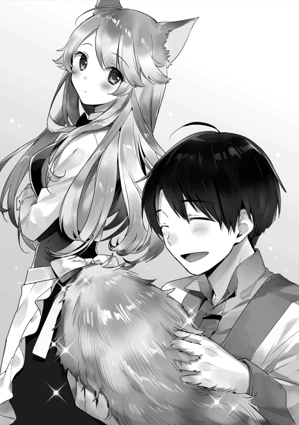
「あれ......？」
姿を現したのはアロルドの店へ修行に行っていたセリカと付き添っていたサラだ。予定よりもずいぶん帰りが早い。幸助とレミィのもとへ近づく二人。久しぶりに帰ってきたにもかかわらず、晴れない表情をしている。「お帰り」とレミィが声をかけようとすると、それを遮るようにセリカが声を上げる。
「恥ずかしながら、帰ってまいりましたっ！」
バッと頭を下げるセリカ。サラもそれに続く。状況が呑み込めないレミィは二人を交互に見つつ口を開く。
「えっ、どうしたの？ 詳しく聞かせて」
レミィに促され頭を上げるとセリカは声を絞り出す。
「使えない......出来の悪い従業員で、ごめんなさいっ」
全く意思の疎通ができていない。そんなセリカの様子を見かねた幸助が口を開く。
「サラ、どういうこと？」
「あのね、コースケさん......。ダメだったんだ......」
「何がダメだったの。もう少し具体的に説明してくれないと分からないよ」
「セリカさん、頑張ったんだよ......。すっごく頑張ったの。でもね、お父さんに......認めてもらえなかったの」
「えっ!? てことは修行は失敗だったってこと？」
黙って首を縦に振るサラ。結局セリカの修行はアロルドとの相性が合わず、やり遂げることができなかった。アロルド曰く「コイツは才能がない」とのことだ。それでもサラは双方がうまくいくよう、二人の間を何度もとりもつなど努力をした。しかし、どんどん生気を失っていくセリカの姿を見かねて「もう止めよう」と決めたのだった。
「ちょっと待って、なら新しいメニューも何もなしってこと？」レミィがサラへ訊く。
「は......はい」
「そ、そんなぁ」
力を失ったレミィは椅子へ崩れ落ちる。今まで何をやってもうまくいかなかった店の経営。でもいつかは繁盛店にしたい。その想いだけで頑張ってきた。しかし店の業績は下がるばかり。もうダメかと思いかけた時、藁にもすがる思いで友人に相談したら幸助という男を紹介してもらうことができた。貴族様、それも伯爵様の仕事もこなしている男だ。ウチみたいな店なんて相手にしてもらえる訳ない。そう思いつつもダメで元々で頼んでみたら、経営改善を引き受けてくれることになった。
話してみると、やっぱりすごいと思えた。話す言葉どれをとっても感心することばかりだ。食べることが好きということも共感できる。まだ結果は数字に表れていないが、今度こそはいける気がしていた。いや、いけると確信していた。それなのに、肝心な修行が失敗に終わってしまうなんて考えてもいなかった。
多くの客に愛される繁盛店。
思い描いていた青写真がガラガラと音を立てて崩れていく。
「はぁ。また無駄な行動をしちゃったってことね............。何でかなぁ。あとちょっとでいい感じになりそうだったのに......」
両手で頭を抱え込むレミィ。その手はプルプルと震えている。誰よりもセリカの帰りを楽しみに待ち、店の命運をかけていたレミィには耐えがたい事実だ。
（まずいぞ、この雰囲気。せっかくレミィさんだけじゃなく従業員皆がその気になってきたっていうのに逆戻りになりかねないぞ。どうすればいいんだ......）
こういう時こそプロジェクトリーダーとしての資質が問われる。今までにも想定外の出来事は何度も経験した。クライアントの担当者が改善プロジェクトを投げ出して、突然退職してしまったことだってある。それと比べたらまだまだ何てことない。幸助は沈んだ雰囲気を打ち破るよう、声を張り上げる。
「皆さん、まだ結果が決まった訳ではありません！ この状況だからこそできることがあるはずです。これから何ができるか一緒に考えましょう！」
レミィは顔を上げると、幸助へ視線を送る。その目からは力が失われている。もうどにでもなれとでも言っているようだ。
「できることって......何ができるの？」
「幸い、どこよりも先駆けて冷却庫の導入をしています。アイスエールもできました。集客の目玉になり得ます」
「それだけで大丈夫......なの？」
「もちろん料理のメニューも見直します。他の店の研究もしてきましたし、僕たちだけでもきっとできるはずです」
「でもどうやって......。もうあれこれ試した結果、今があるっていうのに......」
「............」
ここで無言になる幸助。確かにレミィの言う通りだ。今、この状況で考えても良い考えが出そうにない。ここは一旦時間を置いて仕切りなおそう。幸助がそう言おうとしたところ、別の男性の声が割り込んできた。
「あの......メニューのことなんですけど......」
レミィに向かっておずおずと発言したのは、それまで遠巻きに様子を見ていた料理長だ。
「何？」と言いながらレミィは料理長へ視線を向ける。
「えっ......えっとですね。料理のメニュー、僕に任せていただけないかな......と思いまして......」
「何でまた」
「い、今までずっと仕事のかたわら、料理の研究をしてました。きっと店にふさわしい料理ができるはずです。僕の研究した料理、一度食べていただけませんか？」
レミィは、ことあるごとに料理人は当てにならないと言っていた。だから幸助も今まで敢えて料理長を頼ろうとしていなかった。だが料理長の作る「メニューにない料理」はおいしいものが多かったことを思い出す。レミィがそう言っているだけで、もしかしたら実力があるのかもしれない。幸助はそう思い直す。
「料理長さんの創作料理、おいしいのが多かったから是非食べてみたいです。ね、レミィさん」
「う、うん......」
「ありがとうございます！ では、早速用意してきます」
料理長はそう言い残すと厨房へ戻っていった。幸助たちは入り口近くのカウンター席にかけて、料理が出来上がるのを待つ。レミィは納得できない様子で「レシピを持って帰ってきても作ってくれないこともあったのに」などとぼやいている。
サラとセリカは相変わらず沈んだままだ。
そんな中、待つこと二十分。緊張した面持ちで皿を手にした料理長が戻ってきた。幸助たちの前に皿を置くと、料理の説明をする。
「お待たせいたしました。エシャロン鶏のローストを、カシスソースでお召し上がりください」
大きな皿の中央にちょこんと載っているスライスされた赤みがかった肉。その周囲を彩るように黒いソースが添えられており、見た目にも美しい。大きな皿に少しの料理などもったいないと慣れなかった幸助だが、今ではその良さが分かってきた。人生何事も経験である。
「む、見た目は悪くないね。味はどうかな」
そう言うとレミィは小さな肉を一切れフォークに取る。肉の下にはマッシュポテトが敷かれていた。それらも一緒に口へと運ばれる。どのような判断が下されるのか。料理長がその様子を神妙な面持ちで窺っている。
「............」
「......」
「おいしい」
レミィはそう言葉をこぼした。幸助もフォークを手に取り、口の中へ放り込む。
「!?」
甘酸っぱいソースと濃厚な肉の絶妙なバランス。いつの間にか、さらりとしたマッシュポテトは口の中から消えていた。アロルドの店とは違う上品な味わいに幸助は声を上げる。
「おいしいですよ、これ！」
「あ、ありがとうございます！ 王都で昔から親しまれている料理を自分なりにアレンジしたんです」
使ってる肉はメニューにある串焼き用の肉なんですよ、と料理長は続ける。同じ肉でも大衆料理からこれだけ変化するとは驚きである。
「料理長、こんな料理もできたの!?」
「はい。先代オーナーの時からコツコツと研究を重ねてましたので」
「あたしの見てない他の料理もできるの？」
「もちろんです」
「むぅ、それならそうと早く言ってよ......」
「ぼ、僕はもともとこういう料理が作りたかったんです。い......今まで提案しても聞いてもらえなかったから言えなかったけど、今なら大丈夫かな、と思いまして......」
料理長の言葉に肩を落とすレミィ。ここでオーナーが落ち込んでは話が進まない。幸助がレミィをフォローする。
「レミィさん、よかったですね。身近にこんな素晴らしい料理を作ることができる方がいて」
「えっ......あっ？ そ、そうだね......」
「これなら本当に自分たちだけで何とかなりそうですよ！」
「う、うん......」
幸助の言葉に空返事をするレミィ。皆の視線がレミィへ注がれる。
今まで料理長に雑多な料理を作らせていたのはレミィ自身だ。だが、レミィより店に長くいる料理長の意見を聞くことは全くしてこなかった。オーナーは自分だ。だから自分がすべてを決め、引っ張っていかなければならない。そう思い込み今まで必死にやって来た。
だが、その考え方が料理長の能力を殺していたのだ。レミィは今までしてきた自分の過ちに気付く。
「そうか......そうだったんだ」
今こそ従業員を信じ、頼るべき時だ。自分の気持ちと折り合いをつけたレミィは、笑顔を浮かべて声を上げる。
「よし、そうと決まったら早速メニュー作りに取り掛かろ！」
「はい！」
◇
日本であればヒグラシの鳴き声が聞こえてくるような時期。朝晩は幾分か涼しくなってきたが、それでもまだ夏。日中はうだるような暑さが続いている。
料理長を中心としたメニュー改善が始まってから三週間が経った。いよいよリニューアルオープンの日がやって来た。近隣の住宅には手分けしてチラシを配り、店頭の壁面にはメニュー表も貼り付けた。雑多で統一感のなかったメニューは、高級感のあるメニューに統一された。あとは開店の時間を待つだけだ。レストランのホールには、まっさらなユニフォームに身を包んだ従業員一同が集まっている。レミィが正面に立つと、朝礼を始める。
「いよいよリニューアルオープンだよ。接客レベルは高くなった。メニューは皆で納得するまで改良を繰り返したし、顧客データベースも整備した」
従業員たちの顔を見渡すレミィ。当初と比べると、その目つきも活き活きとしている。
「できることはやった。あとは成功を信じて、力を尽くすだけだよ。みんな、頑張ろう！」
「はい！」
従業員たちはそれぞれの持ち場に戻る。ウェイトレスの一人が店内のランプをつけて回る。薄暗かった客席が淡く照らし出される。
幸助とサラも忙しくなったら手伝う予定でいる。サラはもちろんウェイトレスだ。そのために三週間みっちりと高級店の接客を学んだ。ちなみに幸助は皿洗いである。
開店時刻から一時間が経過した。
「お客さん、来てくれないね」
いつものように幸助はカウンターに腰かけて、客のふりをしている。向かいには不安げな表情を浮かべたレミィが立っている。
「まだ時間が早いですからね、こんなものですよ」
「ならいいんだけど......」
更に時間は経過した。結局、この日の来店客は三組だった。これではいつもと変わりない。翌日以降に期待をしたのだが、次の日も、そのまた次の日も状況は変わらなかった。
◇
リニューアルオープンから二週間が経過した。アイスエールは多少の集客効果があった。だが残念なことに、来店客数は増えるどころか減ってしまった。
今までは雑多なメニューの中でも、王都では珍しい庶民的なメニューがよく売れていた。それを廃止してしまったため、その料理目当てで来てくれた客を失ってしまったのだ。
もちろん、せっかく用意した顧客データベースは全く役に立っていない。その客たちの食べたいものは、なくなってしまったのだから。
そんなさなか、事件が起きた。
バンッ！ 開店準備真っ最中の店内に勢いよくドアが開く音が響く。そこから尻尾を振り乱したレミィが駆け込んできた。
「大変！ アイスエールがあっちの店でも出されてたよ。しかも半額で!!」
「えっ!?」
あっちの店とは、向かいにある大型商業施設に入っているレストランのことだ。この界隈には競合店が多い。その中でも向かいの大型商業施設は強力なライバルとなっている。大きな建物内に数多くの店舗が入っており、王都では人気のスポットとなっている。
「すぐに真似されるとは思っていたけど、ここまで早いなんて......」
料理はおいしい。ただ、料理長のアレンジは加わっているものの王都ではオーソドックスな料理のため、集客の目玉とはなりにくい。記念日を大切にするといっても、店に対して信頼がなければそんな大切な日に客は来てくれない。幸助は頭を抱える。
「コースケ、やっぱり手遅れだったんだよ」
「いや、何かまだ方法はあるはずです......」
「じゃぁ、何ができるの！」
ダンッとテーブルをたたく音が静かな店内に響く。従業員たちの視線が幸助とレミィへ注がれている。
「............」
「もういい......。もういいんだよ......。今までありがと......コースケ」
言葉を返すことができない幸助。何か方法はあるはずとは言ったものの、何もアイディアは浮かんでこない。できることはやったはずだ。それなのに状況は全く好転しなかった。
この日初めて「失敗」という文字が幸助の頭をよぎる。
◇
「コースケさん、何だか振出しに戻っちゃったみたいだね」
「うん......」
宿に併設された食堂で幸助とサラは朝食をとっている。食欲はない。だが、絶対に朝食は食べる主義の幸助は、むりやりパンを口に押し込む。温かなお茶を飲み、ふぅと一息つくと昨日のことを思い返す。
悪い知らせがもたらされた後、レミィは「もう諦めて店を畳もう」と言った。だが幸助は「あと一ヶ月だけ時間をください」と懇願した。問答の末、一日の売上が金貨二枚以上になる日が来なければ、あと一ヶ月で店を閉めるということになった。来店客数にして二十名程度だ。それほど難しくなさそうな目標が、ひどく高く感じる幸助。本当に改善に失敗してしまうのではという不安が襲う。
この世界に来てから手がけたプロジェクトは失敗とは無縁だった。だが、サラリーマン時代には何回も失敗を経験したことがある。その時はかばってくれる先輩や会社という組織があった。だが今は違う。全責任は幸助のもとにある。驕っていた部分があったのかもしれないと反省をする。
フォークにサラダを突き刺すと口へ運ぶ。ドレッシングはオリーブオイルを使ったものだった。ルティアのオリーブオイルと比べると、香りもあったものではない。アヴィーラ伯爵領の面々を懐かしむ幸助。日本の家族や友人、同僚のことが気になって仕方のなかった、召喚された直後のような気分だ。
「コースケさん、これからどうするの？」
「全く思いつかないや」
「でも、何とかしなきゃいけないよ？ それも一ヶ月以内に」
「それは分かってる。でも思いつかないものは仕方ないよ」
「うーん、困ったなぁ」
腕を組み考え込むサラ。幸助のこんな姿を見るのは初めてだ。サラ自身、レミィの修行が失敗したことに責任を感じている。だから何とかしたいという想いも強い。
「お父さんの味を持って帰れたら、こんなことにならなかったかもしれないのに......」
「サラ、それは関係ないかな」
「どうして？」
「レミィさんの店は、年月をかけて庶民的なメニューが並んでる店ってイメージを作り出したんだよ。だからそもそも本格的な味は期待されてなかったんじゃないかなって」
「そっか......」
一旦根付いたイメージはそうそう覆すことはできない。幸助はそれを実感している。
「ねえ、コースケさん」
「うん？」
「記念日を大切にするって方針は変えないんだよね」
「そのつもりだけど？」
「てことはさ、記念日を迎える人が来てくれないと何の意味もないよね」
黙って頷く幸助。そのための新規客の集客にてこずっている現状、一番悩ましい課題だ。
「やっぱり最高のおもてなしができる料理が必要だよ」
「最高のおもてなしができる料理？」
「領主様の屋敷みたいに、新鮮なお魚の料理が出せるといいかなぁって」
「ああ、そのことね」
最高のもてなし。それは内陸部ではなかなか食べることのできない、干したり塩漬けしていない鮮魚料理をふるまうことだ。幸助は領主の屋敷でふるまわれた料理を思い出す。それはそれは絶品であった。
「ほら、ずっと前に言ってたでしょ。そのうち冷却庫が増えてきたら新鮮なお魚を運ぶ商売をする人が出てきそうって」
「そんなことも言ってたね。でも、それはおもてなしをする相手がいてこそでしょ」
「鮮魚料理が食べられるって認知されたら来てくれるんじゃない？」
「そうかなぁ......」
「やるやらないは置いといて、お魚の料理が出せそうかどうか調べてみようよ」
しばらく悩む幸助。どうしたものかと考えていると、先輩から言われた言葉が頭に再生される。「頭が働かなかったら体を働かせろ」という、ありがたいのかよく分からないアドバイスだ。だが、今の幸助にはこれほど的確なアドバイスはない。
「うん、そうしよう。ここで腐っていても何にも進まないからね」
朝食を食べ終わると幸助とサラは、アヴィーラ・アルフレッド伯爵の屋敷を訪れる。残念ながらアルフレッドも令嬢のアンナもいなかったが、使用人に鮮魚の調達先を教えてもらうことができた。幸助が困っていたらできるだけ便宜を図ってやれと、領主から言われていたとのことだ。
それからすぐ鮮魚を取り扱っている商会を訪れる。店番に紹介状を手渡し少し待っていると、奥からカール髭を生やした男性が高速で駆けつけてきた。
「おぉ、あなたがコースケ殿ですか！ お噂はかねがね」
そう言うと男性は、幸助の手を両手で固く握りしめる。
「えっ、噂？」
「申し遅れました。わたくしはこの商会の主、ヨンチョスでございます。コースケ殿が冷却庫を開発してくださったおかげで、それはもう、鮮魚部門の利益がうなぎのぼりでして」
そう言うとヨンチョスは一部金色の前歯を光らし、商人らしい笑みを湛える。貴族との相性はとても良さそうだ。
「そ、そうですか......。冷却庫を開発したのは魔道具店の方々なんですけどね」
「はい。存じております。ですが！ コースケ殿がいなければ完成しなかったとも聞き及んでおります」
確かに熱交換効率重視の製品を提案したのは幸助だ。王都での事故による危機を救ったのも幸助だ。幸助が自覚している以上に、幸助がこの国にもたらした影響は大きい。
「それでご用件の鮮魚についてです......。当店、本来は新規のお取引はお断りしておりますが、他ならぬコースケ殿からのご依頼です。まだまだ入荷量が少なく、入ったら即完売するような状況ですがご希望の量を必ずや用意させていただきましょう！ して、いかほどご入用でしょうか？」
揉み手で迫るヨンチョスの勢いに圧倒される幸助。頬を引きつらせながら返事をする。
「え......えっとですね、今日は取引していただけるかの確認に来ただけですので、また量については相談させてください」
「承知いたしました！ またのご来店、心よりお待ち申しております」
腰を九十度に折るヨンチョスに見送られ、二人は商会を後にする。
「コースケさん、すごいね！ 知らない人もコースケさんのこと知ってたよ」
「うん。びっくりだよ。でも......何だかトントンと話が進みすぎで怖いなぁ......」
「えっ、そう？ 今まで大変だったからきっとこれからはうまくいくんだよ」
「前向きだね、サラは」
「うん！」
その日の夕方。幸助はレミィの店に行く。鮮魚料理の取り扱いについて打診するためだ。
ドアを開け入り組んだエントランスを抜けると、せっせと開店準備をしているセリカの姿があった。
「セリカさん、こんにちは」
「あっ、コースケさん。こんにちはっ」
元気に返事をするセリカ。昨日の今日なので士気が落ちてないか心配していたが、杞憂だった。他の従業員もてきぱきと働いている。
「レミィさんは見えますか？」
「今日はまだ来てないですね......」
気落ちしているのかもと心配する幸助。ただ、普段から店にいない日も多いため、また改めることに決める。
「ではまた明日来ますね」
「あっ、コースケさん」
「どうしました？」
「私たちのお店......なくなったりしませんよね？」
不安そうな表情でそう問いかけるセリカ。今のところ改善の見込みは立っていない。だが、ここで間を置いては余計な心配をかけることになる。幸助はレミィの問いに笑顔で答える。
「もちろん！ 大丈夫ですよ」
「お店がなくなってしまったら、父と母が悲しんでしまいます。だから、それだけはしたくないのです。大丈夫と聞いて安心しました」
幸助は「父と母」という言葉でレミィから聞いた話を思い出す。
「セリカさんって、小さな頃からここにお客さんとして来てたんですよね」
「はいっ。そうです。父も母もここのファンだったのですよ」
「過去形なんですね」
「はいっ。残念なのですが......」
苦笑しつつもセリカは言葉を続ける。
「以前みたいに、行けば笑顔になれる店になったらまた行きたいなって言ってくれてるんです。だから私、そんなお店になれるよう頑張ってるのです」
「それ、レミィさんには話したことあります？」
「はいっ。もちろん！ ですが......」
「業績にはつながらなかったってことですね」
「その通りなのですっ。ですが私、諦めません。私もこのお店に楽しい思い出、いーっぱいありますから」
胸の前でぐっと拳を握りしめるセリカ。他の町に修行に行くという大きなことも、即決で受け入れていた。ここに一生懸命働く動機があったのかと幸助は納得する。
「それにですね、父と母みたいに思ってる人、他にもいっぱいいるのです」
「えっ!?」
「他にもいっぱいいる」。幸助の脳内にセリカの言葉がガツンと響く。
（もしかして僕、一番大切なことを忘れてたんじゃないか？）
改善の取り組みを始めてから二ヶ月。メニューは高級レストランにふさわしいものとなった。接客も完璧とは言えないにしても、しっかりと訓練はした。だが、決定的なことが欠如していた。それはこのサービスを待っている客のもとへ「変わったよ。だから来てね」と知らせてなかったことだ。頭の中で、抜けていたパズルのピースがカチリとはまる。
「セリカさん、ありがとうございます！ もしかしたらこれで大丈夫かもしれません」
「えっ、そうなのですか？」
「はい。今度こそきっと笑顔が溢れるお店にできるはずです！」
◇
数日後。王都の住宅街には幸助とレミィの姿があった。中心部から外れるように足を進める二人。道は細くなり、レストランがある界隈よりも密集感を増している。
「ねえ、本当に行くの？」
「レミィさんも行くって決めたじゃないですか。もう後には引けませんよ」
「むぅ......」
二人が向かっているのは、先代オーナーであるレミィの祖父の家だ。レミィが生まれ育った実家でもある。
幸助はセリカとの会話から大きな気付きを得た。それは先代の頃、常連だった客の中にはまだ店のことを忘れてない人もいたということだ。それであれば、その客たちに声をかければいい。店は変わった、ということを。だが、誰も当時の客のことを憶えている者はいなかった。たった一人、レミィの祖父を除いて。そこで幸助は祖父へ聞きに行くことを渋るレミィを説得。ようやく今日レミィが折れ、祖父の家へ行くこととなったのだ。
「ここだよ」
歩くこと約一時間。王都では一般的なアパートのうちの一棟を指差すレミィ。一代で大成した男の家だ。貴族のような家を想像していた幸助は面食らう。
「ちょっと待っててね」
合鍵を取り出すレミィ。ふう、と深呼吸すると家の中に入る。待つこと数分、ドアが開きレミィが幸助を手招きする。部屋の奥には、白髪白耳の老人がロッキングチェアに腰かけていた。使い込まれた渋い輝きを放つ杖が傍らに置かれている。レミィの祖父に違いない。
「こんにちは。レミィさんのお店を手伝ってる幸助と申します」
「で、何の用だって？」
首を横に向け幸助を一瞥すると、レミィへ視線を送る祖父。皺の奥にある目が鋭く光る。
「おじいちゃん。今、コースケと一緒に賑やかな店になれるよう頑張ってるの。あとちょっとでいい感じになりそうなんだ。でも......それにはおじいちゃんの協力が必要なの。ねえ、おじいちゃんの覚えているお客さんのこと、教えてくれないかな？」
「何を今更」
レミィから目を逸らすと、祖父はゆらゆらと椅子を揺らす。祖父の忠告を無視し続けた結果、今がある。この反応は致し方ない。
「店の経営で大切なこと、気付かせてもらったの」
祖父は一瞬レミィへ視線を向けるが、すぐにまた外す。レミィは必死に言葉を続ける。
「おいしい料理を食べに来てくれてたことはもちろん、お客さんはウチの店で友達や家族と過ごす時間を楽しみにしてくれてたってことを。だからメニューも接客も一から見直したの。来てくれたお客さんが楽しんで、笑顔になって帰ってもらえるようにね......。それにまだ店のことを覚えてくれてる人もいるって知ったの。そんな人たちを裏切ることはしたくない......。あと、店は一人で回すものじゃないってことも、ようやく分かったよ。自分にできないことは人を頼る。ううん、自分一人にできることなんてたかが知れてる。だからこそ、人を信じなきゃいけないってことを......。今までのあたしとは違うの。おじいちゃんの忠告を聞かなかったことも反省してる。おじいちゃん、だからお願い、教えてよ！」
腰を直角に折り頭を下げるレミィ。「僕からもこの通り」と幸助も続く。ここで断られたら道のりは更に険しくなる。
そのまま頭を下げ続ける二人。
キィ......キィ......と椅子の揺れる音だけが部屋に響く。
「......」
どのくらい頭を下げ続けただろうか。鳴り続けていた椅子の音がピタリと止まった。そしてその数秒後、祖父がゆっくりと口を開く。
「良い人たちに恵まれてよかったな、レミィ。ワシも若い頃は周りに助けられっぱなしだったさ。事情は分かった。そういうことならいいだろう」
頭を上げる幸助とレミィ。
「なら......教えてくれるの？」
「ああ」
「ありがとう、おじいちゃん！」
「ありがとうございます！」
それから幸助とレミィは数日間にわたり祖父のもとへ通う。顧客の名前や家族構成、友人関係に始まり住んでいる場所や嗜好など。祖父の口からは驚くほど細かな情報が溢れ出してきた。得られた情報は膨大だが、あらかじめデータベース用の用紙が用意されていたので、さほど混乱することもなく情報の整理をすることができた。最終的に整理できた顧客の人数は、実に二千名近くに上った。
◇
幸助たちは顧客データベースの整備ができた後、すぐに営業活動を行った。大量の名簿の中でも、当時の来店頻度が高く家の場所が判明している人をピックアップ。そこへ従業員が手分けして訪問をした。
残念なことに既に引っ越ししていたり、亡くなっている人もいた。それでも、多くの人へ声をかけることができた。名簿の、いや、祖父の記憶の正確性には驚かされるばかりだ。
営業活動を行う際「店に来てください。なぜなら──」と動機づけするため、海鮮料理も用意することができた。しかし、レシピを開発する時間の余裕はなかった。そのため幸助が領主のコックに頼み込み、屋敷のレシピを教えてもらった。
すべての準備が完了したのは、幸助とレミィが約束をした期限の一週間前。それから既に六日が経過している。少しずつ売上は増えているが、まだ目標は達成していない。今日中に、一日の売上が金貨二枚を超えなければならない状況だ。
「いらっしゃいませ」
本日初の来店客がやって来た。夫婦二人だ。レミィは客を席へ通すと真っ先に来店客の名簿を探す。
「えっと、アイナさんの名簿は......あったあった」
大量の名簿の中から該当の名簿を取り出すレミィ。そこに書かれている内容に目を通す。奥さんは肉の生焼けが苦手で旦那さんは逆にレアが好み。そしてなんと今日この日が二十五回目の結婚記念日であった。もらった注文は、肉と魚の両方が楽しめるコース料理だ。オーダー内容と併せて必要事項をキッチンへ伝達する。そうこうしているうちに、次の来店客もやって来た。あっという間に店内は賑やかさを増す。
「この皿の量なら目標達成いけるんじゃないか」
厨房で額に汗を浮かべ、必死に皿を洗いながら幸助は手ごたえを感じる。ただでさえ大変な皿洗い。蛇口を捻れば水が出る訳ではないので重労働だ。
「ありがとうございました！」
開店から四時間が経過し、あっという間に閉店時間はやって来た。最後の客を見送ると、レミィの周りに幸助たちが集まる。
「今日は賑わいましたね、レミィさん」
「すごかったよ、コースケ！ こんなに忙しい日はどれくらいぶりだろう」
「早く売上、数えてみましょう」
「うん！」
テーブルに大銀貨や銀貨を積み重ねていくレミィ。一、二、三と数えていくと、次第ににんまりとした表情へと変化していく。
「計算できたよ」
「どうでした......？」
皆の視線がレミィに注がれる。静まり返る店内。ゴクリと唾を飲み込む幸助。
「大銀貨十八枚......」
目標は金貨二枚分だ。大銀貨の場合二十枚が必要である。
「それに銀貨が............二十五枚！ 目標、達成だよ!!」
ワーッと従業員たちから歓声が湧きおこる。その表情は様々だ。充実した表情を浮かべる者。満面の笑みを湛える者。料理長に至っては涙ぐんでいる。
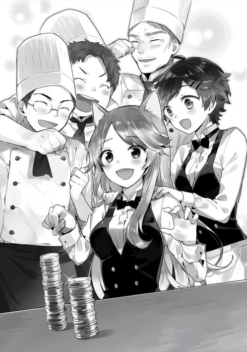
レミィに目を向けると、必死に何かをこらえているようだ。幸助も久々の充実感に満たされている。隣を向くと、サラも同じ気持ちのようだ。二人とも一時は失敗を覚悟した。修行の失敗にリニューアルオープンの失敗。今までになく困難な道のりであった。道のりが困難であったからこそ、その喜びも大きい。幸助はサラと視線を合わせると、パチンとハイタッチをする。
こうしてレミィの店の改善は、成功裏に終了することとなった。
◇
一週間後。レミィの店のドアには「本日貸し切り」のプレートが掲げられていた。
「では、売上目標達成を祝して乾杯」
「かんぱーい！」
冷えたエールをゴクゴクと一気に飲み干す幸助。営業中は気を遣ってゆっくり飲んでいたが、今夜は関係ない。身内だけで行う打ち上げの場なのだから。
「ぷっはぁ！ やっぱりこの一杯のために僕は働いてるんだよ！」
結局、初めて売上目標を達成してから連日、その記録を更新し続けた。名簿はあるが住所が分からなかった客も、噂を聞きつけ来てくれるようになった。まだ満席には程遠いが、今までのことを考えれば大成功である。
「うれしかったのです！」
「僕もです。こんなに喜んでもらえるだなんて......感無量です」
晴れやかな表情のセリカと、腕を目に当てる料理長。二人は誰よりも長くこの店にいる。良い時も悪い時も経験した。感動もひとしおだ。
「料理長、涙もろいの」
「う......うるさいやい！」
テーブルの上にはオードブルがたくさん並んでいる。それぞれの料理に舌鼓を打つ従業員たち。幸助は従業員それぞれにねぎらいの言葉をかける。一通り幸助が回ったことを確認すると、グラスを手にしたサラがやって来る。
「やっぱりコースケさんはすごいね！」
「サラもよく頑張ったよ」
「ありがと！」
「海鮮料理でお客さんに喜んでもらえたのは、サラのおかげだしね」
「じゃあ、乾杯しよ、コースケさん」
二人で小さく乾杯をし、エールを飲む幸助。そんな様子を見ていたレミィが口を挟む。
「相変わらず仲がいいね。で、二人はいつ結婚するの？」
ぶーーー!!
盛大にエールを噴き出す幸助。一部が鼻に入りゴホゴホとむせる。サラはサラで顔を真っ赤にし、呆然と立ち尽くしている。
「レレレレミィさん、何を突然!?」
「そ、そうですよレミィさん......。私たちまだそんな話全然」
「む、まだ婚約もしてないの？ 結婚式には是非呼んでね」
あははと笑うとレミィはポンと幸助の背中をたたき、料理をつつきに行く。二人きりになった幸助とサラ。一瞬顔を見合わすが、恥ずかしそうに顔を逸らす。どうしたらよいか分からず、幸助はごまかすように目の前の料理に手を伸ばす。
「ほら、サラ。これおいしいよ」
「う、うん......。ほんとだ！」
その後も「これもおいしいね」などと仲良く料理をつつく幸助とサラ。他の従業員たちもワイワイと楽しそうに過ごしている。今まで何をやっても認めてもらえなかった従業員たち。それが幸助から、レミィから、そして何より客から認められたというのは大きかった。初めての大きな達成感に包まれている。
テーブルの上のオードブルがあらかた皆の胃に収まった頃。酔っぱらったレミィが再び幸助に絡んでくる。
「ねぇ、コースケぇ」
「ど、どうしました？」
「これがコースケの言ってた『達成の充実感』ってやつね」
「そうですよ。どうですか？ 実際に体感してみて」
「うん......悪くないね......。悪くない。でもさぁ......」
レミィの様子がおかしい。幸助は変なことでも言ってしまったのかと心配する。
「あたしって、この仕事向いてないよね」
「えっ、突然どうしたんですか？」
「だってさー。接客は下手だし料理もできないんだよ。あたしなんて、いなくても良くない？」
相当飲んでいる様子だ。普段は元気なレミィが、後ろ向きになっている。
「レミィさんができなくても、セリカさんのように接客ができる人もいるし、料理長のように素晴らしい料理ができる人もいるじゃないですか」
「むぅ......。どーせ、どーせ、あたしなんて店にいる価値ないってことだ」
大げさに首を左右に振るレミィ。励ますつもりが追い打ちをかけてしまった。今度はしっかりと言葉を選んでから発言する。
「レミィさん、仕事は適材適所ですよ」
「てきざい、てきしょ......？」
「はい。料理が得意な人が厨房に立ち、接客が得意な人がホールに立つ。レストランの仕事は他にもいっぱいありますよね。レミィさんはレミィさんが輝くポジションで頑張ったらいいんですよ」
「あたしが輝くポジションねぇ」
今回の改善を経て、顧客データベースの整備も重要な仕事の一つとなった。食材や酒の調達も、料理の出来を左右する重要な仕事だ。他にも経理やマネジメントなど、やるべき仕事は多い。遠い目をしていたレミィは、パッと笑顔になると続ける。
「あはは。よくわかんないけど考えてみるー」
「そうそう。レミィさんは元気でなくっちゃ」
「よし、コースケ。まだまだ飲むよー！」
ワインボトルを手に取ると、幸助のグラスへ並々と注ぐ。賑やかな宴会は、夜遅くまで続く。
◇
数日後。店の前には幸助や従業員たちと向かい合い、大きな背嚢を背負うレミィの姿があった。
「セリカ、店のこと任せたよ！」
「はいっ！」
「料理長、ウチの店一番のベテランとしてこれからも頼りにしてるよ」
「ありがとうございます。腕のなる食材、楽しみにしてますね」
従業員たちそれぞれに声をかけたレミィは、最後に幸助と向かい合う。
「レミィさん。やっぱり旅に出るんですね」
「接客はダメ。料理もダメ。これがあたしの一番活きる場所なの」
今までも珍しい食材を探す旅に出ていたレミィ。悩んだ末、店は頼りがいのあるスタッフに任せ、自分は食材探しや他の裏方仕事に徹することに決めたのだった。行商をしている父親譲りの性格は変えることができなかったようだ。
「コースケ、ほんとに世話になったよ。感謝してもしきれないくらい」
「いえ、僕ができることをしたまでですから。それよりも珍しい食材を見つけても、メニューに入れる時は皆さんとよく相談するんですよ」
「むぅ、分かってるよ！ それじゃ、みんな。あとはよろしくね！」
大きく手を振ると背を向け歩き出すレミィ。きっとレミィは王都の誰も見たことのない、おいしい食材を見つけてくるのであろう。
店から笑顔を絶やさないために。
かいぜん！用語集 第８章
顧客データベース【こきゃく・でーたべーす】
顧客についての情報を収集・整理するためのソフトウェアのこと。顧客管理ソフトやCRMともいう。請求書などを発行する売掛管理ソフトや、POSレジの機能として備わっている場合もある。
顧客管理ソフトを運用するうえで大切なのは、「データを使って何をしたいか」を考えることだ。たとえば、二ヶ月間来店していない客へ「そろそろいかがですか？」と案内すれば、流出顧客が減るのではと仮説を立てた場合、来店日や氏名、連絡先（メール・住所・電話番号）などが必要となる。
リピーター【りぴーたー】
繰り返し来店してくれる顧客のこと。業種や業態により、一ヶ月に何回来てくれればよいかという指標は異なる。
特に大切なのは、初回来店客をいかに二回目の来店につなげられるかということ。これがスムーズにならないと、いつまでもコストのかかる新規客を追うことになる。レミィのレストランでは、味・空間・接客を、顧客が期待する高いレベルに揃えることで解決しようとした。
成功体験【せいこう・たいけん】
大きな受注をとれたり、プロジェクトを成功できた時の喜びは大きい。その経験が、また次も頑張ろうというエネルギーにつながることは間違いない。
だが、そのような成功はいつでもできる訳ではない。経営が右肩下がりの状態ならば尚更である。失敗続きでは仕事も楽しくなく、それがまた実績へ反映されるという負のスパイラルに陥ってしまう。
そのような場合に有効なのが、成功体験をしてもらうことだ。どんな小さなことでも良い。小さなことを達成したら、それを評価することを繰り返すことで、自信を持つことができるようになる。それが大きな仕事の成功へとつながるのだ。
第１章で、立て看板プロジェクトが成功した後、サラが「私、初めて仕事が楽しいって思えたかも」と言ったことも、成功体験を表している。
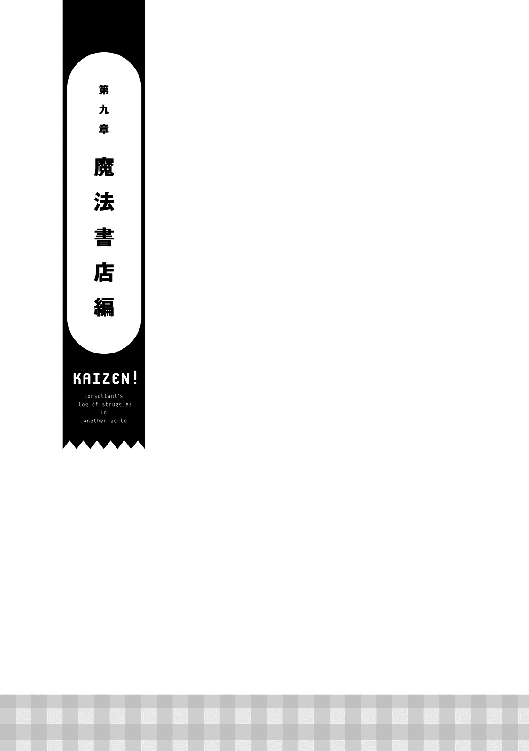
夜の訪れが日に日に早くなる季節の、とある日の夕方。黒い外壁に小さな窓が四枚はめられたお洒落な店の前に、乗合馬車が停まった。
「懐かしいなぁ」
「コースケさんはすっごく久しぶりだもんね！」
馬車から降りてきたのは幸助とサラだ。二人は久しぶりにアヴィーラ伯爵領へ帰ってきた。サラは王都のレストランに勤めるセリカの修行で一度帰ってきたが、幸助は同行していなかった。
王都へ発ったのは春。実に季節は二つも巡っている。当初は魔道具店の販売を手伝いがてら観光をするという予定であった。それが、偽魔石の事故や廃業寸前のレストランオーナーと出会ったことで状況は一変。苦しく忙しい毎日を過ごすこととなったのだ。
ようやく帰ってこれた。幸助は感慨深く『アロルドのパスタ亭』と書かれたプレートを眺める。
ギィ、と懐かしい音と共にドアが開く。薄暗い店内には既にランプが灯されていた。所狭しと並んだテーブルが淡く照らし出されている。
「アロルドさん、お久しぶりです」
「ただいま！ お父さん」
「おう！ 帰ってきたか」
厨房にいたアロルドが二人を出迎える。以前のような感極まった様子はない。娘が長期間外出することにも慣れてきたようだ。
「で、その後はどうだったんだ」
「王都のレストランはうまくいきました」
「ちゃんとお店の人たちだけでメニューの問題も解決できたしね」
「そうか......。それは良かった」
「逆に修行がうまくいかなかったから、店の皆で解決できたってのもありますしね。......うん？」
ここで幸助は厨房わきに置かれている紙に気付く。材料や調理法などが書かれている。どうやらレシピのようだ。
「アロルドさん、これ新作のレシピですか？」そう言いながらレシピを手に取る幸助。
「あっ、お前には関係ない！」
慌てて乱雑に紙を取り上げると、ぐちゃぐちゃに丸めてポケットにしまう。レシピは料理人の命だ。その扱いにサラは「えっ」と声を漏らす。
「それはボツになったやつだ」
「そ、そうですか。ならいいんですが......」
実は、アロルドはセリカの修行がうまくいかなかったことを気にかけていた。このままではサラだけでなく幸助も困るだろう。そう思い、せめてレシピだけでも送ろうと考えていたのだ。残念ながらそのレシピが日の目を見ることはなくなってしまった。
「おし、お前ら腹減っただろう。何か作ってやるから待ってろ」
その後、幸助は久々のアロルドの味に舌鼓を打つ。トマトバジルパスタに、ハンバーグもしっかりと食べた。さて、住み慣れた宿に戻ろう。幸助がそう思った時、アロルドが小皿を持ってくる。
「アロルドさん。これ、何ですか？」
「試してみろ。新作の菓子だ」
皿の上には濃いクリーム色でサイコロ状のものが何個も載っていた。幸助はそれを一つつまむと口に放り込む。柔らかく甘い味わいが口に広がる。それは、生キャラメルそのものだった。
「うん、おいしいですね！ 久しぶりに生キャラメル食べましたよ」
「何だ、またお前は知ってたのか」
幸助を驚かしてやろうと考えていたアロルドは肩を落とす。
「い、いえ。僕ではレシピも知らないし作れなかったですから。すごいですよ、アロルドさん！ 日々進化してますね」
「お父さん、おいしいよ！」
「そ、そうか......」
ポリポリと頬をかくアロルド。いつもの雰囲気が戻ってきたことでホッとする幸助。やはりここが落ち着く場所なのだと再確認する。
◇
翌朝、しっかりと寝た幸助は宿で遅めの朝食を済ますと、メインストリートを西へ向かう。小麦屋を営むルティアの店へ行くためだ。
「何だか活気が増えた気がするな」
歩きながら町の様子を観察する幸助。王都へ発つ前よりも、賑わいが増したように感じる。特に馬車の数は確実に増えている。今までであればパラパラと見かける程度だったのが、列をなして石畳を駆け抜けている馬車まである。
「お久しぶりです、ルティアさん」
宿からルティアの店までは徒歩五分程度だ。あっという間に到着した。
「あら、コースケ。久しぶりね」
「ようやく王都から帰ってきました」
「どうだった？ 王都のレストラン。サラちゃんから大変だって話は聞いたんだけど」
修行に帰っていたサラから、王都の様子は聞いていたルティア。それにアロルドの店で修行している様子を目にしている。順調そうな様子ではなかったことを気にかけていた。
「はい。何とか無事に終えることができました」
「ふふ。やっぱりコースケは何でもできちゃうのね」
そう言いながら、しっとりした紫の髪をかき上げるルティア。まだ秋口だ。薄手の服を着たルティアを相手に、目のやりどころに困る幸助。
「えっと、ルティアさんの商売は順調ですか？」
「コースケのおかげで順調そのものよ」
相変わらずルティアの店は、オリーブオイル不足が続いている。親戚が生産するほとんどをこの店でさばいている状況だ。すぐに増産もできない。それに、魔道コンロの普及率も右肩上がりで上昇中。消耗品である魔石からの収益もバカにならない。
「それは良かったです。何だか王都に行く前よりも町に活気が溢れてる感じがしますしね」
「周りの町や村から人が集まってるみたいよ。ほら、コースケが魔道具の普及、頑張ったでしょ。だから仕事がたくさんあるみたいなの」
「へえ、それはすごいですね！」
「それはすごいって、他人事みたいな言い方ねぇ」
魔道具が国中に広がるにつれ、アヴィーラ伯爵領は「魔道具のメッカ」というイメージが急速に広がっている。最先端の町ならば仕事もあるはず。その期待感から、国内から多くの労働者が流れ込んでいる。実際に仕事も多い。大規模な魔道具工場も稼働している。出稼ぎ労働者が住まう住宅も宿屋も供給不足の状況だ。
アヴィーラ伯爵領では今、良い循環が起きている。冒険者は魔石の採掘に。鍛冶屋は魔道具のパーツ作成に。出稼ぎ労働者は魔道具の組立や金属の採掘、精錬に勤しんでいる。それを引き起こしたのは他ならぬ幸助だ。
「それにね。住宅街の端のさびれてた場所に、新しい市場もできたの知ってる？」
「新しい市場、ですか？」
「そうなの。揃えられないものはないくらい商品が充実してるんだよ」
あたしはまだ一回しか行ってないけどね、とルティアは続ける。
人も増え、新しい市場もできた。幸助に行かない理由はない。
「ルティアさん、いい情報をありがとうございます。早速行ってみます！」
「あら、もう行っちゃうの？ 早すぎない？」
「あ、えっとですね......」
その後、小一時間ルティアと雑談をすると、幸助は店を後にする。ルティアに教えられた通り、新しい市場行きの馬車に乗る。公営の乗合馬車でなく、市場の運営者が運行しているのだそう。
「へぇ、アウトレットモールみたいだな」
着いた場所はアヴィーラ伯爵領の南東側。魔物除けのため町を囲う外壁のすぐそばだ。もともと何もなかった場所に、木造の真新しい店が数えきれないくらい並んでいる。
「ほらあなた、こんな滑らかな真っ白な手袋が買えたわ。貴族様になった気分よ」
楽しそうな客の声が幸助の耳に届く。人の数も店の数も多い。評判も上々のようだ。
「さて、どこから行こうかな」
モール内を目的もなくぶらつく幸助。レストランやテイクアウトの屋台を始め、服屋、食品店、金物屋など、本当に生活に必要なものは何でも揃いそうな勢いだ。それだけでなく、冒険者向けの装備を売る店まであった。
「あ、こんな店もあるんだ」
そんな中、幸助はある店の前で足を止める。看板には「魔法屋」と書かれている。添えられたイラストは杖とローブの絵だ。武器屋はホルガーの店で深く関わった。だが魔法に触れることは、全くなかったことを思い出す。召喚直後に適性がないと言われてはいたものの、興味をひかれた幸助は魔法屋に入る。
入り口をくぐると、真新しい木の香りが幸助を包む。間口は狭く奥行きが長い、ウナギの寝床のような店だ。幸助は店員を横目に奥へ進む。壁面には杖やローブなどが所狭しと並んでいる。その価格はどれも金貨二桁。魔法使いは希少なため、単価も相応に高くなっているようだ。更に奥に進むと、お香のような別な香りも混ざってきた。陳列されている商品は、装備から小物へと変わっていく。魔石のようなものもあるが、幸助にはそれらが何の道具なのかは皆目見当がつかない。
「あっ、本だ」
店の一番奥には、棚一本分の本が並んでいた。高いところに並んでいる本には柵がついており手に取れなかったが、下の方は柵がない。その中の一冊を手に取る幸助。タイトルには「初級火魔法入門」と書かれていた。これは、魔法書と言われているものだ。新たな魔法を身に着けるには、魔法書を使うことが必須となる。もっとも、本人の適性もあるため、魔法書があっても、ほとんどの人が使えないのが現実なのだが......。
「僕も魔法使えないのかなぁ」
ペラペラとページをめくるが、それほどページ数は多くない。それも抽象的なことばかり書かれており、イマイチ使い方が分からない。そのため幸助は店員に声をかける。
「すいません、これってどう使うんですか？」
「それはね、魔法書に手をかざして最初のページに書かれている呪文を読み上げるの。そうすれば魔法書の魔力があなたに移る感覚があるはずよ。あとは次のページに書かれたことを練習して、発動できるように頑張るの」
もちろん魔法の適性がないとダメだけどね、と店員は続ける。
「これっていくらですか？」
「入門書は金貨一枚に大銀貨二枚よ」
男子の夢である魔法を放つことができるなら金貨一枚少々など安い。一度でいいからこの手から火をぶっ放してみたい。そう思った幸助は、購入を決める。
「では、これ買って帰ります」
「はい、ありがとね！」
魔法屋を出ると、幸助は先ほど見つけた肉串の屋台へ向かう。何の肉があるのかなと楽しみに想像しつつ歩いていると、果物屋の前で、緑色のポンチョを纏った少女が目に留まる。フードには耳のようなものがついている。カエル変装グッズのようだ。背格好は小学生中学年くらいだろうか。キョロキョロと辺りを窺っている。
（あの子、怪しいぞ）
幸助がそう思った矢先、少女はリンゴらしき果物を懐へ入れると、そのまま走ってモールの外へ向かう。案の定、万引きを働いた。万引きは窃盗だ。店へ与えるダメージも小さくない。仮にポテチ一袋を万引きされた場合、同じものを四袋は売らなければ損失は取り返せないのだ。正義感から追いかける幸助。小学生くらいならすぐに追いつくだろうと高をくくっていたが、距離は縮まらない。あっという間にモールの外へ出て、更には魔物除けの外壁の隙間から外へ出て行ってしまった。
「えっ!? 外に行くの危ないんじゃ......」
幸助も腹を引っ込め狭い隙間から外へ出る。追いかけること数分。少女は、穀倉地帯に場違いのごとく生い茂っている小さな森の中に消えていった。
少女を追い森の中に入ると、空気が一変した。辺りは暗くなり、濃密な植物の匂いが幸助の鼻を刺激する。茂みからはカサカサと音がする。少しだけ心細くなる幸助。勇気半分興味半分で湿った土を踏みしめ前に進むと、一軒の建物が見えてきた。
「こんな場所に何でこんな建物が......？」
日本であれば神社の本殿でもありそうなその場所には、店舗のような建物があった。外壁は汚れ、ツタが絡みついている。永らくメンテナンスされてないようだ。入り口のドアには店名のプレートを掲げるための金具がついている。だが、肝心なプレートは朽ち落ちたのか取り外したのか、見当たらない。恐るおそるドアに手をかけると、一瞬体の中に何か走る感覚が幸助を襲う。
（変な雰囲気だなぁ......）
鍵はかかっていなかった。ギィィィィッと不気味な音を立てながら開くドア。そのまま足を踏み入れる幸助。
（うわっ、ホコリ臭っ！）
店内の匂いに思わずせき込む幸助。ドアがバタンと閉まる。その音にビクッとする幸助。落ち着いて店内を見渡すと、狭い通路の両脇にはびっしりと本が並んでいた。東京神田の古書店のようだ。背表紙には何か文字が書かれているが、幸助には読めなかった。
（本屋？ でも何でこんなとこに）
棚から一冊を手に取りペラペラとページをめくってみるが、やはり本文も読めない。奥へ歩き進めると、店の造りとしては定番のカウンターがあった。やはり店で間違いないようだ。カウンターの奥には、先ほどの少女がかぶっていたカエルフードがかかっている。
ここに少女がいるのは間違いない。幸助がそう確信した時、後ろから、ヒタ、ヒタと足音が近づいてくるのに気付く。幸助の緊張感が高まったその時──。
「誰じゃお主は。どうやって入ってきた！」
「！！！」
ゆっくりと振り返ると、そこには少女の姿があった。前がきれいに切りそろえられた、まるで日本人形のようなサラサラで真っ黒な髪に、クリッとした深緑の目。背格好からして先ほどの少女に間違いない。妖怪の類でなかったことに幸助は安堵する。
「えっ、どうやって入ってきたも何も、入り口から普通に......」
「選ばれし者しか入ってこれない結界が張ってあるというのに」と、幸助に聞こえないくらいの小声でブツブツ言う少女。
「ところでここってお店かな？」
「ここは魔法書店じゃ。見て分からぬのか」
ということは、ここにある本はすべて魔法書ということだ。幸助が先ほど買ったモール内の店と比べると、品揃えは桁違いである。
「お嬢ちゃんはここの子なのかな？」
「ここの子も何も、ここは妾の店じゃ」
「へぇ。店番を手伝ってるんだ」
この国では小さい子が店番に動員されることはままある。大切な戦力になるからだ。感心した幸助は「小さいのにえらいね」と言いながら少女の頭をポンポンする。しかし、少女は反射的に幸助の手を払いのける。
「これっ、無礼者。何をするか！ 子供とは失礼な！ 古より永きに渡り受け継がれた伝統ある魔法書店をこの地に開いて二百余年。お主の十倍は生きておるわ」
店構えからして古くからやってそうなのは間違いない。魔法書店という業種柄、そのような設定も大切なんだろうと考える幸助。
「そっかそっか、ゴメンね。そんな由緒ある店とは知らなかったよ」
「分かればいいんじゃ。それにしても今時の若いもんは妾のことも知らぬのか」
「うん。知らなかったなぁ」
一介の店の娘など知る由もない幸助。素直にそう答える。そんな幸助の反応に、はぁと大きなため息をつく少女。
「妾の名はアレストリア・ピータンじゃ。聞いたことはないのか？」
「ごめんね、聞いたことないなぁ。僕は幸助だよ。あ、そうだ。魔法書といえば......」
そう言いながら先ほど購入したばかりの魔法書を取り出す。表紙には「初級火魔法入門」と書かれている。
「これ、すぐそこの店で買ってきたんだけど同じものかな？」
「はぁ。お主もか......」。再び大きなため息をつくアレストリア。
「えっ、どうしたの？」
「粗製乱造された魔法書など使っても、良い魔法使いにはなれぬぞ」
それからも「最近の若いもんはなっとらん」とか「楽して覚えようとして」などとブツブツ続ける。幸助が手にしたものはアレストリアの目からすると粗悪品のようだ。金貨一枚以上を無駄にしたのかもしれない。そんなこととは露知らず購入した幸助はアレストリアに訊く。
「え、えっと......どういうこと？」
「しかたない。どうせ暇じゃ。本物の魔法書について教えてやる」
それからアレストリアは、幸助に本物の魔法書とはいかなるものかを説明する。言語は古代言語の方が体になじみやすいこと。本に書かれている内容は安物と比べても大差ないこと。一番大きな違いは、本に内包された魔力の質だそうだ。アレストリアの説明は丁寧で分かりやすく、魔法素人の幸助にもよく理解でき、ストンと胸に落ちるものであった。
「妾が講釈を垂れるなど貴重な機会ぞよ。ありがたく胸に刻むがよい」
「うん、ありがとう。すごく勉強になったよ」
「礼などいらぬ。取り敢えず買ったものを試すがよい。妾の言わんとすることが分かるであろう」
幸助はアレストリアにお礼を言うと、店を後にする。
（何だかんだでちゃんと勉強してるみたいだったなぁ。まだ小さいのに話に筋が通ってたし、英才教育でも受けてるのかな）
そんな感想を抱きつつ、店に背を向け歩き出す。久しぶりに全く知らない知識が入った充足感に満たされる幸助。薄暗い森を抜けると、再び外壁の隙間からショッピングモールに戻り、そのまま宿へ帰る。
「さてと、試してみるか」
宿へ帰るとテーブルの上に魔法書を開き、店員に言われた通り両手をかざす。そして最初のページに書かれている呪文を一気に読み上げた。緊張しながら魔法書の発動を待つ。
「............」
「......」
しかし何も起こらない。一字一句間違えずに唱えたにもかかわらず。店員は魔力が体に移る感覚があると言っていた。幸助のやり方が悪いのか魔法書が悪いのかは分からない。いずれにしても、実験は失敗だ。魔法書を閉じると、幸助はベッドへ身を投げる。
「アレストリアちゃんの言う通り粗悪品だったのかな。金貨一枚、もったいなかったなぁ......」
◇
翌日の朝。昨日のことが気になった幸助は、再び魔法書店を訪れる。森を抜け店に入ると、魔法書を開き何かの作業しているアレストリアの姿があった。
「何じゃ、お主。また来たのか」
「アレストリアちゃんこんにちは。またいろいろ話がしたくてね」
「アレストリア......ちゃん？」
「普通は様とか殿じゃろう」とブツブツつぶやくアレストリア。その反応で、友達もいないのかと心配をする幸助。他に人の気配はない。いつも一人で店番をしているようだ。開いていた魔法書をパタンと閉じると、アレストリアは立ち上がる。
「それにしてもお主、変わった奴じゃのう」
「えっ、そうかな？」
「まあ良い。して、今日は何をしに来たのじゃ」
「えっと、昨日言ってた粗製乱造されたっていう魔法書なんだけど......」
それから幸助は、魔法書が発動すらしなかったことを説明する。競合店であろう店の商品の相談をするのも失礼かなと思ったが、取り敢えず試してみろと言われていたので、その報告がてらである。
「ほら見ろ。だから粗悪品と言ったじゃろう」
「でも、金貨一枚以上もしたのに......」
「そんなはした金、勉強代と思って諦めるがよい」
「でもそれでも魔法を身に着けられる人はいるんでしょ？」
「もちろん。じゃが、その可能性もあれでは低くなってしまう」
「そっか。ありがとね。いろいろ教えてくれて」
お礼にここの魔法書を買って帰ろうかと思いカウンターへ視線を移すと、幸助の目にあるものが入る。リンゴの芯だ。ここで幸助は、大事なことを忘れていたことに気付く。
「あ、思い出した！」
「なんじゃ突然声を上げて」
「昨日、果物屋さんで見ちゃったからね」
「な、何を見たのじゃ」
「リンゴ、お店から盗ったでしょ」
「ギク......」
「怒らないから話してごらん。何でそんなことしたの？」
「お主には関係のないことじゃ！」
「関係ないことないよ。じゃあ、僕もここにある魔法書を一冊、お金を払わずに持って帰ってもいいのかな？」
「そ......それは......」
俯くアレストリア。自分がしたことが理解できたようだ。たかがリンゴ一つ。されどリンゴ一つ。万引きは立派な犯罪だ。観念したのか、アレストリアは顔を上げるとゆっくりと口を開く。
「閑古鳥が鳴きっぱなしなのじゃ......」
「えっ？」
「だから、妾の店は暇なのじゃよ」
「果物を買うお金がないくらいに......？」
「そうじゃ」
そう言うと寂しげな表情を浮かべるアレストリア。はっきり言って立地は良くない。町の最果て、しかも外壁の外だ。ここに客が来ないことは致し方ないであろう。
「じゃが、腹は減るし......」そう言うと自分の腹をさするアレストリア。
「そっか。そういうことなんだ。よく話してくれたね」
幸助はアレストリアの頭をポンポンする。昨日のように払いのけることはなく、その手を受け入れる。
「ちゃんと話してくれたから、これ、あげるよ」
そう言うと幸助は、アロルドからもらったキャラメルを差し出す。それを手に取ると、しげしげと見るアレストリア。
「何じゃ、これは？」
「食べてごらん。甘くておいしいよ」
そう言うと幸助は別のキャラメルを手に取り、包装をはがすと自分の口へ放り込む。その様子を見ておずおずと真似をするアレストリア。口へ入れモゴモゴと動かすこと数秒。突然大きく目を見開く。
「なんじゃこれは!?」
「キャラメルっていうお菓子だよ」
無我夢中で口を動かすアレストリア。あっという間に溶けてなくなると、名残惜しそうな目をする。無言で差し出す手に、幸助はもう一つキャラメルを載せる。
「おいしいでしょ」
「うむ。長生きはするものじゃな」
かなりご満悦の様子だ。アレストリアは今までで一番いい表情をしている。
「そういえば、店番はずっと一人でやってるの？」
「そうじゃ」
「お父さんとお母さんは？」
「んなものとっくの昔に逝っておるわ」
「えっ、そうだったんだ......」
アレストリアがたった一人で店番をしている理由は、両親が亡くなっていたからであった。余計な質問をしてしまったことを悔やむ幸助。
「じゃが、両親が逝ったことと閑古鳥は関係ないぞ。十年前まではちゃんと来てくれる奴がいたんじゃ」
そう言うと遠い目をするアレストリア。
「そうなんだ。なら、お客さんが来なくなる理由があったんだね」
「そうじゃ。お主が手にしておった安直な魔法書。それが諸悪の根源じゃ。それが流れ込んでからというもの、皆は楽な方、楽な方へ行くようになってしまったんじゃ。常連も一人逝き、二人逝き......。いつの間にか妾の店の門をたたく者はおらんくなってしまった」
アレストリアの店が大変な状況になったきっかけは、競合の出現であった。そもそも立地もおかしい。逆に今までよく潰れなかったなと感心する幸助。
「そっか。大変だったんだね」
「大変ではないぞ。暇なだけで」
「そのことを大変って言ったの。リンゴ一つ買えなくなっちゃったんでしょ？」
「それはそうじゃが......」
「それに、一人でこんな場所で危険じゃない？」
「結界が守ってくれるから安心せい」
結界がどれほどのものかは知らない幸助。本人がそう言うのだから大丈夫なのだろうと考える。それよりも気になったのは一人で店番をずっとしているということだ。この世界では早くから仕事をする子供は多い。パロだって、まだあんなに小さいのにしっかりと店番をしている。だが、パロにはホルガーという保護者がいる。アレストリアは本当に独りぼっちだ。
（両親もいなくて頑張ってるもんな。魔法書ってよく分からないけど冒険者の武器みたいなものでしょ。立地っていう極めて不利な環境はあるけど、何とかなるんじゃないか）
年数を除いて、アレストリアの話はすべて本当のことに感じられた。万引きだって正直に認めた。独り奮闘する少女の力にならねばという熱い気持ちが湧き上がる。
「ねえ、アレストリアちゃん」
「な、なんじゃ......。怖い顔をしおって」
幸助の鋭い視線に若干引き気味のアレストリア。そのクリッとした緑色の目をしっかりと捉えると、幸助は力強く宣言する。
「あなたのお店、僕が流行らせてみせます！」
「何を言っておるのじゃ？」
きょとんとした表情を浮かべるアレストリア。幸助の言葉が理解できていないのかもしれない。そう思い、幸助は自分のことを説明する。
「あのね、アレストリアちゃん。僕は経営コンサルタントなんだ。この魔法書店みたいに、お客さんがいないお店にお客さんが来るようにするのが僕の仕事なの。本当はお金をもらってやる仕事なんだけど今回は要らないからさ。僕と一緒に食事には困らないくらいにお店を立て直してみない？」
「断る。余計なお世話じゃ」。即答するアレストリア。
「お客さんが来てくれないと......」
「そんなの待っておればいずれやって来るじゃろ」
「でも、今日売れないと明日のご飯に困るんでしょ？」
ここで言葉に詰まるアレストリア。ずっと待ちに徹していた結果、現状がある。今まで幸助が見てきたどの店よりも状況は悪い。幸助はこの状況を見過ごす訳にはいかなかった。
「ね、僕にもお店を手伝わせてくれないかな？」
「............」
「......」
「ならば、どうやって流行らせるのじゃ？ 言うてみい」
「魔法が必要なのは冒険者でしょ？ だから冒険者に売り込めばいいんじゃないかな？」
はぁ、と大きなため息をつくアレストリア。どうやら期待外れのことを言ってしまったようだ。
「最近の冒険者はなっとらんと言ったじゃろ。奴ら、楽な方にばかり逃げおってからに。お主は偉大な賢者ダンダイルを知っておるか？」
全然聞いたことのない名前が出てきた。幸助は首を横に振る。
「うちの魔法書でしっかりと基礎を学んだから歴史に名を遺したんじゃ。アイツもじゃ。宮廷魔法使いとして名を馳せた......」
「......」
名前を思い出せないようだ。長い沈黙が続いたため、幸助は別な話題を振る。
「えっと、お客さんはどのくらい来てくれるのが理想か教えてもらっていいかな？ 一週間に一回、それとも毎日かな？」
「そんな毎日来なくてもよい」
「なら一ヶ月に一人くらい？」
「いや、一年に一人くらい買ってくれれば御の字じゃ」
とんでもなく長い期間がアレストリアの口から飛び出した。それが嘘でないならば、相応の価格のはずだ。
「それって、相当値段が高いんじゃない......かな？」
「もちろんじゃ。入門書が金貨百枚からじゃからの」
金貨百枚から。マンションのような価格設定に唖然とする幸助。昨日幸助が買った競合店の実に百倍近くだ。
「えっと......それじゃあ、この前売れたのはいつ？」
「うむむ、よく覚えておらぬが十年位前じゃ。そやつは今ではどこかの貴族のお抱え魔法使いになっておるぞ」
そう言うと両手を腰に当て、エッヘンと胸を張る。
「ここにある魔法書を使えば誰でもできるようになるの？」
「誰でもと保証はできぬ。とはいえ、素質がゼロの奴はゼロのままじゃが、今まで見たことはない。一のヤツは五十くらいにはできるし百を持ってるヤツは万にしてやることができる」
（へえ、すごいなぁ。でもそんな来店頻度じゃ商売にはならないよな）
幸助がそう考えていたその時。
ぐるるー。
アレストリアの腹の虫が盛大に騒ぎ出した。リンゴ一つを盗むくらい追い込まれていた。ここ数日はろくに食べていないに違いない。幸助はそう心配する。
「アレストリアちゃん、お腹減ってるんだ」
「へ、減ってなどおらぬ......」
「まずは昨日の果物屋さんに謝りに行こ。そうしたらおいしいご飯を食べさせてあげるからさ」
「そんなみっともないことはせぬ！」
「どっちがみっともないのかなぁ。悪いことをする人。それとも悪いことをしたことをちゃんと謝れる人？」
「......」
「せっかくキャラメルを作った人のお店に連れてってあげようと思ったのに。お菓子だけじゃなくて料理もおいしいのになぁ」
「わ......分かった。仕方ない。お主の顔に免じて行ってやろう」
「アレストリアちゃんのためだからね」
アレストリアは不本意そうだが、いそいそと出かける支度をする。壁にかかったカエルフードのポンチョを手に取ると、頭からずぼっとかぶる。
「この子がリンゴを一個勝手に持ってっちゃいまして。おいくらでした？」
モール内の果物屋へ行くと、幸助は小銭入れを取り出しつつ店主に事の顛末を伝える。幸助は「ほらちゃんと頭を下げて」と言うとアレストリアの頭をおさえる。
「えっ!? 持ってってなんかないはずです。お気になさらず!!」
「いや、本人も認めてますし、ちゃんとお支払いしますよ」
それでもお金を受け取ることを拒否する店主。この反応で、この世界には盗まれる方に隙があるのが悪いという空気もあることを思い出す幸助。埒が明かなかったので適当に銅貨を置いて店を後にする。そしてそのまま乗合馬車で『アロルドのパスタ亭』へ向かう。
食事だけならばモール内の食堂でもよかった。だが、まだまだ謎の多いアレストリア。アロルドの店に行きがてら、サラやアロルドに話を聞いてみようと考えたのだ。
「へぇ、へぇ。町はこんな風になっとったのじゃな！」
アレストリアは馬車の中から移り行く風景を嬉しそうに見ている。町の外れでずっと店番をしていたため、新鮮な経験のようだ。その様子をほほえましく見守る幸助。カエルフードも妙に似合っている。何だかんだで子供らしいとこもあるんだなぁと感じる。
「ねえ、アレストリアちゃん」
「何じゃ？」
「アレストリアちゃんのこと、ケロちゃんって呼んでもいい？」
「ケロちゃん？ なんじゃその呼び方は」
「そのカエルフードが良く似合ってるからさ。可愛いあだ名でしょ」
「か、可愛いじゃと!?」
顔を赤らめ斜め下を向きながらつぶやく。
「ま......まあよい。お主のみ......特別じゃぞ」
「なら決定だね！」
程なくして、二人は『アロルドのパスタ亭』へ到着した。昼の営業が終わる直前。ちょうど最後の客と入れ違いで二人は店に入る。
「あ、コースケさん！ ......と、えっ!?」
「サラ、ランチいいかな？」
「もちろん......だけど......」
「それなら、僕はワンプレートランチで、この子にはお子様ランチをよろしく」
注文を言うと幸助はお気に入りの席に腰かける。アレストリアもキョロキョロ店内を見回した後、幸助の隣の席に腰かける。一方、厨房へ注文を通しに行ったサラはアロルドとヒソヒソ話をする。
「ねえお父さん。もしかしてあの方って......」
「ああ。黒髪に緑の瞳。それに、宙を舞い、地を駆け、水をも制す自然界の覇者のフード。間違いなくアレストリア様だ。アイツ、何で一緒にいるんだ。それに何であんなに馴れ馴れしいんだ？」
「よく分からないけど、やっぱりすごいね。コースケさんって」
「おい、でもいいのか？ お子様ランチを出しちまって」
「コースケさんのことだし何か意図があるんでしょ。そのまま出そうよ」
「だな。そうする」
客席でランチができるのを待つ幸助は、アレストリアに店のことを質問する。
「何でアヴィーラ伯爵領の、しかもあんな外れた場所に店を構えたの？」
「何でもへったくれもあるか。妾が先にこの土地に店を構えたのじゃ。その後、初代アヴィーラ家の当主が勝手に来て町を建てたのじゃ」
「そ、そうなんだ......」
盛大に話を盛られたと感じた幸助。だが設定は大切にしてあげよう、そう心に決める。
「昔は繁盛してたの？」
「一年に一人は来てくれてたぞ」
来店頻度が一年に一人というのは極端に少ない。それでも単価が高いのでやっていくことはできそうだ。
「それで、来てくれる人はみんな何かの魔法書を買ってくれた？」
「いや、買ってくれたのは三人に一人くらいじゃ。そうそう金貨百枚も払えんじゃろ」
確かに金貨百枚を払える人は少ない。せいぜい貴族か名を馳せた冒険者くらいだろう。
「でも、この町にランクの高い冒険者はいないよ」
「そんなもん昔からじゃ。だから世界中から妾の店に来てくれていたのじゃ」
「なるほど。本物の魔法書を求めてやって来てくれたってことだね」
「物分かりがいいのう。そういうことじゃ。それが、それがあんな粗末な魔法書ごときに......」
あんなの魔法書なんかじゃないと悪態をつくアレストリア。だが、幸助としては品質はさておき、商売としては競合はうまくやっていると感じる。そもそも古代語など読める人はいるのだろうか。身に着けられる可能性は低いとしても、間違いなく庶民は分かりやすく現代語で書かれた安いものに手を伸ばすであろう。
「でもそれが便利だからみんなそっちに行っちゃたんだよね」
「うむ。そう言われると反論できぬ......」
そうこうしているうちに、ランチが出来上がった。ホカホカと湯気を立てたプレートを二枚手にしたサラがやって来た。
「お......お待たせいたしました。お子様ランチでございます」
アレストリアの前に、トマトバジルパスタとクマさんハンバーグの載ったお子様ランチプレートが置かれる。ハンバーグの上にはちゃんと旗が立っている。その様子に目を輝かせるアレストリア。
「なんと、今時の肉には旗が立っておるのか。見た目にもいいのぉ。たまには外へ出てみるもんじゃのぅ」
「はい、じゃあいただきましょう。いただきます」
両手を合わせる幸助。アレストリアは幸助には目もくれずフォークを手に取ると、ハンバーグにパスタ、それぞれを交互につつく。
「うんまっ！ こんなに美味い飯を食うのは久方ぶりじゃ。褒めてつかわす。コースケ」
「ははぁ、ありがたき幸せ」
何となく殿様ごっこのようで、そんな言葉に乗る幸助。アレストリアもまんざらではない様子で「ようやく妾の威厳が通じたか」とご満悦の様子だ。それから幸助は自分のランチを食べつつ、もきゅもきゅと頬張るその姿をほほえましく見守る。
「ほら、ちゃんとサラダも食べようね」
「生の野菜は苦手なのじゃ」
「バランスよく食べないと大きくなれないよ。おいしいドレッシングがかかってるから。食べてごらん」
ドレッシングはルティアのオリーブオイルを使った一級品だ。幸助に窘められ、渋々サラダへフォークを伸ばす。
「......うむ。生野菜にしてはうまいのぅ」
「でしょ。いいオリーブオイルを使ってるからね」
それから程なくして、アレストリアはサラダも含めて完食した。腹をさすりながら満足げな表情を浮かべている。
「げふっ。満腹じゃ。こんなに食ったのはいつ振りじゃろうか」
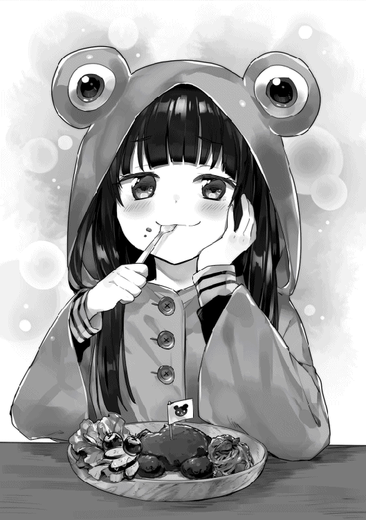
「えらい。ちゃんと残さず食べたね」と言いながら頭をポンポンする幸助。
アレストリアだけでなく幸助も満腹だ。王都では心労が絶えなかったため、食が細ったのかもしれない。幸助は会計をするため、サラを手招きする。
「サラ、この子──ケロちゃんっていうんだけど、一人で魔法書店を営んでるって」
「えっ、ケロ......？ アレストリア様......ですよね？」
「そうじゃ。妾が魔法書を護る者、アレストリアじゃ」
幸助は全く知らなかったが、町の住人であるサラは知っていた。そのことで、魔法書店は町ではある程度認知されているんだなと判断する。
「何だ。サラは知ってたんだ」
「も、もちろんだよ。すごい魔法書をいっぱい管理してらっしゃるんだからね」
「サラと申すのか。そなたのハンバーグとやら、絶品であったぞ」
「はっ。お褒めに与り恐縮です」
恭しくアレストリアに頭を下げるサラ。
「ほれ見ろ。これが妾に対する普通の態度じゃぞ」
（やっぱりサラは優しいな。相手にちゃんと話を合わせてあげるなんて。それはそうと、サラは魔法書店のこと知ってたみたいだし、商品の質は値段相応に高そうだぞ）
そんな感想を抱きつつ、幸助はアレストリアを店へ送り返す。途中、ショッピングモールで当座の食品も買い込んだ。この費用は魔法書が一冊売れたら返してもらうという約束だ。
◇
ここはアヴィーラ伯爵領の領主の館。アンナに向かいピシッと黒服に身を包んだ執事が、本日の出来事を報告しているところだ。
「アンナ様。市井でアレストリア様が目撃されたそうです」
「まあ！ それは朗報ですわ」
アレストリアは屋敷の使用人を通じて、年に数回食料などをまとめて買い込んでいた。しかしここ数ヶ月、全く姿を現さなかったのだ。だからアンナを始め屋敷の一同は心配をしていた。当人の金が尽きたことなど知る由もないアンナは、安堵の表情を浮かべる。
「ですがアンナ様、気になる情報も一緒に入っております」
「とおっしゃいますと......」
「黒髪の青年もアレストリア様と一緒に行動していたそうです」
手を口に当て驚くアンナ。黒髪の人はこの世界では珍しい。アンナですら知っているのは二人だけだ。アレストリアともう一人......。
「コースケさんに違いありませんわ！」
「はい。私もそう推察いたします」
「なぜ魔法書の番人とも言われる偉大なお方とコースケさんが......」
「私にも察しかねますが、ご本人に伺うのが最も早いかと」
「そうですね。早速手紙を認めます」
◇
アレストリアを店へ送ると、幸助は再びアロルドの店へ帰ってきた。
「サラ、魔法書ってどういうものなの？」
「魔法を覚えるために使う道具......ってイメージかな」
「どんな人が使うの？」
「うーん。文字が読める家庭だったら、十歳になるまでには一度試すんじゃないかなぁ」
私も試してもらったしね、とサラは続ける。サラの口ぶりからすると、幸助の想像よりも魔法書に触れたことがある人は多そうだ。魔法が使える人は重宝される。それなりに魔法が使えるようになれば、人生逆転も夢ではない。そう思えば金貨一枚など安い投資だ。
「ケロちゃんのところの魔法書は、どんなイメージがある？」
「ケロちゃんって何、その言い方？」苦笑しながらサラはそう言う。
「アレストリアちゃんのあだ名だよ。カエルのフードをかぶってたでしょ。カエルはケロケロ鳴くからケロちゃん」
「自然界の覇者の鳴き声知ってるんだ。コースケさんっていったい......」
「そう？ 故郷の田舎では毎年夏になると、それこそ大合唱だったけどなぁ」
「そっか。そうなんだ」
カエルを見たことがないということが意外に感じる幸助。逆にここには人を襲う魔物がいる。改めてここは異世界なんだなと感じるのであった。
「あ、それでね。アレストリア様の店にある魔法書はすごいみたいだよ。でも、敷居が高くなりすぎて、お貴族様でもそうそう手が出せないみたい。噂だと相当包んでも門前払いって話だよ。だから今では魔法書の番人って言われてるんだ」
「そんなに敷居が高いんだ......」
最低ラインの入門書で金貨百枚と言っていた。確かに敷居は極めて高い。番人という言葉が妙にしっくりくるなと感じる幸助。
「それにね、教えを請おうとしても、選ばれた人しか店に入れないって噂だよ」
「そうなの？」
「えっ......てことは、コースケさんは入れたの？」
「うん。普通に」
平然と答える幸助の言葉に、サラは唖然とする。
「やっぱりコースケさんはすごいなぁ。いつの間にかアレストリア様に認められてるんだから」
「そうかなぁ。鍵もかかってなかったし、誰でも入れる感じだったけど」
認めてもらうも何もただ普通に店に入っただけだ。幸助に選ばれたという感覚はない。
「でね、サラ。その魔法書なんだけど、値段を聞いたら入門書で金貨百枚なんだって」
「えっ、そんなにするんだ!?」
「すごいでしょ。それも全然読めない文字で、使うのも大変そうなんだ。しかもほら......」
そう言うと幸助はカバンから魔法書を取り出す。昨日競合店から購入したものだ。
「これ。新しくできた市場には金貨一枚ちょっとで売ってたんだ」
「あっ、この本！」
サラは幸助から魔法書を受け取ると、懐かしそうに眺める。
「どうしたの？」
「私もこれで魔法の練習したなぁ」
ペラペラとページをめくると、右手の人差し指を立て集中し始めた。数秒後、指先にポッと小さな火が灯り、あっという間に霧散した。いつの日か見せてもらった、サラの精一杯の魔法だ。
「いいなぁ。ちょっとでもサラは魔法ができて」
「これじゃ何の役にも立たないけどね。コースケさんは使ってみた？」
「うん。試したけどダメだった。やっぱり魔法使いは狭き門って実感したよ」
これは、アレストリア曰く粗悪品で試した結果だ。何回か試せばサラくらいはできるようになるのかもしれない。
だがこれ以上、この粗悪品で試そうとは思っていない。どうせなら頑張って金貨百枚を貯め、アレストリアに教えを請うた方がよい。それはここ二日のやり取りで強く感じている。残念ながら、そこまでの金は持っていないが、男の夢を叶えるためならきっと貯金もできる......はずである。
「あ、それでね......」
幸助はサラへ魔法書店の現状を説明する。自称ではあるが、もう十年もお客さんが来てないこと。今日の食べるものにも困っていたということ。魔法書についての知識はきわめて豊富なこと。ただし魔法書の品質については自分では分からないことだ。
「そんな状況だったんだ......」
「そういう訳でお店を何とかしてあげたいと思ったんだけどね......」
「どうしたの？ コースケさん」
「実はケロちゃんからはお金がもらいにくくて。だからサラには手伝ってもらいたいんだけど、少ししかお小遣い渡せないんだ」
「それは仕方ないよ。私だってアレストリア様からお金もらうことなんてできないし。いいよ！ 私も興味あるから手伝いたいな！」
「ほんと!? ありがと、サラ」
それぞれのお金がもらえない理由は違ったが、結論は一致した。その後、幸助は久しぶりにレッドボアのステーキを堪能し、宿へ帰る。
宿では、たまたま酒場にいた冒険者ランディへも聞き取りを行うことができた。やはり人も商品も一級品だが、最上級クラスの人しか売ってもらえないイメージがあり、誰も行くことはないとのことであった。
◇
翌日。幸助はサラを連れ、魔法書店にやって来た。薄暗い森に入り、ドアの前に着いたところでサラが怖気つく。
「ねぇコースケさん、本当にここ、入るの？」
「そうだよ。ここが店の入り口だから」
「選ばれた人しかこの門をくぐることはできないって伝説だよ。しかも下手に無理して入ろうとすると魂を取られるって......」
不安そうな表情で幸助へ視線を送るサラ。だが、幸助は初めからそんなことはないことを経験している。
「あはは。そんなのただの噂話でしょ。さ、行こっ」
「えっ!?」
幸助はドアを開けるとサラの手を引っ張り、スタスタと魔法書店に入る。その後ろ。森の入り口には、そんな二人の様子を監視するように見ている女性の姿があった。
「入れちゃった」
「でしょ。何もないって」
キョロキョロと店内を見回すサラ。何事もなかったことで拍子抜けしている。幸助は店の奥へ進みつつ、アレストリアを呼ぶ。
「ケロちゃーん！ 今日も来たよ」
「何じゃ、騒々しいな」
今日も何やら魔法書を開いて作業をしていた。迷惑そうな言葉を発したが、その表情は嬉しそうだ。普段ずっと魔法書と向き合うだけの日々。それがここ最近、人と話すという刺激的な毎日が続いている。しかも、扱いがぞんざいだ。それも含めてアレストリアにとっては新鮮な体験だった。
「魔法書を売るための方法を考えに来たよ」
「そなたも来たのか」
「はい、アレストリア様。私はハンバーグだけでなく、コースケさんの手伝いもしてるんです。よろしくお願いいたします」
そう言うとサラは頭を下げる。アレストリアは「うむ」とだけ言うと、幸助へ視線を送る。
「して、今日は持っておるのか？ アレは」
「アレって何？」
「アレと言ったらアレじゃ。柔らかくてあまーい菓子のことじゃ」
「あっ、キャラメルね。持ってきたよ」
「はよう出さぬか。次はいつ食べられるのかと心待ちにしておったのじゃぞ」
「はいはい。分かったよ」
幸助はカバンからキャラメルを数個取り出すと、アレストリアに手渡す。それを幸せそうな、とろけそうな表情で食べるアレストリア。そんな様子をサラは複雑な表情で見ている。偉大なる魔法書の番人というイメージと、目の前の状況とのギャップが激しいためだ。
「ふぅ。落ち着いた。して、どうやって魔法書を売るんじゃ？」
「まず、値段についてなんだけど、やっぱり金貨百枚は高すぎだと思うんだ」
「んなことはない！ 魔力を注ぐメンテナンスするだけでも骨が折れるというのに」
「さっき本を開いてやってたこと？」
「そうじゃ」
「それがこの棚全部の魔法書に必要なの？」
「そうじゃ」
来るたびに見かけた作業は、魔力を注入している作業だった。幸助はぐるっと棚を見回す。店内には数百、いや数千冊は魔法書があるかもしれない。確かにそれだけでも大変そうである。
「じゃあ、競合店みたいに初心者向けの魔法書を、現代語で編纂するっていうのはどうかな？」
金貨一枚程度とはいかないにしても、ホルガーの武器屋のように初心者向けの商品を用意することで問題が解決できる可能性はある。幸助はその可能性を探る。
「そんなはしたない真似はできん。この世に文明ができし頃より紡がれし英知を冒涜することになる」
「そ、そっか......」
「そなたが持っておったエセ魔法書。あれはフレン王国で編纂されたものじゃ。あの国は何でもアリじゃ。元はといえば妾が指導してやったというのに」
恩を仇で返しよって、とブツブツ文句を言うアレストリア。またもや出てきたフレン王国の名前。商売に関しては相当ガツガツしているお国柄だ。幸助の助けを必要としている商人たちの邪魔ばかりされている。フレン王国への心証がいっそう悪くなる幸助。文句の一つでも言おうとした時、突然、アレストリアの表情がピクリ動いた。
「どうしたの？ ケロちゃん」
「......いや、何でもない」
「そう？ 何でも気付いたことがあったら教えてね」
気を取り直して次の質問をしよう。幸助がそう思った時、サラが恐るおそるアレストリアに提案する。
「では......ですね......。貴族様とか大商人みたいにお金を持ってそうなところに売りに行くというのはいかがですか？」
「妾がこの店を空けることはできぬ。誰がこの店を、この魔法書を守るのじゃ」
魔法書はメンテナンスは欠かせないという話は先ほど聞いたばかりだ。確かに、アレストリア以外にできる人はいなさそうである。
「ではケロちゃんではなく、僕たちが魔法書を持って売りに行くっていうのはどうかな？」
「お主らでこの魔法書を読みこなし、指導することができるのか？」
「うーん、それは難しいなぁ......」
「そもそもこの店の中でなければ、ろくに指導もできぬ」
魔法書を使ってもらうには指導も必要なようだ。幸助が買った店ではそんなこと何も言われなかった。確かに、古代語を読むところから始めなければならない。買うだけでなく使うハードルも高い商品だった。
「アレストリア様。それならば、魔法を覚えたいって人をここに連れてくるのはいかがでしょう？」
「この店の中まで連れてこられたならば、指導してやることはできる。外じゃダメだぞ。集中できぬから。それに指導は最低でも五日はかかるからな」
「でも......ここに入れるのは選ばれた人だけなんですよね？」
「そうじゃ」
即答するアレストリア。結界があるならば、誰かを連れてきても無駄足になる可能性がある。
「結界ねぇ......。それを何とかすることはできないのかな」
「先祖代々伝わっておるもので、妾にはどうしようもないんじゃ......」
選ばれた人しか入れないということが引っかかる幸助。そもそも商売なのに何で自分の首を絞めるようなことをしているのか。本当は結界など存在しないのではないか。不完全燃焼のまま、二人は店を後にする。
時間は少し戻り、幸助とサラが店でミーティングをしていた頃。店の外では幸助たちを監視していた女性がドアの前に来ていた。年の頃は三十歳そこそこで、薄汚れた白衣を着ている。ニーナとは違い、眼鏡はしていない。
「あんな坊主と小娘が入れるということは......。フッフッフ。どうやら結界の効果が切れたようだな。今度こそ秘伝の魔法書を奪ってやる。王国の筆頭魔法研究者という立場を取り返すにはこれしか......これしかないんだ」
女性の目的は、魔法書を奪うことだった。ここ数ヶ月、チャンスを狙いずっと監視をしていたのだ。無人のタイミングを狙わず行動を起こした。正常な判断はできなくなっているようだ。薄気味悪い笑みを浮かべながらドアノブに手をかけた瞬間。
バアァァァァァン！！！
まるで落雷のような音が響き、閃光がほとばしる。立ち込めた煙が散っていくと、そこには真っ黒になった女性が呆然と立ち尽くしていた。
「また失敗......。てことは、あの坊主と小娘は......本物の魔法使い!? まずい、返り討ちにあうぞ!!」
ブルブルっと身震いすると、女性は大急ぎでその場から走り去った。
幸助とサラは店から出ると、焦げたような匂いに気付く。だが、辺りを見回しても特に変わったことはない。気にせずその場を後にする。
「コースケさん、お店のことどう思う？」
「うーん。今回は別な意味で難しそうだよなぁ」
「だよねぇ。アレストリア様が特殊すぎるから、今までのことは通用しなさそうだもんね」
サラは偉大な魔法書の番人と仕事をすることが特殊だと感じている。一方幸助は、扱う商品が高額すぎて販売そのものが難しいと感じている。いずれにしても問題解決が難しそうなことに変わりはない。
「サラ、そもそも魔法を使えるようになりたいって人はいっぱいいるんだよね」
「そうだよ。人生の大逆転も夢じゃないからね」
「それなのに門前払いしてるなんてもったいないよなぁ」
「きっとアレストリア様のことだから、何か理由があるんじゃない？」
「そうかなぁ......」
帰りの馬車で、どのように状況を改善すればよいのか検討する幸助とサラ。
今までのマーケティング知識が全く通用しそうにない。金額的には不動産に近い商品だ。だが、教育という性格的には大学四年間の学費と仕送りに近い。しかし幸助には「大学」という商品を売ったことなどない。
「一度経営資源を整理してみようか」
「経営資源？」
「お店が持っている強みみたいなこと。たとえばアロルドさんの店の場合、人通りの多い通りに面した立地、料理の腕、生クリームや良質なオリーブオイルを仕入れられることがそれに当たるかな。仮にその状態で経営に困っていたら、その経営資源を組み合わせることで今までとは違う新商品のヒントとか集客方法が生まれる可能性があるんだ」
「うーん......」
他にも経営資源は、従業員や協力会社などの人的資源や資金力なども挙げられる。サラリーマン時代には、競合店では仕入れられない強みのある商品を積極的にアピールすることで、改善に成功したこともあった。だが、サラの様子はパッとしない。
「でも、結界があったら集客しても無意味だよ？」
「うっ......そこなんだよなぁ......」
たとえ集客したとしても今度は結界が立ちはだかる。そもそも結界など存在しているのだろうか。幸助とサラは入ることができた。存在するとしたらなぜ魔道具店には自分の首を絞めるようなものを設置しているのか。
結局、宿に帰るまでに解決策は浮かばなかった。
「コースケさんお帰りなさい。お手紙を預かっていますよ」
「ありがとうございます」
宿に着くと、受付で鍵と合わせて一通の手紙を受け取る。封筒にはアヴィーラ家の封蝋が施されていた。領主アルフレッドかアンナからの手紙に違いない。
「何の用だろう」
部屋に入ると幸助は早速封を開ける。差出人はアンナだった。ふわりと柑橘系のいい香りが漂う。
「お話ししたいことがあります。つきましてはいついつに......か。よし、ちょうどいいタイミングだ。ついでにケロちゃんのこと相談してみよっと」
◇
数日後、幸助は領主の館へと向かう。もちろん、迎えの上質な馬車付きである。領主の執務室に通されると、そこには領主アルフレッドと令嬢のアンナが幸助を待っていた。
「領主様、アンナさん、お久しぶりです」
「久しぶりだね、コースケ」
「コースケさん、お元気そうで何よりです」
二人と会うのは王都の屋敷以来である。アルフレッドの卓上には以前と変わらず多くの書類が積まれている。相変わらず忙しいようだ。幸助は挨拶を済ませると、二人の向かいに腰かける。
「本日ご足労頂いたのは、他でもないアレストリア様のことです」
そう切り出したのはアンナだ。グレーの髪に清楚なドレス。気品漂うたたずまいは今日も変わらない。
「ケロちゃんがどうかしましたか？」
「ケロちゃんとはいったい......」
「えっと、彼女の愛称のことです。ここ最近本名で呼んでなかったのでつい。それで、アレストリアちゃんがどうかしましたか？」
それでも「ちゃん」付けで呼ぶ幸助に苦笑を浮かべるアンナ。
「コースケさんは、アレストリア様のことをご存知ないのですか？」
「魔法書店の店番をしてる子ですよね？ 店に行くまでは全然知りませんでした」
「そうですか......。ならば仕方ありません。アレストリア様はですね、この世のすべての知識が詰まったといっても過言ではない魔法書の番人にして、国からは名誉貴族の称号も授けられているお方なのですよ」
「えっ!?」
そういえば貴族しか持つことのできない姓を持っていたことを思い出す幸助。姓そのものは思い出せなかった。それにしてもアンナがそこまで言うほどの人とはと、驚きを隠し切れない幸助。今までに聞いたアレストリアの話が急速に現実味を帯びてくる。
「では、彼女が店を開いてから二百年以上というのも本当のことですか？」
「ええ。まだ我が領地が小さな町だった百五十年前には、既にあの場所に住まわれていたと記録があります」
アレストリアの言葉が真実ならば二百歳以上。客観的な情報でも百五十歳以上ということになる。いずれにしても人間の寿命を超越している。しかも見た目は完全に小学生だ。ここは異世界。獣人もいた。何か特殊な種族なのかもしれない。幸助はそう納得することにする。
「そんな大切な人ならば独りぼっちにさせず、国で保護するべきなのではないでしょうか？ 国の財産でもあると思うんですが......」
幸助のもっともな質問に、アルフレッドが口を開く。
「もちろん国でできることはしてるよ。でもここ最近はアレストリア様の動静が伝わってこず、心配していたんだ。結界で誰も店に入れないし、店の外でお見掛けすることも皆無だったからね」
（えっ!? 領主様も「様」をつけてたぞ。いったいどのくらいのレベルの人なんだ......）
完全に子供扱いした言葉遣い。ことあるごとに頭をポンポンしていた。万引きした果物店では、頭を押して無理やりお辞儀をさせた。終いには「ケロちゃん」というあだ名をつけて呼んでいる。アレストリアは虚言癖などなく、本物の偉い人だった。今まで散々してきた不敬を思い出し青ざめる幸助。
「どうされました、コースケさん？」
「え......い、いや、何でもないです」
今更しでかしたことを取り繕う訳にもいかない。それにアレストリアに嫌なそぶりはなかった。きっと問題ないはずと自分に言い聞かせる。
「それでですね、屋敷の者一同で心配していたところ、コースケさんと一緒にいらっしゃるという情報がもたらされたのです」
「そういうことでしたか」
「アレストリア様はどのようなご様子でしたか？」
「お腹を空かしていましたよ」
偉いだのすごいだの話した後にギャップのある言葉だが、これは事実だ。万引きをしなければならないくらいに。
「やはりそうでしたか」
「......とおっしゃいますと？」
「本来であれば数ヶ月に一度、屋敷の使用人を通じて食料などの買い込みをされているのです。それがここ最近は全く音沙汰なしで......」
「そうだったんですね......」
それから、幸助は今までの経緯を説明する。たまたま店を見つけたこと。そこにはお腹を空かせたアレストリアがいたこと。アロルドの店でランチをご馳走したこと。魔法書が売れていないことがそもそもの原因だったこと。それを手伝うことになったことなどだ。本人の名誉のため、万引きをしたところだけは伏せてある。
「食品も買い込みましたから、しばらくは大丈夫だと思いますよ」
「そんなことまで......。コースケさんには感謝してもしきれないくらいです」
アンナは幸助へ頭を下げる。困った商売人を見かけたら力になる。いや、困った商売人を見ると黙っていられなくなる。そんな幸助のポリシーが、よい形に働いた。
「それに、アレストリア様すらお客様にしてしまうなんて、コースケさんらしいですね」
「ありがとうございます。ですが、大きな問題もありまして......」
「とおっしゃいますと？」
「魔法書は最低でも金貨百枚するんです」
アンナもアルフレッドも表情一つ変えない。幸助だけが高額と感じているようだ。
「このような高額品の場合、信頼できる方からの紹介が一番手堅い販売方法です。可能であれば、魔法書を必要としている方を紹介していただけないかなと思いまして......」
「仮に紹介するとして、私にはどんなメリットがあるんだい？」
幸助の言葉に、それまで黙って聞いていたアルフレッドがそう言った。もっともな質問に幸助はたじろぐ。
「え、えっとそれはですね......」
「それに結界の問題もある。実際、屋敷の人間は誰一人として入ることはできてないんだよ。知り合いの貴族を紹介して徒労に終わったとなれば、僕の顔は丸潰れ。そうなった場合、コースケはどんな責任を取ってくれるんだい？ 魔道具で世話になってるが、それとこの話は別だよ」
「で、ですが......アレストリアさんの支援は必要だと思いますし」
「それならば融資や生活品の現物支援の方が現実的だよ」
「............」
幸助はここで無言になる。確かにアルフレッドの言う通りだ。魔法書とアレストリアを護るだけならば、無理に魔法書を売る必要はない。生活を保障しつつ結界を通り抜けられる人を待てばいいだけだ。だが、幸助は店を改善させると約束した。どうすれば商売として成り立たせることができるのか。次の言葉を必死に考えていると、アンナが口を開く。
「ですがお父様、コースケさんは結界を通ることができました。以前と状況が違うのかもしれません」
その言葉で幸助は活路を見出す。自分自身は結界に阻まれた人を一度も見たことがなかった。そこに解決の糸口が隠されているかもしれない。
「アンナさん、その可能性はあります！ 僕だけでなく、サラも通ることができたんです」
「まあ、サラさんも結界を通ることができたのですか？」
「はい。そうなんです。ですから結界の実験をしてみます。どんな条件ならば確実に越えることができるのかを。貴重な魔法書の斡旋を一手に引き受けることができるようになれば、領主様の株も上がるはずです」
ここまで言い切って幸助は、平民ごときが領主の株を上げるなど大それたことを言ったことに気付く。不敬罪にならないかと、不安の入り混じった表情で領主の顔を窺う。
「......」
数秒の時間が何分にも感じる。ゴクリと幸助は唾を飲み込んだ時、アルフレッドがニヤリとすると、口を開く。
「ほう。それは面白い」
「あ、ありがとうございます！」
「それで、実験はいつまでにできるかな？」
納期を決めることは仕事において重要なことだ。だが無理にギリギリの日数を提示するのもよくない。幸助は余裕のある日数を答える。
「では、十日以内には必ず」
「承知した。楽しみに待ってるよ」
話がまとまったことで全身の力が抜ける幸助。普段は温和なアルフレッドだが、改めてこの人も貴族なんだなと感じる。
「そうそう、コースケ。別件で一つ頼み事があるんだけどいいかな？」
「頼み事......ですか？ どんなことでしょう」
「マドリー王国の市民権を受け取ってはくれないだろうか」
「市民権......ですか？」
アルフレッドは国王から幸助をしっかり取り込むように言われている。まずは市民権を与えることで外堀を埋めようとしているのだ。
「もう生活の基盤も我が国、我が領地にあるではないか」
「はい。ここ二年はずっとこの地でお世話になっています」
「フレン王国に身寄りはあるのか？」
「いえ......それは......」
「身寄りがないならばフレン王国の市民権など捨てても構わないだろう」
「それはそうですが......」
アルフレッドの口ぶりからすると、二重国籍は認められないようだ。幸助が気になっているのはただ一つ。これを受け入れることが、幸助を召喚したフレン王国との関係性にどう響くかだ。市民権を得ることは大きなことだと知っている。アルフレッドは今後のことを見据えて、自分に提案してくれてるに違いない。ここで断れば長期的に見て損失が大きいだろう。返事を先延ばしできる雰囲気でもないと考える。
一方、幸助のフレン王国への想いは悪化するばかりだ。いつも商売の邪魔をしてくる。唯一、送還魔法の期待感だけでつながっているようなものだ。
この先、極めて低そうだが日本へ帰れる可能性を取るか。それともこの世界での生きやすさを取るか。両方を天秤にかけ、幸助は大いに悩み込む。
「フレン王国には今まで通り行くことができるし、どうかな？」
この言葉が決め手となった。フレン王国に行くことができるならば、幸助を召喚した魔法研究者に会える可能性も残るだろう。それにここ二年、送還魔法を探す努力もしてこなかった。もしかしたら心のどこかで完全に諦めていたのかもしれない。幸助は意を決し、口を開く。
「では......拝受させていただきます」
「よく決めてくれた、コースケ」
「ありがとうございますコースケさん。これでますます一緒に仕事がしやすくなりますわ」
それからしばらく雑談をする三人。時間になり、幸助が帰ろうとしたところ、アルフレッドに呼び止められる。
「コースケ。今後、他の貴族から魔法書店のことを聞かれたら何も答えず、必ず私を通すように言うんだよ」
「それはどうしてですか？」
「魔法を身に着けられると困る貴族もいるからね」。アルフレッドは低い声でそう言った。
◇
数日後。幸助とサラは再びアレストリアの店を訪れる。結界の実験をするためだ。
ドアを開け店内に入ると、すぐ近くの棚の前にアレストリアがいた。今日も魔法書に魔力を注ぐ作業をしている。
「えっと、ケロちゃ......じゃなくて、あ、アレストリア様」
「何じゃ、その他人行儀な言いぐさは」
眉間にしわを寄せるアレストリア。彼女がどのような人か分かった今、これまでと同じ対応などできない。それに、最初からアレストリアの言葉を信じていれば違う改善策も見いだせたはずだ。幸助は強い自責の念に駆られている。
「今までさんざん失礼なことを......」
「何じゃ......お主からそのような言葉遣いをされると違和感がある。今まで通りにするがよい」
幸助の言葉にかぶせるようにアレストリアがそう言った。
「えっ!? で......では、そうさせていただきます......。ケロ......ちゃん」
「そうじゃ。それで良い」
アレストリアの機嫌は一気に良くなった。幸助もようやく一息つくことができた。
「して、今日は何用じゃ？」
「サラと結界について調べに来ました。結界さえ何とかなれば、先に進むことができそうでしたので」
アレストリアは首をかしげると幸助の後ろに視線を送る。しかしそこには誰もいない。閉じられたドアがあるだけだ。
「お主しかいないように見えるが？」
「えっ!?」
振り返るがサラはいなかった。ついさっき、店の前までは一緒にいたにもかかわらず。
サラは結界にやられてしまったのか。心臓の鼓動が高鳴る。
「サラ！」
慌ててドアを開ける。そこにはサラが何事もなかったかのように立っていた。ホッと胸をなでおろす幸助。
「コースケさん......」
「さ、サラ......よかったぁ、無事で」
「コースケさん、私、入れなかったよ......」
「どういうこと？」
「何かね、ドアに見えない壁があるみたいなの。ほら」
サラは幸助とアレストリアの見ている前で玄関をくぐろうとするが、ガラスの壁にぶつかっているように阻まれた。表情からすると痛くはないようだ。それでも必死に店内に入ろうとするサラ。パントマイムのようだ。
「これが、結界......？」
「そうじゃ。言い伝えによると結界はな、魔法を悪用することがなきよう祖先が工夫した結果生まれたのじゃ。魔法を悪用しようとするやつには天罰が下り、魔法を得るだけの能力がない者には壁となる。じゃが......」
前回はサラの手を取って店内に入ったことを思い出した幸助。サラの手を取り引っ張ると、今度はすっと抵抗なくサラは店内に入ってきた。
「お主には関係なかったようじゃな」
「不思議ですね......」
「細かいことは気にするな。結界も完璧ではないということじゃ。お主も人を連れてくる時はしっかりと見極めるがよい」
◇
月日は経過した。
幸助がアルフレッドへ結界のことを報告すると、アルフレッドはすぐさま王都のグランベル財務卿へ連絡を取った。愛娘に魔法を習得させようとしたのだが、一度結界に阻まれたことがあったそうだ。購入の意思は強い。だからとんとん拍子で話は進んだ。しかし幸助の気分は日に日に重くなる一方だった。
「はぁ......」
夜の営業前の『アロルドのパスタ亭』で、幸助は大きなため息をつく。いよいよ明日が、グランベル財務卿の令嬢を魔法書店に連れて行く日だ。テンションの低い幸助。向かいに座っているサラが心配そうにしている。
「ねえ、コースケさんどうしたの？」
「もしかして僕、政治の道具になってるんじゃないかなぁって」
アレストリアからは、連れてくる人を見極めろと言われた。だが、貴族から連れて行けと言われては幸助に選択の余地はない。実際、連れていくことが決定した。もともとは自分が蒔いた種であるが、心配は尽きない。
結界に阻まれたらどうしよう。そればかりが幸助の頭をよぎる。自分だけならまだしも、領主アルフレッドの顔に泥を塗る事態にもなりかねない。失敗は絶対に許されないのだ。幸助は今まさにこの町から逃げ出したい気分に襲われている。軽はずみで店を改善するなどと言ったことが悔やまれる。
「心配事の九割は実際に起きないってだいぶ前に言ってたでしょ。だから大丈夫だよ」
「そうなんだけど心配なものは心配だよ......」
「うーん、困ったなぁ」
悩む幸助に自分がしてあげられることは何か考えるサラ。何か閃いたようで、パチンと手をたたく。
「そうだ！ おいしいご飯作ってあげるから、一緒に食べよ！」
お父さんに煮込み料理を教えてもらったんだ、とサラは続ける。
「うん、そうしよ。ありがとう、サラ」
この状況下、サラは幸助にかかるプレッシャーを必死に和らげようと努力してくれている。幸助の中で、サラの存在は日増しに大きくなる。
◇
気持ちよく晴れた秋のとある日。魔法書店の前は、物々しい雰囲気に包まれていた。
数台の装飾が施された馬車に、二十名は超える人々。馬上の騎士に黒服の男女。その中心には、ドレスに身を纏った少女がいた。財務卿の令嬢だ。時おり馬がブルルっと鼻を鳴らす音が聞こえる。
アルフレッドの後ろにも数名の騎士が待機している。その向かいには、ひときわ豪華な服に身を包んだ横に幅の広い男性がいた。グランベル財務卿だ。わざわざ多忙な公務を置いてまで、この場所に来ている。相当の気合の入れようだ。
その中でどちらにもつかず、ポツンと一人で浮いている男がいる。もちろん幸助だ。
「あぁ......とうとうこの日が来ちゃったよ」
幸助は店の入り口付近で行ったり来たりしている。涼しげな秋にもかかわらず、手は脂汗でびっしょりだ。サラと結界の実験を行ってから今日に至るまで、それなりに時間があった。幸助が人を連れて行けば結界を通ることができる。その仮説が確信に変わるまで実験を繰り返そうとした。だがアルフレッドから、あるお達しがあった。これ以上、幸助が魔法書店に入れることを知られることがないようにと。これには幸助も反論したが、政治的な事柄が大きく関わるようで認めてもらえなかった。だから、これまでに実験ができたのはアンナだけとなった。幸い、アンナもサラと同様、結界を抜けることができた。
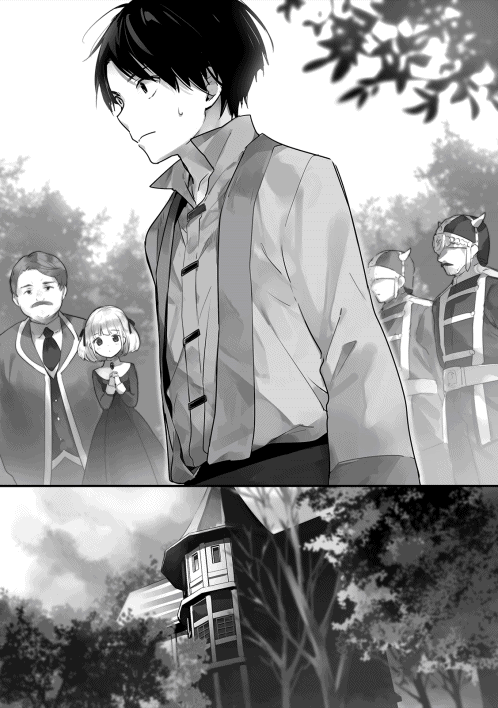
いずれにしても失敗はアルフレッド自身の責任だから、気にするなとのことだった。アンナも通過できたことで、アルフレッドは自信を持ったようだ。
数分後。財務卿がアルフレッドから離れると、愛娘へと足を進める。準備が整ったようだ。途中、幸助へ鋭い視線を向ける。何も言わなかったが、途方もないプレッシャーを感じる幸助。「娘に何かあってみろ。一族根絶やしにしてくれる」とでも言われている気分だ。
令嬢が侍従に連れられ幸助のもとへやって来た。目のクリッとした可愛らしい子だ。年の頃はパロより少し上くらいだろうか。聞いた話では、一族の盛衰はこの小さな女の子にかかっているそうだ。どのような事情か知らないが、貴族の世界も大変である。
「さ、行きましょう」
幸助はズボンで念入りに手汗を拭くと、令嬢に手を差し出す。柔らかで雪のように白い手が幸助の手を掴む。皆の視線が幸助の背に突き刺さるのを感じる。緊張は最高潮だ。ゴクリと唾を飲み込むと、ドアへ手をかける。
ガチャリ。
ドアが開いた。これはいつものことだ。問題はここからである。
幸助は一歩踏み出す。
令嬢も半歩後ろからついてくる。手を握られた感覚はまだ続いている。
そしてもう一歩。足を進めると、店の中へ入った。幸助の体は完全に店内だ。恐るおそる振り返ってみる。
令嬢はそこにいた。
成功だ。その場にへたり込みそうになるのをこらえる幸助。まだ仕事は終わりではない。そのまま奥に進むと、アレストリアの姿を見つける。
「来たか」
「はい」
「小娘。ここに座るがよい」
令嬢は幸助の手を離すと、言われた通りアレストリアの指定した椅子に座る。
「これからそなたに基礎魔法を伝授する。使いこなせるかどうかはそなた次第じゃ。魔法の習得は決して楽ではない。早くて五日。長ければひと月、もしかしたら永遠に身に着かんかもしれん。それに習得するのと使いこなすのは全く別じゃ。ここで習得できたその日から、毎日の鍛錬を欠かすんじゃない」
真剣な眼差しでアレストリアの話に耳を傾ける令嬢。自分の置かれている立場はよく理解している。
「最後に忠告をする。魔法はそなたにきわめて大きな力をもたらすことになる。その力、世のため人のために使うのじゃぞ」
令嬢は首を縦に振る。アレストリアはその表情を凝視する。店内は緊張感をはらんだ静寂に包まれる。
「............」
そうすること約一分。納得がいったのか、アレストリアの硬い表情が解けると、幸助へ視線を送る。
「ここに連れてきたからには大丈夫じゃ。あとは妾に任せろ。お主は外すがよい」
「よろしくお願いします」
アレストリアに頭を下げ、幸助は店の外へ出る。その瞬間、待機していた人たちから一斉に幸助へ視線が注がれる。それに負けじと幸助は声を張る。
「お嬢様は無事、魔法の習得に入られました！」
それから令嬢は、日中は店内で魔法の指導を受け、夜は領主の館で過ごすという生活を続けた。幸助は毎日朝晩、店の内外への送迎役をこなした。魔法の習得が完了したのは十日後だ。令嬢は無事、初級魔法を習得することができた。
これで幸助の一世一代の大仕事は、無事完了した。それに伴いアレストリアはこの先数年、食うに困ることはなくなった。
◇
令嬢による魔法習得のバタバタが落ち着いた、とある日の午後。幸助は一人で魔法書店を訪れている。アレストリアにしか聞けない相談事をするためだ。
「ケロちゃん、一つ聞いてもいい？」
「何じゃ？ 何でも聞いてみるがよい」
モゴモゴとキャラメルを口に含みながらアレストリアは返事をした。もちろんキャラメルは幸助からのお土産だ。アレストリアには依存性を発揮しているようだ。
「フレン王国の筆頭魔法研究者って知ってる？」
うむむと言いながら斜め上を見るアレストリア。イマイチピンと来ていないようである。
「二年くらい前にはいたはずなんだけど、三十代くらいの女性で不健康そうな顔をして......」
「ああ！ それならクビになったと聞き及んでおる。何でも禁書庫に勝手に入って、かの国の貴重な魔法書に好き勝手したらしいからの」
「えっ!?」
「それがどうかしたのか？」
「いや、隣の国の魔法事情はどうなってるのかなと思って......」
想定外の言葉がアレストリアの口から飛び出してきた。幸助が日本に還してもらうための頼みの綱は、とうの昔に切れていた。
ほとんど期待はしていなかった。それにサラと出会いアロルドの店を改善した時に、この世界で生きていくと決意した。だが、心の中でわずかな可能性にかけていたのも事実だ。日本に帰ることができるのではないかと......。
研究者という立場で王城にいられなければ、送還魔法など研究できないだろう。他の研究者に召喚の話をすることもできない。もたらされた事実に幸助は呆然とする。
「......」
「何を黙っておる。ほれっ、いつもの」
「......えっ、何のこと？」
「ほれ、有益な情報だったのじゃろ。いつものように、妾の頭をポンポンせぬか」
そう言いながら頭を差し出すアレストリア。幸助はその頭を気もそぞろにポンポンする。それでもアレストリアは嬉しそうな表情を浮かべる。
「では次の質問です」
「なんじゃ、怖い顔をしおって......」
「召喚魔法やその逆の送還魔法は聞いたことありますか？」
「そんなのは聞いたことないのぅ。似たようなので時を操る魔法というのは遥か昔にあったと聞き及んでおるが」
「そう、ですか......」
アレストリアでも召喚魔法を知らなかった。となればもう幸助が日本に帰れる可能性はゼロと言ってもよい。
（腹をくくるか......）
幸助は強い意志を固める。もう日本に帰る望みは捨てるということを。
この世界で生きていくしかないならば、次に取る行動はただ一つ。それは、サラへ自分の想いを伝えることだ。
幸助はサラのことをずっと意識し続けていた。アロルドの店を改善し終えた頃からずっとだ。それでも、できるだけその気持ちが大きくならないようにしていた。日本に帰ることで、召喚直後のような寂しい思いをするのは嫌だったからだ。だが、もう抑える必要などない。幸助は独り頷くと、アレストリアへ質問する。
「つかぬことを伺ってもよろしいでしょうか？」
「何じゃ、さっきからその変な態度は。今日のお主はおかしいぞ？」
「いろいろ思うところがありまして......」
「して、何じゃ？」
「この国の女性の口説き方と申しますか、えっと......。付き合ってお互いが合意したらどう結婚に至るみたいなことを......」
「はっ、付き合うって何じゃ？ 意中の女でもおるんじゃったらズバッと『俺と結婚しろ』くらい言うてみたらどうじゃ。他の言葉など要らぬ」
「そ、そうなんですね」
「お主もしかして......」
「はい。サラに想いを伝えようと思います」
「そうか、そういうことか」
それならちょっと待っておれと言い残すと、アレストリアは店の奥に消えていった。待つこと十分。ようやく戻ってきたアレストリアの手には石のようなものが握られていた。
「お主にこれやろう」
「これは......？」
「婚姻を申し込む時、この魔力のこもった指輪を渡すと良かろう。いずれお主を助ける時が来るはずじゃ」
「いや、こんな立派なもの、もらえないですよ」
反射的にそう答える幸助。宝石は素人だが、どう見ても高そうだ。
「ただでここまでしてもらったのじゃ。それにお主の立場を微妙なものにもしてしまった。それくらい安いもんじゃ。受け取ってはくれぬか？」
たった一人の友人でもあるしのう、と幸助から視線を逸らしつつアレストリアは続ける。
幸助はアレストリアの手元へ目を落とす。小さな手のひらに載っていたのは、親指の先ほどもある真っ赤な石がはめられた指輪だった。コンロで使う魔石よりも色が澄んでおり、輝きはけた違いだ。ゴクリと生唾を飲み込む幸助。
「......では、お言葉に甘えて」
アレストリアの手から指輪を受け取る。それはずっしりと重かった。
「国宝級じゃ。必ずやサラを射止めるのじゃぞ」
「ありがとうございます」
幸助はカバンに入れていた手ぬぐいに包むと、指輪をそっとしまう。
「あともう一つ、お主に授けたいものがある」
「もう一つ僕に......？」
「この店の結界は、選ばれし者しか入れないと言っておったじゃろ」
そう言いながらアレストリアは、カウンターの上にある魔法書を手に取る。
「なぜお主は入れた？ なぜ他人まで呼び入れることができたと思う？」
確かに結界は存在した。だがアレストリアは結界も完璧ではないと言っていた。だから幸助自身は、自分が店に入れる理由は結界のバグのようなものが原因だと思っていたのだ。どうもその考えは違ってる雰囲気だ。
「それって......」
「そうじゃ。お主には類稀なる素質がある」
アレストリアは手にした魔法書を幸助へ差し出す。それは棚に並んでいる物と比べると、より分厚く、古めかしく、荘厳なものだった。
「......」
「お主ならこの魔法書を授けるに十分じゃ。こんな時が来るとは思わなかった。長生きはするもんじゃの」
「でも......」
「気にするな。これも礼の一つ、いや魔法書を護る者としての責務じゃ」
自分に魔法の素質がある。しかも、本物の魔法書を与えてもらえる。突然もたらされた途方もない情報に、体が熱くなるのを感じる幸助。
「ほら、受け取るがよい」
「でも、古代文字はどうやって読めば......」
「その必要はない。よく見てみろ」
幸助はアレストリアから魔法書を受け取ると、ペラペラとページをめくる。そこには何も書かれていなかった。白紙ばかりが続いていたのだ。
「究極の魔法書には文字などいらぬ。この能力、お主と大切な人を守るために使うがよい」
その直後。アレストリアが、幸助の聞いたことのない言語を唱えると、幸助の体はまばゆいばかりの閃光に包まれた。
◇
秋も深まったある日、幸助は領主の館を訪れる。アンナから呼び出しがあったためだ。
「コースケさん、おめでとうございます！ 褒章に選ばれることが決まりました」
「えっ、本当ですか!?」
「お父様とニーナさんも一緒です」
以前王都にいる時に、幸助が推薦されているという話は聞いた。王国の名を冠したマドリー褒章。これはその年の功労者に、国王自らが授けるという名誉ある褒章だ。
幸助が推薦されたきっかけは魔道具の普及への貢献であった。平民へ与えることの是非で選考会は揉めたのだが、有力者の一人であるグランベル財務卿が後押ししたことが大きかった。
「何だか実感わきませんね......」
「それだけ我が領地、いや、王国に貢献してくださったのですよ、コースケさんは」
「ありがとうございます」
素直に礼を述べる幸助。初めて受章の可能性を告げられた時は混乱したが、今は違う。むしろ嬉しさすら感じられる。この世界で生きていくと決めた。いや、決めざるを得なかった。それに市民権もこの国に移した。だからフレン王国にどう思われようが関係ないのだ。
「授章式の後、パーティーもありますので是非パートナーもお連れくださいね」
「パートナー？」
「もちろん、サラさんのことですよ」
アンナはにこりとほほ笑む。パートナーと言われ、複雑な気分になる幸助。あれからまだ、サラへ自分の想いを伝えることができていない。アレストリアから受け取った指輪は、いつも持ち歩くカバンに入ったままだ。さすがに手ぬぐいにくるんだままではなく、ちゃんとした箱に入れてあるが......。
◇
あれよあれよという間に時間は経過し、授章式の日がやって来た。残念ながらサラとの関係は、変わらずだ。受章を我が事のように喜んでくれたサラ。パーティーは一緒に参加してくれることになった。
「ふぅ、本当にここに来ることになるとはなぁ」
幸助は今、王城に来ている。通された大広間には、これから褒章を受け取る者が勢ぞろいしていた。壁面には騎士がずらっと並んでいる。部屋は広いのに圧迫感を感じる幸助。
受章者は二十人くらいいる。身なりからして、どうやら平民は幸助だけのようだ。浮いている感が否めない。それでも今までに着たことのない一張羅に身を包んでいる。貴族たちが煌びやかすぎるのだ。幸助の立っている場所は、平民なので一番後ろ。サラたち同伴者は別室で待機だ。せめて誰か一人でも知り合いが隣にいてくれたら心強いのだが、残念ながらアルフレッドやニーナは前方にいる。
現在、既に前座が始まっている。国王はこんなに素晴らしいとか、受賞者は昨年よりも四人増えたといった内容だ。どこの世界でもこういった話はかったるい。
「続いて、受章者の紹介に参ります」
司会は受賞者の名前と功績を読み上げ始めた。何とか侯爵の第五男、誰それが周辺三国計算大会で優勝したとか、誰それ男爵が農地生産を二割増しにしたといった具合だ。幸助にとっては「何でこの功績で？」という人も多く含まれていた。きっと大人の事情でもあるのだろう。もちろんアルフレッドとニーナは魔道具開発と普及の功績だ。
最後に幸助の名前が呼ばれた。功績は、アルフレッドとニーナの功績を大きく補佐したという、回りくどい内容だった。魔法書のことには触れられていない。
「それでは、授章式に入ります」
（やばい、緊張してきたぞ）
幸助は頭の中で授章式の段取りを確認する。国王が来たら周りの真似をして跪く。決して頭を上げない。それだけを守ればよい。簡単だ。
ドドドドドン！
打楽器のならされる音がした。静まる室内に司会の声が響く。
「国王陛下のお成り！」
いよいよだ。周りに合わせ、幸助も跪く。視界には大理石の張られた床しか映っていない。壇上で何が起こっているのか分からない。衣擦れの音だけが聞こえてくる。その音が止むと、大広間は水を打ったようになる。
「諸君の働きに感謝し、褒章及び金一封を授ける」
再び衣擦れの音が聞こえ、その音が遠ざかる。国王の言葉はたったこれだけだった。だが、不思議と心に響くものがあった。これが王の威厳というものなのかと感じる幸助。
あっという間だった。係員から褒章の現物を受け取ると、パーティー会場へ移動する。
「ふぅ、緊張したな」
パーティ会場へ入ると幸助は室内を見渡す。外はもう暗くなっていたが、シャンデリアや壁面のランプが煌々と焚かれている室内はそれなりに明るい。集う人は百人は下らない。誰もが華やかな衣装に身を包んでいる。まるで映画のワンシーンが飛び出してきたように感じる幸助。
正面には絶対に食べきれないだろうという量の料理が並んでいた。レッドボアらしき魔物の丸焼きもある。水の街でランディと頬張った大きな海老もいた。いくつかの料理の前ではコックが待機している。幸助の期待感が高まる。
「コースケさん！」
よだれを垂らしそうになったところ、聞き覚えのある声に呼び止められた。幸助は声をした方へ振り返る。
「！！！」
そこにはワインレッドのドレスに身を包むサラの姿があった。つい先日、十六歳を迎えたばかりだ。今日は、いつものポニーテールではなくアップにしている。今までになく、大人っぽさが引き立っている。その姿に、幸助は息をのむ。
「どう？ アンナさんに見立ててもらったんだ」
そう言うとサラは裾を掴み、ちょこんとポーズを決める。完璧だ。幸助の心拍数が高くなる。
「か、可愛いよ......サラ」
「ほんと？ ありがと！」
二人で顔を赤くしていると、生演奏が始まった。数組の男女が早速ダンスを始める。そんなことはできない幸助とサラは、ひたすら料理に舌鼓を打つ。
周りは貴族ばかりだ。頼みの綱のアルフレッドとニーナの周りには人が絶えない。魔道具の話でもしているのであろう。そんな時、一人の男が幸助のもとへやって来た。
「そなたがコースケか」
「はい、そうです」
慌てて頭を下げる幸助。ここにいるのは全員幸助より身分の高い人だ。目の前の男が誰かは分からないが、失礼は許されない。サラも幸助に続く。
「わたくしは東部バレン領を治めるサイモン・バレンという者だ。そなた、魔法書のことをご存知かな？」
「魔法書......ですか？」
早速情報が漏れていた。アルフレッドの言っていた言葉を思い出す。「他の貴族から魔法書店のことを聞かれたら何も答えず、必ず私を通すように」という言葉だ。だが、実際に対峙すると、そんなことは言えそうにない。どうしよう。幸助が焦っていると見覚えのある人影が近づいてきた。
「おやおや、バレン伯爵。彼は一介の商人ですので伯爵には釣り合わないかと。どうぞ私と一緒にあちらへ」
アルフレッドだった。バレン伯爵を連れて、立ち去ってくれた。幸助はその機転に心の中で感謝する。ふう、と胸をなでおろす幸助。横を見るとサラも同じ心境のようだ。
「ねえ、サラ。外に行こうか」
「そうだね。ちょっと居心地悪いしね」
二人はパーティー会場を抜け出し、すぐ側のバルコニーへ移動する。外に出た瞬間、室内のざわめきが遠くなる。生演奏の軽快なワルツだけが耳に届く。
火照った顔に涼しい風が気持ちいい。照明がないのでバルコニーは暗い。部屋からこぼれるわずかな光と月明かりだけが二人を淡く照らしている。
幸助はバルコニーの手すりに手をかけ遠くを眺める。サラもその隣で幸助の真似をする。かがり火にゆらめく町が広がっている。王都は広い。遠くまで良く見える。無意識に魔道具店や、レミィのレストランがある場所を探す。
「何だかすごいとこに来ちゃったね」
「うん。私たち、ちょっと場違いな感じだったよね」
「料理はおいしかったけどなぁ」
「素材が違うからね」
期待通り、料理はどれも絶品だった。新鮮な海鮮料理もあった。きっとその運搬には冷却庫が活用されたのであろう。
「僕たちが関わったことが、こんなとこにも影響してるなんてね」
「すごいよコースケさん。私コースケさんと出会うまで、ずっとパスタレストランの娘で終わると思ってたもん」
その時、生演奏のＢＧＭが軽快なワルツからゆったりとムードのある曲へ変わった。
「............」
「どうしたの、コースケさん？」
雰囲気からしてサラへ想いを伝えるのは今しかない。だが、その前に絶対に伝えておこう。伝えなければならない。そう決めていたことがある。勇気を振り絞り、幸助は切り出す。
「サラ、大切な話してもいいかな」
「うん......もちろんだけど、どうしたの？」
改まった幸助の態度に、サラは心配そうな表情を浮かべる。
「信じてもらえないかもしれないけど、実は僕......この世界の人間じゃないんだ」
伝えなければならないこと。それは自分が地球という異世界から召喚されたということだ。これで拒絶されたらその時は諦めよう。そう思っている。
「えっ、意味が分からないよ!?」
「僕はフレン王国出身ていうのは嘘で、この国でも隣の国でもなく、遠い遠い、全く違う世界から連れてこられたんだ」
「どのくらい遠いの？」
「どうだろ、あの星くらいかな」
と言いつつ適当に指差し、夜空を見上げる。星座には詳しくないが、小学生の頃に習ったごく一部ははっきりと覚えている。中央にきれいに並ぶ三ツ星のある星座。まぎれもないオリオン座だ。
世界は違う。それなのに星座は同じだった。
月だってそうだ。ウサギが餅つきをしている。これは召喚された直後から気付いていたことだ。宙は同じ。だが地球ではない。並行世界なのかどうか、幸助の理解を超えている。
「うーん、よく分かんないなぁ。コースケさん酔っぱらってる？」
「酔っぱらってなんかないよ。二年前、僕は地球っていう全く違う世界にいたんだ。ある日突然、召喚魔法でフレン王国に連れてこられて。だからサラたちの知らないこと、いろいろ知ってたでしょ。ハンバーグにカルボナーラ、魔道コンロや冷却庫だって、もともと僕のいた世界には当たり前にあった物なんだ。それにお店を改善する知識だってそうだよ」
幸助からもたらされた言葉に驚きを隠せないサラ。信じてくれたかどうかは分からない。無理もない。突然変なことを言いだしたのだから。
「......コースケさんの言ってることが本当だとして、いつかその世界に帰っちゃうの？」
幸助は首を横に振る。
「もう無理なんだ。ケロちゃんに聞いたら、僕をこの世界に召喚した人はもう追放されたんだって。送還魔法は見つかってないって言ってたし......。それにケロちゃんもそんな魔法知らないってさ。だから帰ることはできないんだ」
「なら家族にも、もう会えないの？」
「うん」
「お友達も？」
「......うん」
「そっか」
遠くを見るサラ。
その横顔を見つめる幸助。
何を感じているのか。どう思っているのか。幸助には分からない。
「ねえ、コースケさん」
「うん？」
「コースケさんは突然いなくなったりしないよね？」
「もちろん」
「コースケさんはコースケさんのままでいてくれるよね？」
「もちろん」
「......よかった。なら安心だ。大切な人と会えなくなるのは寂しいもんね」
幸助に視線を合わせ、笑顔になるサラ。信じてくれてるのか否かは分からない。だが、拒絶はされなかった。タイミングは今だ。幸助は懐へ手を伸ばす。
「サラ、これ......」
そう言うと幸助は用意していた指輪をサラへ見せる。魔力のこもった大きな石のついた指輪。暗い月明かりでもその輝きは健在だ。
向かい合う二人。
その状況に息をのむサラ。幸助の顔と指輪を交互に見る。
「僕はこの世界で、いや、この国で生きていくって決めたんだ。初めてトマトバジルパスタを食べたあの日から、僕の人生は大きく変わった。サラはいつも僕のことを応援してくれてた。それに困っている時、助けてくれたのはいつでもサラだった。食欲しか取り柄がないような僕だけど、もうサラのいない人生は考えられない」
自然に溢れてきた言葉を言いきると、幸助は大きく息を吸う。
「サラ、僕と結婚してください！」
そう力強く言うと、指輪をサラへ差し出す。
そのまま見つめ合う二人。
「............」
「......」
ほんの少しの時間が永遠に感じられる。口の中はカラカラだ。いつしか生演奏は別な曲に変わっていた。その曲も佳境に差し掛かったその時。サラの手がそっと幸助の手を包み、指輪を受け取る。
「はい......コースケさん！」
バルコニーに落ちる二人の月影が、一つに重なった。
◇
「──という訳で、僕とサラは結婚することになりました」
湧きおこる盛大な拍手。テーブル席が六つしかない『アロルドのパスタ亭』には、入りきらないほどの人が集まっている。貴族から平民、老人から子供まで。その誰もが大なり小なり幸助から影響をもたらされている。幸助とサラは皆の正面に立ち、結婚の挨拶を終えたところだ。今日のサラは真っ白なドレスである。真っ赤な髪とのコントラストが美しい。
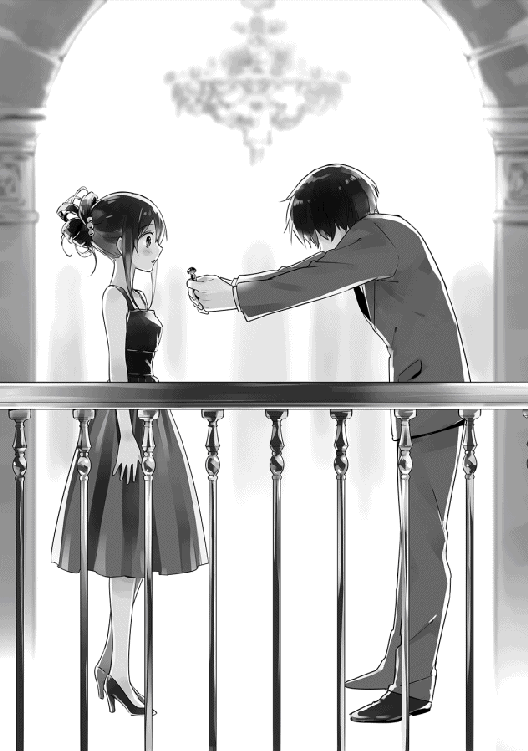
「ううううぅぅ、サラぁ」
大粒の涙を流しているのはアロルドだ。いつか来るとは覚悟していた。だが、心のどこかで来なければいいと思っていたのも事実だ。めでたいことと寂しいことが同時に訪れ、複雑な心境のアロルドであった。
「アロルドさん、他の町に出る訳ではないですしお別れじゃないんですから......」
「お前、うぅ......。サラを不幸にしたら承知しないからな」
「分かってますって」
功績が認められた幸助は、褒章とは別に領主から立派な家を与えられた。もともとは上級騎士の家だったそうで、部屋が十室もある大きな家だ。そこが二人の新居となる。二年間お世話になった宿ともお別れだ。
幸い、これまでに魔法で身を守らないといけないような事態は起こっていない。幸助自身、アレストリアの店で練習する時以外は使わないようにしている。この能力がもとで争いごとにでも狩り出されたらたまらない。魔法の発動はできたとしても、運動音痴なのだから。だから魔法のことは二人だけの秘密だ。
パーティーの主役、幸助とサラそれぞれの周りには人だかりができている。招待客が思い思いの言葉をかけている。
「おめでと、コースケ」
幸助のもとにやって来たのはルティアだ。胸元がざっくりと開いたドレスを着ている。
「ありがとうございます。ルティアさんにもずっとお世話になりっぱなしで......」
「何言ってるの。コースケのおかげであたしもこうやって店を続けられてるんだから」
「おめでとなの！」
ルティアと話していると元気な声が飛び込んできた。声の主はパロだ。その横には武器屋の店主でありパロの父、ホルガーもいた。
「ありがとう、パロ。ホルガーさんもありがとうございます」
「おう」
「パロ、アロルドさんがおいしい料理いっぱい作ってくれたから、いっぱい食べてね」
「はいなの！」
ホルガーの武器店はその後、騎士団からも冒険者からも絶大な信頼を勝ち取っている。結果、数名の鍛冶職人が勤める大所帯となっている。
「おめでとうございます。コースケさん」
「フフッ。この日が来るのが待ち遠しかったよ」
「ありがとうございます」
続いてやって来たのは、領主令嬢アンナと魔道具店のニーナだ。当初はこの店に貴族令嬢がいることに違和感があった。だが、この二人はもう常連だ。完全に溶け込んでいる。
しかし今日は違う。この町で一番偉い人、領主アルフレッドまで来ているのだ。
「領主様まで来ていただいて、何だか恐縮です」
「気にしないで。これからも深く世話になるんだからね。それにもうすぐ始まるよ、新しい魔道具ビジネスが......」
そう言うと、アルフレッドは幸助に耳打ちする。それを聞いた幸助は目が点になる。アルフレッドは幸助の背中をポンとたたくと、アンナのもとへ戻っていった。
「んもー、コースケちゃんったらぁ。久しぶりに連絡くれたと思ったらびっくりよ」
体をくねらせながらそう言ったのは隣町の造船工房店主、ウィルゴだ。
「お久しぶりです、ウィルゴさん。その後、商売はいかがですか？」
「組合に帰ったから注文がもらえることはもちろん、無償で貸し出したでしょ？ 在庫の船。あれね領主様が一括で買い取ってくださったの。だから安心して。それにね、今もしっかり息子が店番してくれてるの」
「へえ、すごいですね！ それを聞いて安心しました」
「じゃ、また後でね！」
幸助にウィンクすると、ウィルゴはサラのいる場所へと向かった。
「おめでと、コースケ君。めでたい席に呼んでくれてありがとう」
「めでたいの？」
「めでたいよ！」
「アラノさん、それに皆さんもありがとうございます」
靴屋であるアラノ一家も来てくれた。ココとミミはそれぞれ水色とピンクでフリフリの可愛らしい衣装を着ている。アラノの店は、あれからも競合店との棲み分けはうまくいっている。今では噂を聞きつけて、遠方からもわざわざ客が来てくれるようになったくらいだ。
「コースケさん、おめでとうございます」
「コースケ、約束通り呼んでくれてありがと」
続いて幸助に声をかけたのは王都の魔道具店店長アリシアと、レストランオーナーのレミィだ。今日のために、王都からわざわざやって来てくれた。二人とも従業員がそれなりにいるので、長期間抜けても店は回る。
「わざわざありがとうございます、遠くから」
「む、全然気にしてないよ。こうやって二人で来ることもできんだから」
「はい。その通りです」
笑顔で顔を合わせるアリシアとレミィ。久しぶりに友人と旅行を兼ねてのパーティー参加だ。二人の店は、幸助が関わってからそれほど時間は経過していない。今後の発展が期待されるとこだ。
アリシアとレミィが料理のあるテーブルへ向かうと、幸助の前からは人がいなくなった。
さて、自分も料理に手を伸ばそうと思った時、魔法書の番人アレストリアと視線が合った。言葉は交わさない。視線を交わすだけでお互いの気持ちは通じる。あの表情は、これからもキャラメルを持ってこいという顔だ。幸助は黙って頷く。
「コースケさん、お疲れ様」
「サラもお疲れ様」
友人たちのお祝いの嵐から解放されたサラが近づいてきた。幸助の横に立つと、その腕をとる。お互い顔を見合わせると、サラは恥ずかしそうにはにかむ。そんな姿がまた愛おしく感じる幸助。
「私たちこんなに多くの人たちのお店を改善してきたんだね」
「だね。僕も信じられないくらいだよ」
感慨に浸る幸助とサラ。ここにいる店主たちは、幸助と出会うことで人生まで大きく変化した。店主だけでない。家族や従業員たちの人生も変わった。それは、その店の商品を買う顧客たちすべてにも影響している。それもこれも、幸助が今まで通ってきた過去があってこそだ。心の中でそのことを思い起こす。
（職場の先輩には感謝だな。右も左も分からなかった僕を、自立できるまでに育ててくれたんだからな......。でもやっぱり魚屋に生まれなければこの仕事をしてなかったんだし。人生、本当にどうなるか分からないよなぁ。ってことは両親には感謝しかないな。
親父、母さん。とうとうこの日を迎えることができました。この姿を見せることができなかったのは残念だけど、僕は幸せです。育ててくれてありがとう。生んでくれてありがとう。これからもこの世界で精いっぱい生きていきます。応援してください！）
幸助は集う人たちの笑顔を眺める。レミィは念願のカルボナーラに舌鼓を打ち、アレストリアとパロはケーキでとろけている。早くしないと自分たちの分がなくなりそうだ。
「サラ。僕たちも食べようか」
「うん！」
二人はフォークを手に取ると、料理の争奪戦へ参戦する。
こうして、幸助の異世界奮闘劇は一つの区切りを迎えることとなった。
様々な店を改善してきた。
大きなことにも巻き込まれた。
これから先、もっと大きな案件に関わることは間違いないだろう。
強い人脈を手にすることができた。
使いきれないくらいのお金も手にしている。
そして一生を添い遂げたいと願える女性──サラとも結ばれた。
だが、これからも幸助のポリシーが変わることはないだろう。
──それは困った商売人の力になりたいということ。
商売人の笑顔を取り戻すため、きっとこれからも町のどこかで宣言する違いない。
「あなたのお店、僕が流行らせてみせます！」
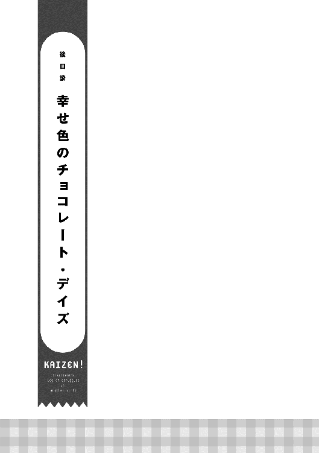
「コースケさん、ご飯できたよ！」
「はーい、すぐ行く！」
リビングのソファーで新しい魔道具販売の企画を考えていた幸助は、立ち上がりぐっと伸びをするとダイニングへ向かう。
ここは幸助とサラの新居。貴族街の入り口にある立派な家、いや、屋敷だ。
この屋敷は、領主であるアルフレッド・アヴィーラ伯爵から、日頃の働きを評価され下賜されたものだ。石造りの二階建てで、部屋は十を数える。東京で一人暮らしをしていた頃の住まいはワンルーム。この世界に来てからはずっと宿で暮らしてきた幸助にとって、持て余すほどの広さだ。
実際、ほとんどの部屋は持て余している状況だ。使用人も雇っていない。まだ住み始めて半年。きっとこれから家族も増え、少しずつ賑やかになっていくのだろう。
「今日のご飯は何かなぁ」
ドア一枚挟んだダイニングに着くと、エプロン姿のサラがせっせと料理をテーブルに運んでいるところだった。
「おっ、魚の塩焼きだ」
皿の上には、きれいに焼き色のついた魚が載っていた。ちゃんとヒレには焦げないよう、塩が塗られている。
「うん！ この前コースケさん、好きって言ってたからね」
「ありがとう、サラ。今日のもおいしそうだよ」
鯛に似た、名も知らない白身魚だが、味は折り紙付きだ。きっと日本近海で獲れたら「○○鯛」という名前がつくんだろうと、どうでもいいことを考える幸助。日本には、分類上は鯛以外の魚でも「○○鯛」と名のつく魚は多い。それらは「あやかり鯛」と呼ばれる仲間だ。鯛と名前についていれば何となくおいしそうに感じる。
「私、冷却庫でこんなに生活が変わると思わなかったなぁ」
「確かに、前と比べると便利になったよね」
二人の新居では冷却庫を始め、あらゆる魔道具が揃っている。冷却庫の普及のおかげで、今ではこうやって保存加工されていない魚も食べられるようになった。だたし、まだまだ庶民には手が出せない価格だ。幸助の働きだからこそ食べられるものである。
「いただきます」
幸助はテーブルに置かれた箸を手に取ると、魚をつつく。やはり魚を食べるには箸の方が食べやすい。そう言って自作したものだ。もちろんサラだけは、その由来を知っている。──幸助が日本で使っていた物ということを。ちなみにサラも一度は挑戦したが、うまく使えなかったのでそれ以来使っていない。
「うん。今日のもおいしいよ！ あとは白い米と味噌汁があったら最高なんだけどなぁ」
「それは見つからなかったもんね......」
幸助は二年前にこの町にたどり着いた時にも米探しをした。だが、残念なことにそれらしい情報は全く集まらなかったのだ。それでも鮮魚や冷えたエールが飲めるようになったのは大きな進歩だ。それにサラの料理の腕前も、父親譲りでメキメキと上達している。
「ま、人生長いからそのうち見つかるかも知れないし、今でも十分満足だよ」
「うん、そうだね！」
魚の塩焼きをつまみに、しっかりと冷えたエールを楽しむ幸助。他にもテーブルの上にはサラダやスープ、パンなどが並んでいる。
「コースケさん、魔道具店の新しい仕事は順調？」
「いやぁ、それがさ。また今日もニーナさんが暴走しちゃって......」
「何かあったの？」
「いきなり革命的な術式を思いついたって言い出して、研究室に閉じこもっちゃったんだよ」
「あはは、ニーナさんらしいね」
そう言いながらサラはフォークで魚をつつく。
「それで何を作ろうとしてると思う？」
「また前に言ってた空飛ぶ魔道具かなぁ」
「そうじゃないんだ。何とね、超高出力の魔道コンロだって」
需要が少なく売れなかった高出力の魔道コンロ。家庭用に出力を小さくすることでヒット商品になった。だが、ニーナはその真逆のことをしようとしていたのだ。
「............それって、何に使うの？」
「全然考えてないって」
いつの日か聞いたような展開に苦笑するサラ。もしかしたら金属を溶かしたりという使い道はあるかもしれない。だが、現状ではそこまでの出力は出ない。筐体の素材の問題もある。ニーナは相変わらず研究バカのようだ。だが、閃いてしまったものは仕方ない。
以前はそれがたたり、廃業寸前まで追い込まれていた。だが、今はベースとなる売上がしっかりとある。それに幸助がついている。だから大きく道を外すことはない。ニーナの閃きは、将来の製品に活かすこともできる可能性がある。資金力があるというのは大きなことである。
「ま、本題の新製品は他の研究者がやってくれてるからいいんだけどさ」
「そっか。なら安心だね。新しい魔道具が増えると、もっと便利になるね。......でも、コースケさんにとってはまだまだなんだろうなぁ」
「確かにもっと便利な道具はいっぱいあったよ」
「コースケさんの住んでた世界は、どんな風だったの？」
「そうだなぁ......」
斜め上を見ながら考える幸助。この世界に来てもう二年以上経つ。記憶の海から便利だった生活のことを手繰り寄せる。
「階段を上らなくても自動的に高い階まで連れてってくれる箱とか、馬も御者もいらないのに馬車より早く移動できる道具とか。他にも『これが欲しい』って言ったら家まで商品を届けてくれるサービスも便利だったなぁ」
「何それ。体動かさないことばっかじゃん。だからコースケさん、体力がないんだ」
「うっ、そうかも......」
そんなこんなで、楽しい時間を過ごす二人。時は経ち、いつの間にか魚は骨だけになっていた。幸助が最後に残ったスープを流し込むと、夕食は終わりを告げる。
「ふぅ、おなかいっぱいだよ。ごちそうさま」
「ごちそうさまでした」
満足そうに腹をさする幸助。ポッコリ出ていたお腹は、シュッとしている。毎日幸助のことを気遣ったサラのメニューが効いているようだ。今日のメニューも淡白なものが中心だった。屋台で肉串ばかり買い食いしていた頃とは大違いだ。
夜の帳はもうすっかり下りている。片づけを終え部屋を移すと、二人は淡いランプの灯りの下、仲睦まじく夜遅くまで語り合うのだった。
◇
翌日の午後遅めの時間。幸助とサラは家を出ると、大きな包みを手に『アロルドのパスタ亭』へ向かう。
「久しぶりだなぁ、アロルドさんの店に行くの」
「うん！ 最近忙しかったからね」
整然と石畳が敷き詰められたメインストリートを南へ下る二人。季節は春。柔らかな風が二人の頬をなでる。幸助とサラが出会ったのも、ちょうどこのような空気の日だった。
サラは今では『アロルドのパスタ亭』の給仕を卒業し、より忙しさを増した幸助の手伝い一本にしている。人手が減ったアロルドの店には、見習いが何人か来るようになった。今では二号店を出そうか検討しているくらいだ。
歩くこと約三十分。ロータリー式の交差点を左折すると、黒い外壁のお洒落な店に到着した。今日は定休日。店名のプレートは裏返っている。
ギィ。
ドアを開けると、既にテーブルには前菜など色とりどりの料理が並んでいた。
今日は『アロルドのパスタ亭』三周年記念日。アロルドが常連や主要なメンバーだけを招待して、パーティーを開催する日だ。まだ開始時間には少し早いからか、客席には誰もいない。二人の姿を認めたアロルドが厨房から出てくる。
「おう、来たか」
「こんにちは、アロルドさん」
「ただいま！ お父さん」
「はい、アロルドさん。これ、僕とサラからのプレゼントです」
そう言いながら幸助は、持ってきた包みをアロルドへ手渡す。
「何だこれ？ 重たいな」
「改良型の業務用魔道コンロです。魔石の消費量が減りますよ」
「お前、これ、金貨何枚もするんじゃないか？」
「細かいことは気にしない、気にしない。めでたい日なんですから」
「お、おう......」
「ところでコースケ君にサラ、いつ孫の顔が見られるのかしら」
横からそう割って入ったのは、サラの母ミレーヌだ。幸助とサラの距離を縮めた功労者の一人でもある。
「え、えっとですね......」
「わ、私、厨房を手伝ってくるね！」
サラが戦線を離脱した。まだそんな予定はない。あいまいにごまかそう、幸助がそう思ったところ、ギィ、と店のドアが開いた。姿を現したのは小麦店を経営するルティアだ。幸助の目には、ルティアがミレーヌの追及から逃れられる救世主に映る。
「お久しぶりです、ルティアさん！」
「コースケ。久しぶりね。それで、どう？ 新婚生活は」
「うっ......」
ルティアは救世主などではなかった。やはり新婚相手には気になる話題のようだ。それからしばらく幸助は、ミレーヌとルティアから根掘り葉掘り質問されるのだった。
そうこうしているうちに続々と招待客が集まり、狭い店内は人でいっぱいになった。
常連の集まりなので、幸助の知らない客たちもいる。見知った顔は、他には武器屋ホルガーとパロ、領主令嬢のアンナといったところだ。
手伝いを終えたサラが幸助の隣に座ったところで、本日の主役アロルドが登場する。
「今日は集まってくれてありがとう。こうやって三周年を迎えられたのは、みんなのおかげだ。感謝してる。今日は俺のスペシャル料理を楽しんでくれ。もちろん会費はちゃんともらうけどな」
「最後の一言、余分！」
「おめでとう！」
「よっ、色男！」
「早く食べたいよ！」
気恥ずかしそうな顔をするアロルドへ向け、皆が笑顔で拍手やヤジを飛ばす。そこへ、見習いがホカホカと湯気を上げる大皿を持ってきた。皿の中身はトマトと卵の料理のようだ。
「よし、暖かい料理もできたところで、みんな始めてくれ！」
アロルドの声で、来店客たちは我先にと料理を取りに行く。今日はビュッフェスタイルだ。従って料理は早い者勝ちとなる。
飲み物もよりどりみどりだ。もちろんアイスエールもある。これが飲めるのはアヴィーラ伯爵領では、まだ数えるほどしかない。
「おいしいね、コースケさん」
「うん。やっぱりアロルドさんの料理は最高だよ」
「このオムレツ、フワフワでおいしいですわ」
そう言いながら恍惚の表情を浮かべ、頬の横で左手を上下しているのはアンナだ。町で一番偉い領主の令嬢ながら、完全に常連客として溶け込んでいる。良いのやら悪いのやらというところだが、親や執事には黙認されている。
「うーん、いつ食べてもおいしいねぇ」
ルティアもご満悦の様子だ。ワインと合わせて肉料理を堪能している。ルティアの店は定休日。それなりに飲んでいるようで、その頬がほんのりとピンク色に染まっている。
ワイワイと賑やかな時間は、それからも続く。
あらかたの料理が皆の胃に収まった頃、アロルドが幸助のもとへやって来た。
「どうだコースケ。さっきの新作は？」
「最高でしたよ！ アロルドさん。外はパリッとして中はジューシーで濃厚な味、病みつきになりそうでした」
「お、おう」
幸助のオーバーなリアクションに、ポリポリと頬をかくアロルド。
「......そろそろタイミングだな」
「タイミング、ですか？」
「デザートを用意する」
デザートという言葉にパロの耳がピン！ と反応する。パロにとって、デザートが今日の一番の目的なのかもしれない。
アロルドは厨房へ戻ると、ケーキを載せた大皿を両手に持ち戻ってきた。幸助たちにはおなじみの、真っ白な生クリームのケーキだ。
めいめいがケーキをその手に取り堪能する。その味を知っている人はもちろんのこと、まだ食べたことのない人も幸せそうな表情を浮かべている。
「甘くてフワフワなの！」
パロはぺろりと二つ平らげた。幸助と出会った頃よりも、かなり身長が伸びている。胃の容量は身長以上に増えているようだ。
それほど時を経ずして、ケーキはなくなってしまった。これで終了かな、幸助がそう思った時、アロルドが別の大皿を持ってきた。
「あれっ、アロルドさん。まだ他にあるんですね？」
「おう、お前ら、生クリームのケーキだけだと思うなよ。今日はとっておきのデザートを用意したんだ」
アロルドの手には一枚の皿。その上には黒っぽい焼き菓子が載っている。その大きさは生クリームケーキの半分。競争率が高そうだ。参加者たちの視線がアロルドへ注がれる。
「チョコレートっつうな、帝国で人気爆発中の菓子の原料が入ったんで、それをケーキにしてみた。少ししかできなかったけどな」
「チョコレート!?」
甘党ではないが、久しぶりに聞くフレーズに心が躍る幸助。どうやらガトーショコラっぽい菓子のようだ。アロルドが客たちの視線をかき分け、テーブルへ皿を置いたその瞬間。獲物を追うピラニアの如く、女性陣がケーキへ群がる。
「............」
唖然とその様子を見守る幸助。女性陣がはけると、そこにはきれいになった皿だけがポツンと置かれていた。自分の分は取り損ねてしまった。ひとりしょぼんとしていると、隣で戦利品を手にしたサラが幸助へ声をかける。
「はい。コースケさんは、私のを半分ずつしよ。はい、どうぞ」
サラがケーキを小さく切ると、フォークを幸助の口元に差し出す。
「おっ、ありがとう、サラ」
ルティアからの視線が若干気になる幸助だったが、そのままパクリと食べる。少し噛むだけで口に広がる、甘くもほんのり苦い味に幸助は目尻を下げる。
「懐かしい味でおいしいよ」
「うーん、おいしいね」
すべてのメニューが終わると、今度はアロルドやミレーヌを交えて、二次会が始まる。
四つの小さな窓からは夜遅くまで灯りが漏れていた。
サラ、幸助への想いが通じてよかったですね。幸助の日本に帰るという望みが絶たれてしまったのは作者として心残りではありますが、彼ならきっとこれからも力強く生きてくれると信じています。
領主が最後に幸助へ耳打ちした新しい魔道具事業の話、気になりますね。彼らのいる世界は魔道産業革命前夜。きっとこれから急速に魔道具技術が発達し、様々な産業が勃興していくのだと思います。それに伴い失われる産業もありますが、現代社会がそうであったように、仕方のないことかもしれません。
でも、どれだけ効率化が進んだとしても、強いこだわりを持つ職人さんたちには頑張り続けてほしいものです。それが前時代的であったとしても、非効率だと言われようが、きっとそれを必要としている人はいるはずです。もし、閑古鳥が鳴いているとすれば、それは品質が悪いのではなく、まだ、それを必要とする人に出会っていないだけかもしれません。アラノの靴屋がそうだったように。
もちろん魔道具店のニーナのように、需要に合わせて軌道修正が必要なこともあります。ですが、やはり一番大切なのは、本作に登場したそれぞれのお店がしてきたように、商品やサービスを必要としている人のもとへ「お店に来てください。なぜなら──」と伝えることです。これが、作者が本作を通して一番お伝えしたかったことでもあります。
今流行の異世界ファンタジーに経営コンサルタントを掛け合わせたらどうなるのだろう。そんな軽い気持ちから筆を執った本作、これにて完結です。書き始めた当初は、こんなに短期間でこれだけの方に支えて頂けることになるとは、想像もできませんでした。
変わった作品だから書籍化したいと声をかけてくださったＴＯブックスさんには感謝でいっぱいです。そして素敵なイラストを描いてくださった堀泉インコさん。イラストのデータが届くたびに妻子と一緒に「かわいい！」と喜んでおりました。本当にありがとうございます。
最後に何より、三巻連続で本作を手に取ってくださった読者の皆さまに最大の謝辞を捧げます。皆さまの支えなしでは完結まで続けることはできませんでした。ありがとうございます。また、別な作品でお会いできることを楽しみにしております。
二〇一六年四月 秦本幸弥
著者プロフィール
秦本 幸弥
Hatamoto Yukiya
本作でデビュー。ＩＴコンサルティング会社を経営。トヨタ自動車から個人商店まで多くの業務改善に携わった経験を活かし、本作を書き上げる。好きな食べ物はカレーとイタリアン、それに和食と中華も。もちろんお酒も大好き。
かいぜん！ 〜異世界コンサル奮闘記〜３
2016年７月１日発行 ver.1.0
著 者 秦本幸弥
発行所 TOブックス
〒150-0045 東京都渋谷区神泉町18-８
松濤ハイツ２Ｆ
03-6452-5678（編集）
0120-933-772（営業フリーダイヤル）
Ⓒ2016 Yukiya Hatamoto
※無断で複製・複写・データ配信などをすることは、かたくお断りいたします。
本電子書籍は下記にもとづいて制作しました
かいぜん！ 〜異世界コンサル奮闘記〜３
発行日 2016年６月１日 第１刷発行
本作品の全部または一部を無断で複製、転載、配信、送信したり、ホームぺージ上に転載することを禁止します。また、本作品の内容を無断で改変、改ざん等を行うことも禁止します。
本作品購入時にご承諾いただいた規約により、有償・無償にかかわらず本作品を第三者に譲渡することはできません。
本作品を示すサムネイルなどのイメージ画像は、再ダウンロード時に予告なく変更される場合があります。
本作品は縦書きでレイアウトされています。
また、ご覧になるリーディングシステムにより、表示の差が認められることがあります。